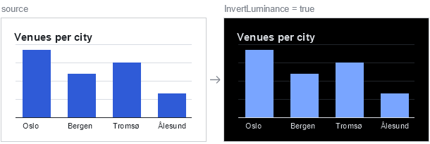

Data Modelling & Querying with Relatude.DB#
A practical manual
Relatude.DB is an open-source, C#-native object-oriented graph database with integrated full-text (BM25) search, vector/semantic search, file storage, faceting and a built-in admin UI. It runs in-process or server-hosted, and targets .NET 10+.
This manual covers the part of the engine you touch every day: how to shape your data, and how to get it back out. It uses one running example domain — a venue-and-events platform — so every concept builds on the last.
Version note. Relatude.DB is pre-1.0 and the public API still moves. Everything in this manual is taken from the source at
github.com/Relatude/Relatude.DBundersrc/Relatude.DB.NodeStore/andsrc/Relatude.DB.Common/. When something here disagrees with your build, the source wins.
Part I — Data modelling#
1. The mental model#
Everything in Relatude.DB is a node. A node has:
| Ingredient | What it is |
|---|---|
Guid Id |
The public identity. The engine also keeps an internal int __Id for fast indexing. |
NodeMeta Meta |
System-managed metadata: timestamps, culture, revision, ACL, display name, address. |
| Scalar properties | string, int, decimal, DateTime, bool, Guid, GeoCoordinate, FileValue, arrays… |
| Embedded data | Owned sub-objects stored inline in the parent — Embedded<T>, EmbeddedMap<TKey,TValue>. |
| References | A stored Guid (or Guid[]) pointing at other nodes — one-directional, no reverse index. |
| Relations | Real graph edges declared as their own classes — bidirectional, indexed, traversable. |
There is no separate "schema language". Your C# types are the schema. Point the engine at a namespace and it builds the datamodel from your interfaces and classes.
Interfaces are the model#
A node type can be an interface, a class, a record or a struct — the engine supports all four.
No attribute is needed to opt in: every type in a namespace you point the engine at becomes a node
type unless it is marked [Exclude]. [Node] only tunes one (see
stable type ids below), which is why almost no type in this manual
carries it. Interfaces are the recommended default, and the rest of this manual models almost
everything with interfaces alone.
The headline: you do not need a class at all. An interface on its own is a complete node type.
store.Create<IVenue>() hands you a generated proxy that implements it, tracks your changes and
lazily loads relations. No concrete class is ever written, and none is needed.
The reason to prefer interfaces goes beyond saving a file: C# allows a type to implement many interfaces but inherit only one class. Because Relatude.DB treats every interface a node type implements as a parent node type, interface-based modelling gives you real multiple inheritance in the datamodel — shared, queryable facets that cut across your hierarchy. Classes cannot do this.
§2 works through it.
2. Your first node type#
The three namespaces you will import in every model file:
using Relatude.DB.Common; // FileValue, GeoCoordinate, NodeKey
using Relatude.DB.Datamodels; // NodeMeta, RevisionType
using Relatude.DB.Nodes; // attributes, relation bases, Reference, References, EmbeddedMap
Here is IOrganizer — a company that runs events. This interface is the entire node type. There
is no class, and none is needed:
namespace VenueApp.Models;
public interface IOrganizer {
Guid Id { get; set; }
[DisplayNameProperty]
[StringProperty(Indexed = true, MaxLength = 200, IndexedByWords = true)]
string Name { get; set; }
[StringProperty(StringType = StringValueType.Email, UniqueValues = true)]
string ContactEmail { get; set; }
[StringProperty(Indexed = true, UniqueValues = true, RegularExpression = @"^[a-z0-9-]+$")]
string Slug { get; set; }
[CreatedUtcProperty]
DateTime CreatedUtc { get; set; }
NodeMeta Meta { get; } // read-only on the interface
}
That is it. You now have a full node type:
var org = db.Create<IOrganizer>(); // a generated proxy implementing IOrganizer
org.Name = "Nordic Live AS";
org.ContactEmail = "hello@nordiclive.no";
db.Insert(org);
var again = db.Get<IOrganizer>(org.Id);
var all = db.Query<IOrganizer>().Where(o => o.Name.StartsWith("Nordic")).Execute();
Three rules for interface node types:
Metais getter-only. So are relation, reference and embedded properties. The proxy owns their initialisation — you never assign them. Scalar properties are{ get; set; }.- Leave
IdasGuid.Emptyon insert and the store assigns one, or set it yourself first. - Put your attributes on the interface. Property definitions live on the type that first
declares them, so an attribute on a class that merely implements an interface member is ignored.
The interface is the single source of truth for the property model. The one exception is
[PropertyOverride], which gives that class its own default, text index or display name setting for the property, or asks for its value index or a facet (§3.1).
Add [Exclude] to any type or property the datamodel should skip.
Why interfaces are the better default#
| Interface | Class | |
|---|---|---|
| Multiple inheritance | yes — many interfaces per type | no — one base class |
| Instantiation | db.Create<T>() returns a proxy |
new T() or db.Create<T>() |
| Change tracking | proxy tracks property writes | you manage state yourself |
| Lazy relation loading | handled by the proxy | handled by the property types |
| Default values | not needed — the proxy handles it | you must initialise every reference type |
| Parameterless ctor | n/a | mandatory, or the model builder throws |
| Query surface | identical | identical |
The practical effect: an interface model is shorter, has no initialisation boilerplate to forget, and — the big one — composes.
Multiple inheritance with interfaces#
When the engine builds a node type it records every interface the type implements as a parent node type. So interfaces are not just a declaration style; they are the inheritance mechanism. And because a C# type may implement any number of interfaces, you get modelling shapes that a single-base-class hierarchy simply cannot express.
Define small, focused facet interfaces:
// A thing that sits somewhere on the map.
public interface ILocatable {
[GeoCoordinateProperty(Indexed = true)]
GeoCoordinate Location { get; set; }
[StringProperty(Indexed = true, MaxLength = 2)]
string CountryCode { get; set; }
}
// A thing with an identity, a name and a slug.
public interface INamedNode {
Guid Id { get; set; }
NodeMeta Meta { get; }
[DisplayNameProperty]
[StringProperty(Indexed = true, IndexedByWords = true, PrefixSearch = true)]
string Title { get; set; }
[AddressProperty]
[StringProperty(Indexed = true, UniqueValues = true)]
string Slug { get; set; }
}
// A thing with a rich-text body that should be searchable.
public interface IDescribed {
[HtmlProperty(IndexedByWords = true, IndexedBySemantic = true)]
string Description { get; set; }
}
// A thing that can be tagged.
public interface ITagged {
[StringArrayProperty(Indexed = true)]
string[] Tags { get; set; }
}
…then compose them freely, mixing and matching per type:
public interface IVenue : INamedNode, IDescribed, ILocatable, ITagged { /* venue-only */ }
public interface IEvent : INamedNode, IDescribed, ITagged { /* event-only */ }
public interface IAttendee : INamedNode, ILocatable { /* attendee-only */ }
Each facet's properties are declared exactly once, with their indexing and validation attached, and
every implementing type inherits them. Change ILocatable.Location to Indexed = false and both
venues and attendees follow. Add a fifth node type that should appear on the map and it is one
interface in the declaration — no property copying, no query to update.
A class-based model cannot express this. Venue can inherit one base class, so the moment you want
"locatable" and "described" and "tagged" you are copying properties between types and keeping
their attributes in sync by hand.
Querying across the hierarchy#
This is where multiple inheritance pays off at runtime. Query<T>() matches T and every type
descending from it, so you can query a facet interface directly and get heterogeneous results:
// Every locatable node of any type within 5 km — venues and attendees together
var nearby = db.Query<ILocatable>()
.Where(x => x.Location.IsWithin(oslo, 5_000))
.Execute();
foreach (var x in nearby) {
Console.WriteLine(x switch {
IVenue v => $"Venue: {v.Title}",
IAttendee a => $"Attendee: {a.Title}",
_ => "Something else"
});
}
// One search box over everything that has a title
var hits = db.Query<INamedNode>()
.WhereSearch("outdoor jazz", semanticRatio: 0.5)
.Execute();
// One tag cloud over everything taggable
var tagCloud = db.Query<ITagged>().Facets().AddValueFacet(x => x.Tags).Execute();
// …narrowed back down to specific types when you want that
var venuesOnly = db.Query<ILocatable>()
.WhereTypes(new[] { typeof(IVenue) }, includeDescendants: true)
.Where(x => x.CountryCode == "NO")
.Execute();
A cross-cutting search page, a global "recently changed" feed, a map view that plots anything with coordinates — each is one indexed query against a facet interface, rather than one query per concrete type merged and re-sorted in memory.
The full example model in §11 declares every property directly on each type, so that each one reads as a self-contained unit. §11.1 shows the same model refactored onto facet interfaces — that is the shape to reach for in a real project.
Two constraints to design around#
The model builder is strict about ambiguity, and both rules bite exactly where you would expect:
- Two parent interfaces may not declare the same property name. If
ILocatableandITaggedboth declaredCountryCode, any type implementing both fails to build. Keep facets disjoint, or hoist the shared member into a base interface that both extend. - Property overriding is not supported. A property is defined once, on the type that first declares it. You cannot redeclare it further down to change its attributes.
Both are checked at model-build time, not at runtime, so you find out immediately.
When you do want a class#
Classes are fully supported and there are legitimate reasons to reach for one:
- You want to
newnodes up yourself — in seed data, tests, or an import job — without a store. - You want behaviour on the type: computed members, helper methods,
ToString(). - You are deserialising directly into the model type from an external feed.
You can also pair an interface with a class that implements it, which gives you the interface as the queryable contract and the class as a concrete instantiable form. When you write a class, four extra obligations apply:
public class Organizer : IOrganizer {
public Guid Id { get; set; }
// Attributes live on IOrganizer — repeating them here has no effect.
public string Name { get; set; } = string.Empty;
public string ContactEmail { get; set; } = string.Empty;
public string Slug { get; set; } = string.Empty;
public DateTime CreatedUtc { get; set; }
public NodeMeta Meta { get; set; } = NodeMeta.Empty; // read-write on the class
}
- A parameterless constructor is mandatory. The model builder throws without one.
- Initialise every reference-typed member.
string.Empty,FileValue.Empty,NodeMeta.Empty,[]for embedded maps,new()for relation and reference properties. Interfaces need none of this. Metabecomes get/set. Still never build one — useNodeMeta.Empty.- Attributes belong on the interface when the class implements one.
Records and structs work too — a record needs the record Foo() { … } form to satisfy the
parameterless-constructor rule, and structs are supported but rarely worth it.
Optional: stable type ids#
When you do not supply an id, the engine derives one by hashing the type's full name. That is
convenient, but it means renaming a type or moving it to another namespace gives it a new
identity — and the engine sees a brand-new type with no data. Rename-proof your model by pinning
[Node(Id = …)] once, at the start of the project. The same applies to [Relation(Id = …)].
[Node(
Id = "6a1d9f2e-0b41-4c8a-9d7b-3f2c5e8a1b40",
TextIndex = BoolValue.True, // include in the BM25 index
SemanticIndex = BoolValue.False, // skip the vector index
TextIndexBoost = 1.5
)]
public interface IOrganizer { /* ... */ }
BoolValue is tri-state: Default (take it from the base types, else the database default), True,
False. TextIndex, SemanticIndex and InstantTextIndexing are inherited: see
§3.1. [Node] also accepts MinNoInstances / MaxNoInstances to
constrain how many nodes of the type, its descendants included, may exist - see
Validation happens on write.
3. Scalar properties and their attributes#
You can declare a plain property with no attribute at all and the engine infers a sensible property model from the CLR type. You add an attribute when you want indexing, validation, faceting or search behaviour.
The single most important flag is Indexed. A property must be indexed to be filtered, sorted or
faceted efficiently. Without it, the engine falls back to scanning.
The attribute catalogue#
| CLR type | Attribute |
|---|---|
string |
[StringProperty] |
string (rich text) |
[HtmlProperty] — a [StringProperty] pre-set to StringType = HTML |
int / enum |
[IntegerProperty] |
long |
[LongProperty] |
double |
[DoubleProperty] |
float |
[FloatProperty] |
decimal |
[DecimalProperty] |
bool |
[BooleanProperty] |
Guid |
[GuidProperty] |
DateTime |
[DateTimeProperty] |
DateTimeOffset |
[DateTimeOffsetProperty] |
TimeSpan |
[TimeSpanProperty] |
GeoCoordinate |
[GeoCoordinateProperty] |
byte[] |
[ByteArrayProperty] |
float[] |
[FloatArrayProperty] |
string[] |
[StringArrayProperty] |
Guid[] |
[GuidArrayProperty] |
TEnum[] |
[EnumArrayProperty] |
FileValue |
[FileProperty] |
All of them inherit shared options from PropertyAttribute:
public abstract class PropertyAttribute : Attribute {
public string? Id { get; set; } // stable property id, rename-proof
public string? ReadAccess { get; set; } // ACL slot
public string? WriteAccess { get; set; }
public bool ExcludeFromTextIndex { get; set; }
public int TextIndexBoost { get; set; }
public bool DisplayName { get; set; }
}
Strings#
[StringProperty] is the richest of the set:
[StringProperty(
MinLength = 0,
MaxLength = 4000,
StringType = StringValueType.AnyString, // AnyString | HTML | Url | Email | ...
Indexed = true, // value index: equality, range, sort
IndexedByWords = true, // BM25 full-text index
IndexedBySemantic = true, // vector / semantic index
PrefixSearch = true, // "starts with" index
InfixSearch = false, // "contains" index (expensive — opt in deliberately)
PreloadWordIndex = false,
MinWordLength = 3,
MaxWordLength = 30,
LegalValues = new[] { "draft", "published", "cancelled" },
RegularExpression = @"^[a-z0-9-]+$",
UniqueValues = true,
IgnoreDuplicateEmptyValues = true, // allow many empty values under UniqueValues
NotFacet = false, // exclude from faceting even when indexed
DefaultValue = ""
)]
public string Slug { get; set; } = string.Empty;
Use [HtmlProperty] for rich text so the HTML is stripped before word indexing:
[HtmlProperty(IndexedByWords = true, IndexedBySemantic = true)]
public string Description { get; set; } = string.Empty;
Numbers#
Numeric attributes share MinValue / MaxValue / DefaultValue / Indexed / NotFacet, plus
range-faceting controls:
[IntegerProperty(MinValue = 0, MaxValue = 100000, Indexed = true)]
public int Capacity { get; set; }
[DoubleProperty(Indexed = true, FacetRangePowerBase = 2.0, FacetRangeCount = 8)]
public double AverageRating { get; set; }
FacetRangePowerBase and FacetRangeCount control how the engine auto-buckets a numeric property
when you ask for a range facet.
decimal, DateTime, DateTimeOffset, TimeSpan and Guid are not legal C# attribute
parameter types, so their bounds and defaults are passed as strings in a fixed format:
// decimal — invariant culture
[DecimalProperty(MinValue = "0", MaxValue = "100000", DefaultValue = "0", Indexed = true)]
public decimal Price { get; set; }
// DateTime / DateTimeOffset — round-trip ("O") format
[DateTimeProperty(MinValue = "2000-01-01T00:00:00.0000000Z", Indexed = true)]
public DateTime StartsUtc { get; set; }
// TimeSpan — constant ("c") format
[TimeSpanProperty(MaxValue = "1.00:00:00", Indexed = true)]
public TimeSpan Duration { get; set; }
// Guid — plain string form
[GuidProperty(Indexed = true, UniqueValues = true)]
public Guid ExternalRef { get; set; }
Enums#
Declare the property as your enum type. The engine stores it as an integer and auto-populates the
enum metadata (FullEnumTypeName, LegalValues, LegalValueNames) so the admin UI and facets
show names rather than numbers:
public enum EventStatus { Draft = 0, Published = 1, SoldOut = 2, Cancelled = 3 }
[IntegerProperty(Indexed = true)]
public EventStatus Status { get; set; }
Arrays of enums use [EnumArrayProperty], which carries the same auto-populated metadata:
[EnumArrayProperty(Indexed = true)]
public AccessibilityFeature[] Accessibility { get; set; } = [];
Validation happens on write#
LegalValues, RegularExpression, MinValue/MaxValue, MinLength/MaxLength, UniqueValues
and MinNoInstances/MaxNoInstances are all enforced by the engine at write time. A violating
transaction fails as a whole and is rolled back, rather than silently storing bad data. The values
already stored are never checked again: tightening a rule does not stop the database from opening,
but a node whose value breaks the new rule cannot be saved until the value is changed.
RegularExpressionmust match every value written, the empty value too - a pattern such as^[a-z0-9-]+$therefore makes the value required. Allow the empty value in the pattern when it is optional (^([a-z0-9-]+)?$). It is a match anywhere in the value unless anchored with^and$.LegalValueson a string is compared ordinally. The empty value is always allowed - it is what a node holds before the value is set - so addMinLength = 1to require one. The admin UI edits such a property with a list of the values.LegalValueson an integer holds a plainintto the listed values. An enum is not held to its members, which the engine fills in for display: a[Flags]combination, or a member added in a newer version of the application, is still a value of it.MinNoInstances/MaxNoInstanceson[Node]count the nodes of the type and of every type inheriting from it, whatever their meta says (unpublished, hidden or marked deleted). The counts are checked on what the whole transaction leaves, so one that deletes a node and inserts its replacement passes at the limit, and only in the direction the transaction moves them: a type may start below its minimum (withMinNoInstances = 1the last node cannot be deleted, while the first can always be inserted), and a type with more nodes than a maximum set later keeps them and can still be updated and deleted from - it only refuses inserts.
3.1 Overriding attributes#
Sometimes the attribute you want to change is not yours to edit: the type comes from an assembly you do not build, the property is declared on a base interface other types share, or a default value has to change in production without a rebuild. Three layers decide what a type ends up with, and on one type a later layer wins over an earlier one:
- Declared - the attributes on the member or type that declares it (or its JSON model file): everything above.
- Overridden in code, on a derived type - a type sets its own value for a switch it inherits, or for one of the attributes of a property it inherits.
- Overridden at runtime - the database's overrides, written by the data model editor and applied when the database opens, exactly as if the source said so.
The text search switches are inherited. TextIndex, SemanticIndex and InstantTextIndexing
on [Node] go to the types inheriting from the type they are set on: a type that does not set one
takes it from the most specific base type that does, and only then the database default
(EnableTextIndexByDefault and friends, §12.1). Before October
2026 they applied to the one type they were set on.
[Node(TextIndex = BoolValue.True)]
public interface IContent { /* ... */ } // every type implementing IContent is text indexed ...
[Node(TextIndex = BoolValue.False)]
public class InternalNote : IContent { /* ... */ } // ... except this one
Two base types that are not related and disagree cancel out: the type gets the database default, and
the database logs a warning naming both. Set the switch on the type to choose. Semantic indexing needs
the text index, so a type that is semantically indexed - by itself, a base type or the database
default - stays text indexed whatever its TextIndex says.
An inherited property: [PropertyOverride]. A property has one declaration, but four of its
attributes may differ between the types that have it, and a type can ask for its value index and for
it to be a facet. A derived type sets these with [PropertyOverride], which offers those six and
nothing else:
On [PropertyOverride] |
What it sets for the type |
|---|---|
DefaultValue |
The value a node of the type starts with, and what a stored node reads while it has no value for the property |
ExcludeFromTextIndex |
BoolValue.True leaves the property out of the type's text index; BoolValue.False puts back one the declaration leaves out |
TextIndexBoost |
How many extra times the value goes into the type's text index; 0 cancels a boost the type inherits |
DisplayName |
BoolValue.True makes the property part of the type's display name; BoolValue.False takes it out |
Indexed |
BoolValue.True asks for the property's value index, so the type can filter, sort and facet on it. The index is shared by every type that has the property (below) |
NotFacet |
BoolValue.False asks for the property to be a facet where the declaration says NotFacet. The facet is shared by every type that has the property, like the index |
Anything left out - a switch left at BoolValue.Default, no DefaultValue, no TextIndexBoost -
is what the base types say. The examples below share this base interface:
public enum ContentStatus { Draft = 0, Published = 1, Archived = 2 }
[Node(TextIndex = BoolValue.True)]
public interface IContent {
Guid Id { get; set; }
[StringProperty(DefaultValue = "Untitled", DisplayName = true)] string Title { get; set; }
[StringProperty] string Subtitle { get; set; }
[HtmlProperty] string Body { get; set; }
[IntegerProperty(Indexed = true)] ContentStatus Status { get; set; }
}
On the type, naming the property. Name the inherited property with nameof, one attribute per
property, each with as many of the four as you need:
[Node]
[PropertyOverride(nameof(IContent.Title), DefaultValue = "Untitled news", TextIndexBoost = 2)]
[PropertyOverride(nameof(IContent.Status), DefaultValue = ContentStatus.Published)]
public class NewsArticle : IContent {
public Guid Id { get; set; }
public string Title { get; set; } = "";
public string Subtitle { get; set; } = "";
public string Body { get; set; } = "";
public ContentStatus Status { get; set; }
}
var news = db.Create<NewsArticle>(); // Title "Untitled news", Status Published
Every other type implementing IContent keeps "Untitled" and Draft. A news title also weighs
more in search: it goes into the text index two extra times, while other types' titles go in once.
An enum default is given as the enum value. A default is what db.Create<T>() starts a node with,
and what a stored node reads for a property it has no value for. new NewsArticle() is plain C#,
so it starts with the property initializers instead.
On the implementing member. A class that implements an interface property can put the attribute on its member and leave out the name. This is the one property attribute such a member can carry: other attributes there are ignored, since the interface defines the property (§2).
[Node]
public class Book : IContent {
public Guid Id { get; set; }
public string Title { get; set; } = "";
[PropertyOverride(DisplayName = BoolValue.True)] // a book shows as "Title Subtitle"
public string Subtitle { get; set; } = "";
public string Body { get; set; } = "";
public ContentStatus Status { get; set; }
}
The display name joins the values of the display-name properties with spaces, so Book shows both
values while other types show the title alone.
Turning one off. BoolValue.False and BoolValue.True work in both directions, so a type can
also take back what its base types turn on:
// tickets are found by their title, but the body - customer details - stays out of search
[Node]
[PropertyOverride(nameof(IContent.Body), ExcludeFromTextIndex = BoolValue.True)]
public class SupportTicket : IContent { /* ... */ }
Down a class chain, and on interfaces. An override reaches every type that inherits from the type it is set on, and a more specific type can override it again. Decimals, dates, durations and guids are given as strings, in the formats the property attributes use (Numbers):
[Node]
public class Product {
public Guid Id { get; set; }
[StringProperty(DisplayName = true)] public string Name { get; set; } = "";
[DecimalProperty(DefaultValue = "0", Indexed = true)] public decimal Price { get; set; }
}
[Node]
[PropertyOverride(nameof(Product.Price), DefaultValue = "25")]
public class GiftCard : Product { }
[Node]
public class DigitalGiftCard : GiftCard { } // 25, from GiftCard
[Node]
[PropertyOverride(nameof(Product.Price), DefaultValue = "50")]
public class PremiumGiftCard : GiftCard { } // 50: the more specific type wins
// an interface carries overrides too: every type implementing it starts published
[Node]
[PropertyOverride(nameof(IContent.Status), DefaultValue = ContentStatus.Published)]
public interface IPublishedOnCreate : IContent { }
Two base types that are not related and disagree cancel out, as with the switches above. The type gets what the declaration says, and the database logs a warning naming both. To choose, set the value on the type itself. Everything else about a property is one setting wherever the property is used: it has one value index, one word index and one set of rules. A type can ask for the value index and for a facet, but the rest stays with the declaration, and only an override on the declaring type changes it (the table below).
Asking for the value index, or a facet. A type that
filters, sorts or facets on a property its base type does not index asks for the index with
Indexed. A property its base type keeps out of the facets (NotFacet) it asks to make a facet with
NotFacet = BoolValue.False - NotFacet is an opt-out, so false is the value that asks:
// declared in a package: the part number is not indexed there, and the maker is no facet
[Node]
public class Part {
public Guid Id { get; set; }
[StringProperty] public string PartNumber { get; set; } = "";
[StringProperty(Indexed = true, NotFacet = true)] public string Maker { get; set; } = "";
}
// the workshop looks spare parts up by number and narrows them down by maker
[Node]
[PropertyOverride(nameof(Part.PartNumber), Indexed = BoolValue.True)]
[PropertyOverride(nameof(Part.Maker), NotFacet = BoolValue.False)]
public class SparePart : Part { }
var part = db.Query<SparePart>().Where(p => p.PartNumber == "A-1001").Execute(); // uses the index
var makers = db.Query<SparePart>().Facets().AddValueFacet(nameof(Part.Maker)).Execute();
A facet counts the values in the value index, so it needs one: asking for a facet on a property without an index does nothing, and the database logs a warning. Ask for both when the base type has neither.
A property has one value index, so the type gets the property's index, not one of its own. That index
holds the part number of every node that has the property, Part and the other types inheriting it
included. A property is indexed when its declaration says so or any type that has it asks. A type
that sets BoolValue.False only takes back its own request: it cannot take away an index the
declaration or another type wants, and the database logs a warning when a type says no to an index
that stays. To drop an index, override Indexed on the declaring type (the table below). Asking for
an index, or no longer asking, changes the model, so the database rebuilds its state and indexes
from the log at the next open.
A facet works the same way, with the values turned around. The property has one set of facet counts,
so Maker becomes a facet for Part and every other type that has it, not only for SparePart. A
type that sets NotFacet = BoolValue.True only takes back its own request, and a facet the
declaration has stays a facet.
Mistakes stop the build. A [PropertyOverride] that cannot apply fails the model build at
startup. The message names the type and the property. The build fails when the attribute:
- names a property the type declares itself. Set that property's attributes on its own property attribute instead.
- names no member of the type (a typo: use
nameof), or names a member marked[Exclude]. - names a system member: the id,
NodeMeta, the created/changed dates, or the display-name or address marker. None of these has attributes to override. - gives a
DefaultValuethat does not convert to the property's type ("a lot"for a decimal), or gives a default to a property that has none to set (arrays, files, references and the like). - sits on a type without naming the property, or sits on a member and names a different property.
- is one of two
[PropertyOverride]s for the same property on one type. Combine them into one.
[Node]
[PropertyOverride(nameof(Product.Id), DefaultValue = "x")] // fails: Id is a system member
[PropertyOverride(nameof(Product.Price), DefaultValue = "a lot")] // fails: not a decimal
public class BrokenGiftCard : Product { }
Overrides in the database are more forgiving (below): one that cannot apply is skipped with a warning, so it never stops the database from opening.
| What | Overridable attributes |
|---|---|
| Node type, inherited | TextIndex, SemanticIndex, InstantTextIndexing |
| Node type, that type only | Hidden, DefaultReadAccess, DefaultEditViewAccess |
| Property, per type (inherited) | DefaultValue, ExcludeFromTextIndex, IndexBoost (TextIndexBoost on the attributes), DisplayName |
| Property, any type that has it | Indexed, NotFacet: on the declaring type it is what the declaration says; on a type inheriting the property Indexed = true asks for the shared index and NotFacet = false for the shared facet, which the property keeps while any type asks |
| Property, on the declaring type | IndexType, IndexedByWords, TextIndexType, MinLength, MaxLength, RegularExpression, MinValue, MaxValue, FacetRangePowerBase, FacetRangeCount; on relation properties Facet, TextIndexRelatedContent, TextIndexRelatedDisplayName |
| Never | ids and names, the property type, UniqueValues, culture settings, enum metadata, what a relation, reference or embedded property points at |
TextIndexBoost on [Node] is not in the list: the engine does not use it yet.
At runtime: the data model editor. The editor (admin UI, Models) writes a change into the
source that defines it. Where that source cannot be written - classes compiled into an assembly
without a source code folder, types registered in OnDatamodelInit - the fields that can be
overridden stay open, and what is set in them is saved as an override. Each field says where its
value comes from (overridden, own, from IContent), and the arrow beside an override takes it
away. An inherited property opens as the derived type sees it, with its four per-type attributes open
for that type, and Indexed and No facet to ask for the property's value index and facet (asked
by names the other types that do). The Sources view lists every override beside what the source says. Activating saves
them for this installation and reopens the database; the nodes of a type whose indexed text changed are queued for text
indexing, and a type whose text indexing is turned off has its text taken out of the index first.
SHARED and THIS SERVER. A database keeps its overrides in two files, the way the settings are kept
in relatude.db.json and relatude.db.overrides.json (§12):
| File | What it is | Written by | |
|---|---|---|---|
| SHARED | relatude.settings/datamodel.json, or relatude.settings/<ShortName>/datamodel.json for a database with a short name |
part of the application: commit it and deploy it with the code, and every installation has the same overrides | you, or moving overrides into it from the admin UI |
| THIS SERVER | overrides/datamodel.overrides.json on the database's storage provider - relatude.data/overrides/ with the defaults |
what the data model editor changed on this installation, beside the other changes made in the admin UI; it survives a redeploy and is not in source control | activating a model |
When the database opens, THIS SERVER is merged over SHARED. A value on THIS SERVER replaces the SHARED value.
null takes the SHARED value away, so the attribute follows the source again on this installation.
Activating writes only the THIS SERVER file, and only what differs from SHARED: an override set back to the
SHARED value leaves the file.
// relatude.data/overrides/datamodel.overrides.json: THIS SERVER, this installation's
{
"NodeTypes": {
"3ad77060-788d-21b2-31c1-4305dcae3437": {
"Name": "Shop.Models.Product",
"TextIndex": null, // SHARED says false; here the source decides
"Properties": {
"8b1aa6c4-205e-740c-73ca-26d1e39111dc": { "Name": "Price", "Indexed": true, "DefaultValue": 0 }
}
}
}
}
The SHARED file has the same shape, without the nulls. Both are keyed by ids, with names beside
them for reading. In the editor every overridden field is tagged with where its value is: shared,
this server, or this server · removed for a SHARED value taken away here; the tooltip names the file, and the
arrow beside the field takes one file away at a time.
Moving overrides into SHARED. Choose Move to shared at the top right of the model editor. The
dialog lists the THIS SERVER file entry by entry, beside what SHARED says. Select overrides and choose
Move into shared: they are written into the SHARED file and removed from THIS SERVER. Nothing in force
changes, so the database is not reopened. Then commit the SHARED file. A moved null removes the
value from SHARED. Discard puts the SHARED value back in the draft (or the source's, where
SHARED has none), to be activated like any other change. Unactivated changes in the draft are not on
THIS SERVER, so activate them before moving them.
Move where the application runs from its project folder, in the Development environment: there
relatude.settings is the folder in source control. On a deployed server it is the deployed copy, and
the next deployment replaces it, with whatever was moved into it. The dialog warns about this outside
Development. Download shared file gives the file with the selected overrides moved in, without
changing anything, so you can commit it by hand.
The SHARED file is found by the database's short name, so give the short name in relatude.db.json.
A short name saved on one installation from the settings page lands in relatude.db.overrides.json,
and that installation then reads other SHARED files than the rest. The settings page and the start-up
log say so.
An override whose type or property is gone, a value that does not parse, an attribute that cannot be
overridden: each is skipped with a warning in the log and in the editor, never a reason for the
database not to open. From code, set Datamodel.Overrides before the store is created - the store
applies them as it opens.
Two things worth knowing before changing a value at runtime:
- A default is late bound. A node with no value stored for a property reads the current default, so a new default reaches nodes that never had a value - stored before the property existed, or created without setting it. Stored values are never touched. The editor warns when the type has nodes; if the property is indexed, queries on it may not see the new default for those nodes until the indexes are rebuilt.
- Rules apply to new writes. A tighter
MaxLengthorMinValuedoes not check the values already stored. TurningIndexedorIndexedByWordson builds the index from the log at the next open.
4. Marker properties#
Six attributes tag a property as playing a special structural role. At most one property per type per role.
| Attribute | Meaning |
|---|---|
[DisplayNameProperty] |
The human-readable name. Surfaces in the admin UI, search highlighting and Meta.DisplayName. |
[AddressProperty] |
The URL slug — one segment of the address, not the whole path. Surfaces as Meta.Address and feeds the URL manager (§18). |
[PublicIdProperty] |
The external id used in URLs and APIs. Defaults to Id (Guid). |
[InternalIdProperty] |
The internal int id. Defaults to __Id. |
[CreatedUtcProperty] |
Stamped with the creation time. Filter and sort by it like any indexed property. |
[ChangedUtcProperty] |
Stamped with the last-change time. Filter and sort by it like any indexed property. |
[DisplayNameProperty]
[StringProperty(Indexed = true, IndexedByWords = true)]
public string Title { get; set; } = string.Empty;
[AddressProperty]
[StringProperty(Indexed = true, UniqueValues = true)] // UniqueValues only when URLs are flat, see §18
public string Address { get; set; } = string.Empty;
[CreatedUtcProperty] public DateTime CreatedUtc { get; set; }
[ChangedUtcProperty] public DateTime ChangedUtc { get; set; }
What lives in NodeMeta#
Every node carries system metadata. Read it; never write it.
| Field | Meaning |
|---|---|
Id, InternalId |
Public Guid and internal int id. |
NodeTypeId |
The type id from [Node(Id = …)]. |
CreatedUtc, ChangedUtc |
Timestamps. |
DisplayName, Address |
Sourced from the marker properties above. |
CultureId |
Culture of this revision. |
RevisionId, RevisionType |
Revision tracking — Draft, Published, Archived, … |
CollectionId |
Logical grouping. |
ReadAccess, EditAccess, EditViewAccess, PublishAccess |
Guid-based ACL slots. |
CreatedBy, ChangedBy |
User Guids. |
ReleaseUtc, ExpireUtc |
Scheduled publishing. |
Deleted |
Soft-delete flag. |
Querying by the node's own dates#
CreatedUtc and ChangedUtc are indexed for every node of every type — a class does not have to
map them to members of its own. Refer to them through NodeMeta:
// recently changed, on any type - the base type included
db.Query<IArticle>().OrderByMetaDescending(m => m.ChangedUtc).Page(0, 50).Execute();
db.Query<IArticle>().WhereMeta(m => m.CreatedUtc >= since).Count();
A class that maps them answers the same queries through its own members — x.ChangedUtc on a
[ChangedUtcProperty] member, or x.Meta.ChangedUtc on its NodeMeta — and they use the same index.
In a query string the two are the system properties _createdUtc and _changedUtc of every type:
Where("n => n._changedUtc > " + since.Ticks). The indexes live in the engine DefaultValueIndex
names, like any other value index (§12.1). The rest of NodeMeta is not indexed
and cannot be queried; for a node with revisions the published revisions decide (the first creation,
the last change).
5. Geo coordinates#
GeoCoordinate (in Relatude.DB.Common) is a first-class, indexable value type for WGS84
latitude/longitude. It is a readonly struct, so it costs nothing to pass around.
using Relatude.DB.Common;
public interface IVenue {
// ...
[GeoCoordinateProperty(Indexed = true)] // Indexed = true enables spatial query acceleration
GeoCoordinate Location { get; set; }
}
Constructing and reading#
var oslo = new GeoCoordinate(59.9139, 10.7522);
var bergen = new GeoCoordinate(60.3913, 5.3221);
double lat = oslo.Latitude; // 59.9139… (NaN when empty)
double lon = oslo.Longitude; // 10.7522… (NaN when empty)
Console.WriteLine(oslo); // "59.9139, 10.7522"
GeoCoordinate.TryParse("59.9139, 10.7522", out var parsed); // round-trips
The empty value#
GeoCoordinate.Empty is default(GeoCoordinate) and means "no location":
var unknown = GeoCoordinate.Empty;
unknown.IsEmpty; // true
unknown.Latitude; // double.NaN
unknown.DistanceTo(oslo); // double.PositiveInfinity
unknown.IsWithin(oslo, 100_000); // false — never matches
Empty coordinates are excluded from spatial indexes entirely. This is exactly what you want: a venue whose location has not been entered yet should never show up in a "within 5 km" search.
Distance and radius tests#
double meters = oslo.DistanceTo(bergen); // great-circle distance (haversine), in metres
bool near = oslo.IsWithin(bergen, 500_000); // true — within 500 km
IsWithin(center, meters) is the important one: the query compiler recognises it inside a query
lambda and accelerates it with the spatial index. See §22 Geo queries.
How it is stored (and what that implies)#
Coordinates snap to a ~1 cm grid (31 bits per axis) on construction and are stored as a 62-bit Morton / Z-order code. Three consequences worth knowing:
- Equality, hashing and ordering coincide exactly, and every value round-trips losslessly
through
StorageValue/FromStorageValue. - Sort order follows the Z-order curve, which keeps ranges spatially coherent for index scans
but is meaningless as a user-facing sort. To sort by proximity, order by
DistanceToafter materialising the page — do notOrderBy(v => v.Location). - Radius searches over-scan slightly. The index cover is built from square Z-order cells; a circle is not square. The engine refines candidates with the exact haversine distance, so results are correct — but a very large radius touches more of the index than a small one.
JSON shape#
GeoCoordinate serialises as {"latitude": 59.91, "longitude": 10.75}, and Empty serialises as
null so it survives a round trip. On read it also accepts lat / lon / lng aliases and a
"latitude, longitude" string.
Seeing them#
The admin UI's query page has a Map view: pick a GeoCoordinate property and the result set —
the same one the search box and the facets are already narrowing — is drawn on a world map or on a
globe. A pin or a dot per node (coloured by a second property, as the visual pivot colours its
cards), a heat field, one bubble per patch of the map with a count in it, or every country shaded by
how many nodes it holds. Nodes whose coordinate is Empty are simply not on it, and the view says
how many those were.
An indexed property is read straight from the index there, so a map of a million nodes reads no nodes at all; an unindexed one has to be read node by node, which is one more reason to index a property you intend to look at.
6. Files#
FileValue (in Relatude.DB.Common) is a slot into the file storage subsystem — local disk, Azure
blob, and so on, configured separately in the admin UI. The property holds the reference; the bytes
live in storage.
[FileProperty]
public FileValue Photo { get; set; } = FileValue.Empty;
// pin a property to a specific storage provider:
[FileProperty(FileStorageProviderId = "b1c2d3e4-...")]
public FileValue Brochure { get; set; } = FileValue.Empty;
Uploading and serving bytes is covered in §17, and the URLs they are served on in §18.
7. Embedded data#
Embedded objects are owned sub-trees. They are stored inline in the parent node, they have no independent identity in the graph, and they live and die with the parent. Reach for them when a value only makes sense in the context of its parent: opening hours on a venue, line items on an order, translations on a label.
Two flavours:
Embedded<T> — a collection keyed by the embedded object's own Guid Id#
[EmbeddedProperty(IncludeTypes = IncludeTypeOptions.ThisTypeAndDescending)]
public Embedded<PriceTier> PriceTiers { get; set; } = [];
IncludeTypeOptions controls which subtypes are allowed in the slot.
EmbeddedMap<TKey, TValue> — a collection keyed by a property of the value#
public class OpeningHours {
public Guid Id { get; set; }
public string DayCode { get; set; } = string.Empty; // "mon", "tue", …
public TimeSpan Opens { get; set; }
public TimeSpan Closes { get; set; }
}
public interface IVenue {
// ...
[EmbeddedMapProperty(
KeyProperty = nameof(OpeningHours.DayCode),
KeyType = KeyPropertyType.NodeProperty)] // or NodeGuidId / NodeIntegerId
EmbeddedMap<string, OpeningHours> Hours { get; }
}
Naming a KeyProperty is enough — it takes precedence over KeyType, so the second line above is
documentation rather than necessity. KeyType is what you set when there is no key property:
NodeGuidId keys by the embedded value's Guid Id (which is exactly what Embedded<T> is
shorthand for) and NodeIntegerId by its int id. With no attribute at all the key type is inferred
from TKey: Guid → NodeGuidId, int → NodeIntegerId, anything else is an error telling you
to name a KeyProperty.
The key property has to live on the closest common base of the allowed inner types, and its CLR
type must equal TKey — both are checked at model-build time.
Working with an embedded map#
var venue = db.Create<IVenue>();
var monday = new OpeningHours { DayCode = "mon", Opens = new(9, 0, 0), Closes = new(23, 0, 0) };
venue.Hours.Add(monday);
db.Insert(venue);
// only *after* the parent is persisted can you read by key:
var stored = db.Get<IVenue>(venue.Id);
var mon = stored.Hours["mon"];
int days = stored.Hours.Count; // a property, not a method
bool open = stored.Hours.Contains("mon"); // by key, not by value
foreach (var h in stored.Hours) { // EmbeddedMap<TKey,TValue> is IEnumerable<TValue>
Console.WriteLine($"{h.DayCode}: {h.Opens}–{h.Closes}");
}
foreach (var (day, h) in stored.Hours.KeysAndValues()) { … } // when you want the keys too
Gotcha. Before the parent is inserted, only
Add,Clear,Countand enumeration are safe. Anything keyed — the indexer,Contains,KeysAndValues()— throwsInvalidOperationExceptionuntil the parent has been persisted, because the keys are evaluated by the store.
8. References — lightweight pointers#
A reference is a Guid (or an ordered Guid[]) stored directly on the node. It is a one-way
pointer: cheap to store, cheap to set, and it does not create a reverse index.
| Type | Stores | Use for |
|---|---|---|
Reference<T> |
one Guid |
"the cover image of this event" |
References<T> |
ordered Guid[], duplicates preserved |
"the sponsors of this event, in billing order" |
public interface IEvent {
// ...
[ReferenceProperty(Indexed = true)] // Indexed = true is required to filter / facet on it
Reference<IMediaAsset> Cover { get; }
[ReferencesProperty(Indexed = true)]
References<IOrganizer> Sponsors { get; }
}
On a concrete class, initialise them:
public Reference<IMediaAsset> Cover { get; set; } = new();
public References<IOrganizer> Sponsors { get; set; } = new();
Reading and writing a Reference<T>#
var ev = db.Get<IEvent>(eventId);
ev.Cover.IsSet(); // is a target set at all?
ev.Cover.Id; // the raw Guid (Guid.Empty when unset)
if (ev.Cover.TryGet(out var asset)) { // lazily loads the target
Console.WriteLine(asset.FileName);
}
var img = ev.Cover.Get(); // throws when unset
ev.Cover.Set(someAssetId); // by id
ev.Cover.Set(someAsset, db); // by instance
ev.Cover.Clear();
db.Update(ev); // references are node data — persist with a normal Update
Reading and writing a References<T>#
ev.Sponsors.Ids; // Guid[] in stored order
ev.Sponsors.Count();
ev.Sponsors.Contains(organizerId);
ev.Sponsors.Add(organizerId);
ev.Sponsors.Add(organizerNode, db);
ev.Sponsors.Remove(organizerId); // removes every occurrence
ev.Sponsors.Clear();
ev.Sponsors.Ids = new[] { a, b, c }; // replace wholesale, order preserved
db.Update(ev);
foreach (var sponsor in ev.Sponsors.Get()) { // lazily loads every live target, in order
Console.WriteLine(sponsor.Name);
}
The enumeration trap. Both
Reference<T>andReferences<T>implementIEnumerable<T>, butforeachonly yields preloaded data. If you did not.Preload(...)in the query, theforeachsilently yields nothing. Use.Get()/.TryGet(out …)for lazy loading, andforeachonly after aPreload. This is a deliberate design: it makes the N+1 query cost impossible to incur by accident.
Stale targets — deleted nodes, or nodes of the wrong type — are skipped by References<T>.Get()
rather than throwing. With many references per value, stale entries are routine and the engine
treats them as such.
9. Relations — the graph edges#
A relation is a real, bidirectional, indexed edge. Relating A to B automatically relates B back to A. Relations are what make this a graph database: they are traversable, filterable and countable without loading either side.
Relations are not foreign keys. You never store VenueId on an event. You declare a relation
class, and expose one nested property class per side.
The five shapes#
// 1. Symmetric 1:1 — "spouse". Both sides are the same property.
public class PairedWith : OneOne<IVenue> {
public class Pair : One { }
}
// 2. Directional 1:1 — "husband ↔ wife".
public class PrimaryContact : OneToOne<IOrganizer, IAttendee> {
public class Organizer : OneFrom { }
public class Contact : OneTo { }
}
// 3. Directional 1:N — "parent ↔ children". The workhorse.
public class EventsAtVenue : OneToMany<IVenue, IEvent> {
public class Venue : One { } // goes on IEvent — the "one" side
public class Events : Many { } // goes on IVenue — the "many" side
}
// 4. Symmetric N:N — "friends".
public class Friends : ManyMany<IAttendee> {
public class Peers : Many { }
}
// 5. Directional N:N — "teachers ↔ students".
public class Attendance : ManyToMany<IEvent, IAttendee> {
public class Events : ManyFrom { } // goes on IAttendee
public class Attendees : ManyTo { } // goes on IEvent
}
| Base class | Symmetry | Cardinality | Nested classes available |
|---|---|---|---|
OneOne<T> |
symmetric | 1↔1, same type | One |
OneToOne<TFrom, TTo> |
directional | 1↔1 | OneFrom, OneTo |
OneToMany<TOne, TMany> |
directional | 1↔N | One, Many |
ManyMany<T> |
symmetric | N↔N, same type | Many |
ManyToMany<TFrom, TTo> |
directional | N↔N | ManyFrom, ManyTo |
There is no "zero-or-one" and no asymmetric many-to-one. Model the asymmetric case as
OneToMany in the appropriate direction. If your relationship genuinely does not fit — for
instance because the edge itself carries data like a ticket price or a role — promote the edge to
a node type with two relations hanging off it.
Using them on node types#
Each nested class becomes a property type. Give the property whatever name reads best:
public interface IVenue {
// ...
EventsAtVenue.Events Events { get; } // many events at this venue
}
public interface IEvent {
// ...
EventsAtVenue.Venue Venue { get; } // the one venue of this event
Attendance.Attendees Attendees { get; } // many attendees
}
public interface IAttendee {
// ...
Attendance.Events Attending { get; }
Friends.Peers Friends { get; }
}
On concrete classes, initialise with new():
public EventsAtVenue.Events Events { get; set; } = new();
You may omit a side you do not need. Only declare both when you want navigation in both directions.
The "one" side API#
A One / OneFrom / OneTo property is an OneProperty<T>:
var ev = db.Get<IEvent>(id);
ev.Venue.IsSet(); // is there a related node?
ev.Venue.Count(); // 0 or 1
var venue = ev.Venue.Get(); // throws when unset
if (ev.Venue.TryGet(out var v)) { … } // safe probe
ev.Venue.Contains(someVenueId);
The "many" side API#
A Many / ManyFrom / ManyTo property is a ManyProperty<T>:
var venue = db.Get<IVenue>(id);
int n = venue.Events.Count(); // counted from the index — does not load the nodes
bool has = venue.Events.Contains(evId);
foreach (var e in venue.Events) { … } // enumerates; loads lazily if not preloaded
var all = venue.Events.Get(); // IEnumerable<IEvent>
// …or keep composing as a real query, which is what you want for anything non-trivial:
var upcoming = venue.Events
.Query()
.Where(e => e.StartsUtc > DateTime.UtcNow)
.OrderBy(e => e.StartsUtc)
.Page(0, 20)
.Execute();
ManyProperty<T>.Query() returns a full IQueryOfNodes rooted at that relation, so everything in
Part III applies to it.
Unlike
Reference<T>,foreachover aManyside does load lazily when nothing was preloaded. It is still worth using.Include(...)when you are iterating many parents — see §24.
9.1 Relation lists are ordered#
A Many side is a list, not a set. Each node keeps its related items in a fixed order, and that
order is stored, durable and reorderable. This is a real modelling feature: use it for hand-curated
sequences — a programme running order, a menu, an image gallery, a set of related products — instead
of inventing a SortIndex property and sorting on it in every query.
Four consequences to design around:
AddRelationappends to the bottom. The most recently related item is last.- Enumeration follows the stored order.
foreach,Get()and preloaded includes all yield it, so a curated sequence survives a round trip untouched. - Duplicates are rejected. Relating a pair that is already related throws, as does unrelating a pair that is not related. Order plus no duplicates is exactly list semantics over a set of distinct targets.
- Each side is ordered independently. In a many-to-many relation, the order of targets on a source and the order of sources on a target are two separate orderings; reordering one says nothing about the other.
A One / OneFrom / OneTo side holds at most one item, so ordering is a Many-side concept only.
The MoveRelation… family#
Six method families reorder a list. Every one exists on NodeStore — returning TransactionResult
and taking flushToDisk: bool = false — and on Transaction, where it returns the Transaction so
calls chain.
// offset: negative moves toward the top, positive toward the bottom
db.MoveRelation<IVenue>(venue, v => v.Events, ev, offset: -1);
db.MoveRelationToTop<IVenue>(venue, v => v.Events, headliner);
db.MoveRelationToBottom<IVenue>(venue, v => v.Events, lateAddition);
// anchor is another item already in the same list
db.MoveRelationBefore<IVenue>(venue, v => v.Events, ev, anchor: other);
db.MoveRelationAfter<IVenue>(venue, v => v.Events, ev, anchor: other);
// replace the whole order in one call
db.SetRelationOrder<IVenue>(venue, v => v.Events, orderedEvents);
Chained inside a transaction — relate and position in one commit:
var t = db.CreateTransaction();
t.AddRelation<IVenue>(venue, v => v.Events, ev)
.MoveRelationToTop<IVenue>(venue, v => v.Events, ev)
.Execute();
Semantics#
- Multi-item moves behave like a list UI. Pass a collection instead of a single item and the selection keeps its internal order and compacts against the ends of the list — the behaviour you want behind a multi-select drag handle.
- Positions are clamped. Moving past the top or bottom never throws.
SetRelationOrderreorders; it does not add or remove. The ids you supply must be exactly the currently related ids.- Never reorder by un-relating and re-relating. Beyond being two writes instead of one, a
re-
AddRelationlands at the bottom, and re-relating an already-related pair throws.
Overload shapes#
Each family takes a single item or an IEnumerable of items, in three addressing styles:
MoveRelationToTop<T>(T fromNode, Expression<Func<T, object?>> expression, object item)
MoveRelationToTop<T>(Guid fromId, Expression<Func<T, object?>> expression, Guid item)
MoveRelationToTop (Guid fromId, Guid propertyId, Guid item)
MoveRelation adds int offset; MoveRelationBefore / MoveRelationAfter add an anchor of the
same shape as item; SetRelationOrder takes only itemsInOrder. On Transaction the same
families also accept int internal ids. Prefer the expression form — readable and type-checked.
For raw relation-id access there is
TransactionRelation.Move(relationId, owner, items, offset, reorderSourcesOfTarget = false), where
reorderSourcesOfTarget: true reorders a target's list of sources rather than the owner's list of
targets. Only meaningful for many-to-many, and rarely what you want from application code.
Relation options#
[Relation(
Id = "9f4e2c11-77a3-4d5e-8b21-0c6f9a3e7d54", // stable id, survives renames
DisallowCircularReferences = true // enforce acyclicity on self-referential relations
)]
public class VenueTree : OneToMany<IVenue, IVenue> {
public class Parent : One { }
public class Children : Many { }
}
[Relation] also accepts SourceTypes / TargetTypes as full type-name strings, but the generic
parameters already carry that information — you rarely need them.
Relation properties can also feed the parent's text index, which is how you make a venue findable by the names of the events held there:
[RelationProperty(
TextIndexRelatedDisplayName = true,
TextIndexRelatedContent = false,
TextIndexRecursiveLevelLimit = 1,
Facet = true // opt in to faceting on this relation
)]
public EventsAtVenue.Events Events { get; }
10. Choosing between relation, reference and embedded#
This is the decision you will make most often. The short version:
| Embedded | Reference | Relation | |
|---|---|---|---|
| Identity | none — owned by parent | target is an independent node | both sides are independent nodes |
| Direction | n/a | one-way | bidirectional, automatic |
| Reverse lookup | n/a | no | yes, indexed |
Traversable (Traverse, ShortestPath) |
no | no | yes |
| Filter by target | no | yes, with Indexed = true |
yes, WhereRelates |
| Order preserved | yes | References<T>: yes |
yes, per side — and reorderable, see §9.1 |
| Duplicates | yes | References<T>: yes |
no — relating an existing pair throws |
| Cost to change | rewrites parent node | rewrites parent node | index update, no node rewrite |
| Lifecycle | dies with parent | independent | independent |
Decision guide
- The child has no meaning outside the parent, and you never query it independently → embedded.
- You need the same target more than once, and you never need the reverse lookup →
References<T>. Note that ordering by itself is not a reason to pick this: relation lists are ordered too, and come with reorder operations that references do not have. - You point at one thing, cheaply, and never ask "what points at me?" →
Reference<T>. - You need reverse navigation, traversal, relation filters, relation facets, a curated order you can rearrange, or referential bookkeeping → relation. When in doubt, this is the right default.
Applied to the running example:
Venue.Hours→ embedded. Opening hours are meaningless without their venue.Event.Cover→Reference<IMediaAsset>. One-way pointer; nobody asks "which events use this image?" from the image side.Event.Sponsors→References<IOrganizer>. The same organizer can appear twice at different billing tiers, and we never ask an organizer for its sponsored events from that property. Order matters here, but that alone would not decide it — a relation would give ordering too, plus reorder operations; duplicates are what rule a relation out.Event ↔ Venue,Event ↔ Attendee→ relations. Both directions are navigated constantly, and a venue's event list is curated by hand — which the relation's stored order handles for free.
11. The complete example model#
Here is the whole running domain in one place. Everything in Part II and Part III queries this model.
using Relatude.DB.Common;
using Relatude.DB.Datamodels;
using Relatude.DB.Nodes;
namespace VenueApp.Models;
public enum EventStatus { Draft = 0, Published = 1, SoldOut = 2, Cancelled = 3 }
public enum VenueKind { Indoor = 0, Outdoor = 1, Hybrid = 2 }
// ────────────────────────────────────────────────────────────────────────────
// Node types
// ────────────────────────────────────────────────────────────────────────────
public interface IOrganizer {
Guid Id { get; set; }
NodeMeta Meta { get; }
[DisplayNameProperty]
[StringProperty(Indexed = true, MaxLength = 200, IndexedByWords = true)]
string Name { get; set; }
[StringProperty(StringType = StringValueType.Email, UniqueValues = true)]
string ContactEmail { get; set; }
[AddressProperty]
[StringProperty(Indexed = true, UniqueValues = true, RegularExpression = @"^[a-z0-9-]+$")]
string Slug { get; set; }
[CreatedUtcProperty] DateTime CreatedUtc { get; set; }
OrganizerEvents.Events Events { get; }
}
public interface IVenue {
Guid Id { get; set; }
NodeMeta Meta { get; }
[DisplayNameProperty]
[StringProperty(Indexed = true, IndexedByWords = true, PrefixSearch = true)]
string Name { get; set; }
[AddressProperty]
[StringProperty(Indexed = true, UniqueValues = true)]
string Slug { get; set; }
[HtmlProperty(IndexedByWords = true, IndexedBySemantic = true)]
string Description { get; set; }
[GeoCoordinateProperty(Indexed = true)]
GeoCoordinate Location { get; set; }
[StringProperty(Indexed = true, MaxLength = 2)]
string CountryCode { get; set; }
[IntegerProperty(Indexed = true, MinValue = 0)]
int Capacity { get; set; }
[IntegerProperty(Indexed = true)]
VenueKind Kind { get; set; }
[BooleanProperty(Indexed = true)]
bool IsAccessible { get; set; }
[FileProperty]
FileValue Photo { get; set; }
[EmbeddedMapProperty(KeyProperty = nameof(OpeningHours.DayCode))]
EmbeddedMap<string, OpeningHours> Hours { get; }
VenueTree.Parent Parent { get; } // e.g. a hall inside a complex
VenueTree.Children Halls { get; }
EventsAtVenue.Events Events { get; }
}
public interface IEvent {
Guid Id { get; set; }
NodeMeta Meta { get; }
[DisplayNameProperty]
[StringProperty(Indexed = true, IndexedByWords = true, IndexedBySemantic = true, PrefixSearch = true)]
string Title { get; set; }
[HtmlProperty(IndexedByWords = true, IndexedBySemantic = true)]
string Description { get; set; }
[DateTimeProperty(Indexed = true)]
DateTime StartsUtc { get; set; }
[TimeSpanProperty(Indexed = true, MaxValue = "1.00:00:00")]
TimeSpan Duration { get; set; }
[DecimalProperty(Indexed = true, MinValue = "0", DefaultValue = "0",
FacetRangePowerBase = 2.0, FacetRangeCount = 6)]
decimal Price { get; set; }
[IntegerProperty(Indexed = true)]
EventStatus Status { get; set; }
[StringArrayProperty(Indexed = true)]
string[] Tags { get; set; }
[ReferenceProperty(Indexed = true)]
Reference<IMediaAsset> Cover { get; }
[ReferencesProperty(Indexed = true)]
References<IOrganizer> Sponsors { get; }
EventsAtVenue.Venue Venue { get; }
OrganizerEvents.Host Host { get; }
Attendance.Attendees Attendees { get; }
}
public interface IAttendee {
Guid Id { get; set; }
NodeMeta Meta { get; }
[DisplayNameProperty]
[StringProperty(Indexed = true, IndexedByWords = true)]
string FullName { get; set; }
[StringProperty(StringType = StringValueType.Email, Indexed = true, UniqueValues = true)]
string Email { get; set; }
[GeoCoordinateProperty(Indexed = true)]
GeoCoordinate HomeLocation { get; set; }
Attendance.Events Attending { get; }
Friends.Peers Friends { get; }
}
public interface IMediaAsset {
Guid Id { get; set; }
NodeMeta Meta { get; }
[DisplayNameProperty]
[StringProperty(Indexed = true)]
string FileName { get; set; }
[FileProperty]
FileValue File { get; set; }
}
// ────────────────────────────────────────────────────────────────────────────
// Embedded types
// ────────────────────────────────────────────────────────────────────────────
public class OpeningHours {
public Guid Id { get; set; }
public string DayCode { get; set; } = string.Empty; // "mon" … "sun"
public TimeSpan Opens { get; set; }
public TimeSpan Closes { get; set; }
}
// ────────────────────────────────────────────────────────────────────────────
// Relations
// ────────────────────────────────────────────────────────────────────────────
public class EventsAtVenue : OneToMany<IVenue, IEvent> {
public class Venue : One { }
public class Events : Many { }
}
public class OrganizerEvents : OneToMany<IOrganizer, IEvent> {
public class Host : One { }
public class Events : Many { }
}
public class Attendance : ManyToMany<IEvent, IAttendee> {
public class Attendees : ManyTo { }
public class Events : ManyFrom { }
}
public class Friends : ManyMany<IAttendee> {
public class Peers : Many { }
}
[Relation(DisallowCircularReferences = true)]
public class VenueTree : OneToMany<IVenue, IVenue> {
public class Parent : One { }
public class Children : Many { }
}
11.1 The same model with facet interfaces#
The model above declares everything directly on each type, which keeps each one readable in isolation. In a real project you would factor the cross-cutting properties into facet interfaces, as in §2. Notice how much duplication disappears — and what it buys you at query time.
One deliberate change along the way: Venue.Name, Event.Title and Attendee.FullName all become
a single INamedNode.Title. Unifying the name is the price of the shared facet, and it is usually
worth paying — it is what makes a single search box and a single "recently changed" feed possible.
// ── Facets ──────────────────────────────────────────────────────────────────
public interface INamedNode {
Guid Id { get; set; }
NodeMeta Meta { get; }
[DisplayNameProperty]
[StringProperty(Indexed = true, IndexedByWords = true, PrefixSearch = true)]
string Title { get; set; }
[AddressProperty]
[StringProperty(Indexed = true, UniqueValues = true)]
string Slug { get; set; }
[CreatedUtcProperty] DateTime CreatedUtc { get; set; }
[ChangedUtcProperty] DateTime ChangedUtc { get; set; }
}
public interface IDescribed {
[HtmlProperty(IndexedByWords = true, IndexedBySemantic = true)]
string Description { get; set; }
}
public interface ILocatable {
[GeoCoordinateProperty(Indexed = true)]
GeoCoordinate Location { get; set; }
[StringProperty(Indexed = true, MaxLength = 2)]
string CountryCode { get; set; }
}
public interface ITagged {
[StringArrayProperty(Indexed = true)]
string[] Tags { get; set; }
}
// ── Composed node types ─────────────────────────────────────────────────────
public interface IVenue : INamedNode, IDescribed, ILocatable, ITagged {
[IntegerProperty(Indexed = true, MinValue = 0)] int Capacity { get; set; }
[IntegerProperty(Indexed = true)] VenueKind Kind { get; set; }
[BooleanProperty(Indexed = true)] bool IsAccessible { get; set; }
[FileProperty] FileValue Photo { get; set; }
[EmbeddedMapProperty(KeyProperty = nameof(OpeningHours.DayCode))]
EmbeddedMap<string, OpeningHours> Hours { get; }
VenueTree.Parent Parent { get; }
VenueTree.Children Halls { get; }
EventsAtVenue.Events Events { get; }
}
public interface IEvent : INamedNode, IDescribed, ITagged {
[DateTimeProperty(Indexed = true)] DateTime StartsUtc { get; set; }
[TimeSpanProperty(Indexed = true)] TimeSpan Duration { get; set; }
[IntegerProperty(Indexed = true)] EventStatus Status { get; set; }
[DecimalProperty(Indexed = true, MinValue = "0", DefaultValue = "0",
FacetRangePowerBase = 2.0, FacetRangeCount = 6)]
decimal Price { get; set; }
[ReferenceProperty(Indexed = true)] Reference<IMediaAsset> Cover { get; }
[ReferencesProperty(Indexed = true)] References<IOrganizer> Sponsors { get; }
EventsAtVenue.Venue Venue { get; }
OrganizerEvents.Host Host { get; }
Attendance.Attendees Attendees { get; }
}
public interface IAttendee : INamedNode, ILocatable {
[StringProperty(StringType = StringValueType.Email, Indexed = true, UniqueValues = true)]
string Email { get; set; }
Attendance.Events Attending { get; }
Friends.Peers Friends { get; }
}
public interface IOrganizer : INamedNode, IDescribed {
[StringProperty(StringType = StringValueType.Email, UniqueValues = true)]
string ContactEmail { get; set; }
OrganizerEvents.Events Events { get; }
}
public interface IMediaAsset : INamedNode {
[FileProperty] FileValue File { get; set; }
}
Id, Meta, Title, Slug and the timestamps are now written once, in INamedNode, and the
whole model inherits them. Location is written once and shared by venues and attendees.
And the payoff at query time:
// One search box across venues, events, organizers and assets
db.Query<INamedNode>().WhereSearch("nordic jazz", semanticRatio: 0.5).Execute();
// One map query across venues and attendees
db.Query<ILocatable>().Where(x => x.Location.IsWithin(oslo, 5_000)).Execute();
// One tag cloud across venues and events
db.Query<ITagged>().Facets().AddValueFacet(x => x.Tags).Execute();
// Global "recently changed" feed
db.Query<INamedNode>().OrderByDescending(x => x.ChangedUtc).Page(0, 50).Execute();
Each of those is a single indexed query. Without shared facet interfaces they would be one query per concrete type, merged and re-sorted in memory — and re-merged every time you add a type.
Watch the two constraints: because INamedNode declares
Title, no other facet may declare Title too, and no composed type may redeclare it.
12. Registering the model & the admin UI#
Server-hosted (the usual case)#
// Program.cs
var builder = WebApplication.CreateBuilder(args);
builder.AddRelatudeDB(options => {
// options.FileConverters.Add(new SkiaImageConverter());
// options.FileConverters.Add(new FFMpegVideoConverter());
});
var app = builder.Build();
app.MapGet("/", (RelatudeDBContext ctx) => $"{ctx.Database.Count()} nodes.");
app.UseRelatudeDB(); // mounts the admin UI at /relatude.db
app.Run();
AddRelatudeDB lives in the default global namespace — no using required. RelatudeDBContext is
injected by DI; ctx.Database is the NodeStore, which is the API surface for everything below.
relatude.db.json#
Everything that is not code lives in relatude.db.json: storage backends, index engines, file
stores, AI providers, admin credentials and datamodel sources. It sits in relatude.settings/
below the root data folder — ServerOptions.DefaultDataFolderPath resolved against the app's
content root, so by default relatude.settings/relatude.db.json in the app's own folder, with
relatude.data/ (the data) and relatude.data.temp/ (scratch, emptied at every start) beside
relatude.settings/. Relative paths in the file still resolve against the root data folder, not
against the folder the file is in. The Web SDK publishes the file like any other .json in the
project. The same folder holds the other files every installation shares: the definitions of custom
logs (§32.1) and the shared datamodel overrides
(§3.1). The folder is part of the application, kept in source control and
deployed with it. relatude.data/ and relatude.data.temp/ are the opposite: they belong to the
installation, so they are never committed — a typical .gitignore leaves them out — and
the project file excludes them, so that a publish does not deploy them either.
§12.2 sets out what goes where, and
what stays with an installation.
Older versions kept the file in the root data folder itself, and for a while in
relatude.settings/db/. At its first start the server moves such a file into relatude.settings/
— the text as it is, comments and all — and says so in the start-up log. A move that fails (a
read-only deployment, a lock) does not stop the start: the file is read and written where it is, a
warning says why, and the next start tries again. When an older place has a file as well, only
relatude.settings/relatude.db.json is read and the start-up log warns about the other one; delete
it once anything in it that still matters is in the new file.
If the file is missing it is created for you, from a default that points at the bundled demo
model. A store full of Relatude.DB.Demo.Models types means exactly that: the file was never
configured. The admin UI edits the same file and rewrites it wholesale, so comments in a
hand-written file survive being read but not being saved from the UI.
One server holds N containers (databases); each container names the storage it uses by id:
{
"MasterUserName": "admin", // lowercase — see below
"MasterPassword": "…", // plain text; prefer injecting these, see OnServerSettingsInit
"TokenEncryptionSecret": "…", // without it, logins do not survive a restart
"DefaultStoreId": "8f6b…", // which container ctx.Database resolves to
"DBAdminUIUrlPath": "/relatude.db", // overrides the argument passed to UseRelatudeDB()
"ContainerSettings": [
{
"Id": "8f6b…",
"Name": "MyDatabase",
"AutoOpen": true,
"WaitUntilOpen": false, // true blocks startup until the store is open
"IOSettings": [ // storage backends this container may use
{ "Id": "1a2b…", "Name": "Local disk", "IOType": "LocalDisk", "Path": "relatude.data" }
],
"IoDatabase": "1a2b…", // the transaction log — the source of truth
"IoIndexes": null, // persisted index files; falls back to IoDatabase
"IoBackup": "1a2b…",
"IoLog": "1a2b…",
"AISettings": null, // per-database AI provider; required for semantic search
"FileStoreSettings": [ // a new installation's: one copy per content, SHA256
{ "Id": "c4d5…", "IoProviderId": "1a2b…", "StoreType": "MultiFile", "MultiFileFolderDepth": 2,
"SameHashSameFile": true, "HashAlgorithm": "SHA256" }
],
"DatamodelSources": [ /* below */ ],
"LocalSettings": { /* the engine knobs: index engines, flushing, caches, backups */ }
}
]
}
An IOSettings entry is a storage backend (Memory, LocalDisk or AzureBlobStorage); the Io…
fields point at one by id. That indirection is what lets the log, the indexes and the file bytes
live in different places without repeating connection details.
LocalSettings is the per-store engine configuration — the index engines (ValueIndexes,
TextIndexes, VectorIndexes and the Default…Index ids that pick among them), the disk-flush
policy, cache sizes, auto-backup retention,
EnableTextIndexByDefault, DefaultCultureCode, and so on. Every field has a working default;
leave it out until you need it. §12.1 documents every key in
the file, object by object, with its default.
AISettings configures the container's own AI provider (embeddings and completions) and its
semantic index. TypeName picks the provider; all of them are dependency-free implementations that
ship inside Relatude.DB.Server itself (assembly Relatude.DB.Providers), so there is nothing extra
to install: AzureAIProvider (Azure OpenAI, the default) with
ServiceUrl as the resource endpoint and deployment names in CompletionModel/EmbeddingModel;
OpenAIProvider for OpenAI or any OpenAI-compatible endpoint (ServiceUrl defaults to
https://api.openai.com/v1 — point it at Mistral, Groq, Ollama or similar); and
AnthropicAIProvider for Claude completions, which pairs with an OpenAI-compatible
EmbeddingServiceUrl/EmbeddingApiKey/EmbeddingModel since Anthropic has no embeddings API.
There is also RelatudeServices, which needs no account with an AI vendor at all: it calls the
hosted Relatude AI service, which holds the vendor credentials and meters every call against your
Relatude license (§35). On a server it pays with the installation's own API
key, so ApiKey is only needed in a store built from code, and EmbeddingModel /
CompletionModel are model keys the service publishes rather than vendor model names. The license
has to carry the credit account each kind of call is charged to, with a balance: ai_embeddings for
embeddings and ai_completion for completions (no feature is needed). A refusal (no such account, no
credits, too many calls) comes back as an error naming the reason.
The vector index engine itself is not an AI setting: it is chosen in LocalSettings like the
other index kinds (VectorIndexes and DefaultVectorIndex, see below), and only exists on a
container that has AISettings.
12.1 Every setting in relatude.db.json#
The file is one JSON object, deserialised into RelatudeDBServerSettings with case-insensitive
property names, enums written as names ("LocalDisk", "Native") and // comments allowed on read.
Every field has a working default; omit what you are not changing. The tables below list all of them,
grouped by the object they sit on, with the default the engine uses when the key is absent.
Two conventions run through the whole file. Objects are wired together by Id: a container names
its storage backends and file stores by their Guid rather than repeating connection details, which is
what lets the log, the index files and the file bytes live in three different places. And relative
paths resolve against the root data folder (ServerOptions.DefaultDataFolderPath against the
content root — the content root itself unless you change it), never against the current directory.
Server level#
{
"Id": "3f9c...",
"Name": "Relatude.DB Server",
"MasterUserName": "admin",
"MasterPassword": "…",
"TokenEncryptionSecret": "…",
"DefaultStoreId": "8f6b…",
"ContainerSettings": [ /* one entry per database */ ]
}
| Key | Default | What it does |
|---|---|---|
Id |
new Guid on first write | Identifies this server. Only meaningful when several servers share settings; changing it re-identifies the server rather than reconfiguring it. |
Name, Description |
"Relatude.DB Server", null |
Labels, shown in the admin UI. |
DefaultStoreId |
the single container | Which container RelatudeDBContext.Database (and therefore ctx.Database) resolves to. Set it as soon as you have more than one. |
ContainerSettings |
one demo container | The databases. One server hosts N of them; each is independent — its own datamodel, storage, indexes and files. |
Authentication. These govern the admin UI only; they have nothing to do with your application's own users.
| Key | Default | What it does |
|---|---|---|
MasterUserName |
null | The single admin user name. Store it lowercase — the login lowercases the input before comparing. Null means no one can log in ("No master user configured on the server."). |
MasterPassword |
null | Compared verbatim, stored in plain text. Supply it through the RelatudeDB configuration section, not this file. |
TokenEncryptionSecret |
null | Key the session cookie is encrypted with. Without it the server generates a random key per process, so every restart invalidates every session. Set it to a long random string, unique per installation. |
NoLoginRequiredForLocalhost |
true |
A request that really came from a browser on this machine reaches the admin UI with no login at all. This is why it just works in development. "Really came from this machine" is decided narrowly — see below — so this does not hold once anything proxies for the server. |
AllowMasterLoginOutsideLocalhost |
false |
Until this is true, both the login endpoint and any existing session cookie are refused from a remote address. Turn it on deliberately, over HTTPS, after setting credentials. |
TokenCookieName |
"RelatudeDBToken" |
Name of the session cookie. Change it when two apps share a host name. |
TokenCookieMaxAgeInSec |
864000 (10 days) |
Lifetime of a "remember me" cookie, and the age at which any token is rejected. |
TokenCookieSecure |
true |
Secure flag on the cookie. |
TokenCookieSameSite |
true |
true → SameSite=Strict, false → None. |
TokenLockedToIP |
false |
Bind the token to the IP that created it. Safer, but it logs people out whenever their address changes. |
DBAdminUIUrlPath |
null → /relatude.db |
Overrides the path passed to UseRelatudeDB(). The routes are mapped once at startup, so changing it later only takes effect after a full process restart — the startup log says so when that happens. |
DBSettingsFilePath |
null | Present in the settings object but not read by the current build; the settings file path comes from ServerOptions. |
Relatude Services. The account an installation may use for hosted AI, imaging, files to text and
text messages, and for signing in to the admin UI (§35). None of it is
needed: with no ApiKey, nothing is charged and nothing is reported.
| Key | Default | What it does |
|---|---|---|
ApiKey |
null | An API key from the license's page at services.relatude.com: all an installation needs to use the hosted services, which charge every call to that license. A secret: keep it in the RelatudeDB configuration section, not in this file. |
LicenseKey |
null | The license's id. Not needed: it is looked up from ApiKey, and the Relatude Services page saves it beside the key. When the two disagree, the API key's license is the one used. |
AllowLicenseeAdminLogin |
false |
Adds Sign in with Relatude Services to the login page. Anyone with access to the license in the portal gets in; the master login is unaffected. Turning it off ends those sessions at once. |
PublicUrl |
null | The addresses the server is reached on, separated by commas: where a sign-in may send the browser back to. It fills itself in with every https address a signed-in admin uses the admin UI on. Localhost, and addresses approved for the installation in the portal, are accepted as well. |
DisableHeartbeat |
false |
Stops the installation reporting in (§35.4). Read at each report, so it takes effect without a restart. Not offered on the settings pages. |
ServicesServerUrl |
https://services.relatude.com |
Where the license server is. Only a self-hosted or test server changes it. |
Container level#
{
"Id": "8f6b…",
"Name": "MyDatabase",
"AutoOpen": true,
"WaitUntilOpen": false,
"IOSettings": [ … ],
"IoDatabase": "1a2b…",
"FileStoreSettings": [ … ],
"DatamodelSources": [ … ],
"AISettings": null,
"LocalSettings": { … }
}
| Key | Default | What it does |
|---|---|---|
Id |
– | The container's identity. DefaultStoreId points at it, and it survives renames. |
Name, Description |
null | Labels. Name is what the CLI's --store matches and what the admin UI shows. |
ShortName |
null | A short folder name for the database — letters, digits, - and _ — naming its folder in relatude.settings/, its SHARED folder: relatude.settings/<ShortName>/ holds the definitions of its logs (logs/, §32.1) and GraphQL endpoints (graphql/, §33.2) and its datamodel overrides (datamodel.json, §3.1). Without one they are kept directly in relatude.settings/, which is all an installation with one database needs. Set it in relatude.db.json: a short name saved for one installation from the settings page makes it read other SHARED files than the rest, and the settings page and the start-up log say so. Short names are unique, and only one database can be without one; the settings page refuses a clash, and the start-up log warns about one written by hand. A database added on the Databases page while another has none gets a short name made from its name. Changed on the settings page, its files are moved along when the database next opens. |
AutoOpen |
false |
Open this database when the host starts. Without it the database exists but stays closed until something opens it — usually the admin UI. |
WaitUntilOpen |
false |
Block startup until the open completes. Off by default, so the app starts immediately and requests arriving during the open get the 503 progress page instead. Turn it on when a failed open should fail the boot. |
IOSettings |
one local-disk entry | The storage backends this container may use. See below. |
IoDatabase |
that entry | Where the append-only transaction log lives — the source of truth. Required (or IoLog). |
IoDatabaseSecondary |
null | A second log, on other storage. With LocalSettings.SecondaryBackupLog it keeps the history a log rewrite would otherwise compact away — which is what FindOlderVersions (§16) reads. |
IoIndexes |
falls back to IoDatabase |
Where the persisted index engines write. Point it at fast local disk when the log lives on blob storage. |
IoBackup |
same entry | Where backups are written. |
IoLog |
falls back to IoDatabase |
Where the activity logs, and the logs defined for the database (§32), are written. |
FileStoreSettings |
[] |
The file stores holding FileValue bytes. See below. |
AISettings |
null | The container's AI provider and semantic index. Required for semantic/vector search. See below. |
ImagingSettings, FileToTextSettings |
null | The image AI and the file reader behind db.Imaging and db.FileToText. Null on a server is the hosted Relatude service, charged to the license. See §34. |
SMSSettings |
null | The text messages behind db.SMS: TypeName (empty or RelatudeServices for the hosted service, charged to the license; otherwise your own ISMSProvider), ServiceUrl, ApiKey, and From, the sender shown on the phone when a call names none. Null means no SMS, and db.SMS throws. See §35. |
DatamodelSources |
the bundled demo model | Where the model comes from — the previous section. |
LocalSettings |
all defaults | The engine knobs. See below. |
IOSettings — a storage backend#
{ "Id": "1a2b…", "Name": "Local disk", "IOType": "LocalDisk", "Path": "relatude.data" }
{ "Id": "9d8c…", "Name": "Azure", "IOType": "AzureBlobStorage",
"BlobConnectionString": "…", "BlobContainerName": "mydb", "LockBlob": true }
{ "Id": "0000…", "Name": "In memory", "IOType": "Memory" }
| Key | Default | What it does |
|---|---|---|
Id |
– | What the Io… fields and FileStoreSettings.IoProviderId refer to. |
Name |
null | Label. |
IOType |
Memory |
Memory (nothing survives a restart — tests and demos), LocalDisk, or AzureBlobStorage. |
Path |
"~" |
LocalDisk only. A leading ~ or a relative path is combined with the content root, and the result must stay under it — a path that escapes the content root is refused. relatude.data is the conventional value (older versions used relatude.db, which the server renames at start). |
BlobConnectionString |
null | AzureBlobStorage only, required. |
BlobContainerName |
null | AzureBlobStorage only, required. |
LockBlob |
false |
Lease every blob with an open stream, so a second process cannot write or delete it - another instance, or the next process of an overlapped recycle. Worth having wherever two instances could overlap. See Blob leases below. |
Blob leases. A lease lasts 60 seconds and is renewed in the background for as long as the stream is
open, and it is let go of when the last stream on the blob closes - also when the close fails, or when the
open fails half-way. A process that dies without letting go therefore blocks its blobs for at most a
minute: an open that finds a blob leased waits up to 75 seconds for it, and then fails with a
FileLockedException, which the startup restart treats as a lock, not as corruption. Readers of one blob
in the same process share its lease. A write that finds its lease expired - the process was paused past
it - renews it and carries on, as long as nobody touched the blob meanwhile; if another process has taken
it, the write fails instead. Earlier versions leased for ever and could leave such a lease behind,
which then blocked every open of that blob for good. To release them, open Files in the admin UI on
the storage and press the Leases button (the open lock): it lists the leased blobs and breaks every
lease this server does not hold itself. Break them only when no other instance uses the storage.
Within a LocalDisk folder the engine keeps its own layout — data/, state/, backup/, logs/ and
an index folder with one subfolder per engine — so several roles can share one backend without
colliding.
FileStoreSettings — where file bytes live#
{ "Id": "c4d5…", "IoProviderId": "1a2b…", "StoreType": "MultiFile", "MultiFileFolderDepth": 2,
"SameHashSameFile": true, "HashAlgorithm": "SHA256" }
A new installation gets this store, named as LocalSettings.DefaultFileStore: the server's default
settings, relatude new / relatude init, and a database added under Databases in the admin UI all
write one. A store added under Settings › FileValue providers, or made in code with new FileStoreSettings()
or FileStoreSettings.CreateMultiFile(ioProviderId), also starts with SameHashSameFile on and
SHA256.
| Key | Default | What it does |
|---|---|---|
Id |
– | The id you paste into [FileProperty(FileStorageProviderId = "…")], and what LocalSettings.DefaultFileStore names. |
IoProviderId |
– | Which IOSettings entry holds the bytes. Must exist, or the open throws. |
StoreType |
SingleFile |
SingleFile packs everything into one append-only container file — fewer file handles, and cheap on blob storage. MultiFile writes one file per upload, which is what you want when something outside the engine also reads the files. |
MultiFileFolderDepth |
2 | MultiFile only: how many levels of hashed subfolders to spread files over, so no directory grows unmanageably large. |
SameHashSameFile |
true; false when absent |
MultiFile only: keep one copy of any content. An upload with the same hash and length as a file the store already holds is not stored again — its FileValue points at the existing copy (FileId is then derived from the hash, and Name stays the upload's own). Shared files are only deleted by the unreferenced file cleanup, never by FileDeleteAsync. Applies to new uploads; files already stored stay where they are, and stay readable if it is turned off again. Cached conversions (thumbnails, resized images, video) are shared too, per source format. On blob storage a new file is written twice, as it is copied into place. |
HashAlgorithm |
SHA256; MD5 when absent |
MultiFile only: the hash computed over every upload, stored in FileValue.Hash and, with SameHashSameFile, what decides that two uploads are the same file. SHA256 is the safer choice when people who are not trusted can upload, as two different files with the same MD5 can be made on purpose; on processors with SHA instructions (Intel since Ice Lake / Alder Lake, AMD since Zen, ARM64 servers) it is also about three times faster than MD5. Changing it affects new uploads only. |
"When absent" is what a store gets when its JSON leaves the key out: a store written before these
two settings existed, in relatude.db.json, the overrides file or the RelatudeDB configuration
section, keeps MD5 and one copy per upload rather than changing behaviour on upgrade. A SingleFile
store ignores both: its container format records an MD5 checksum per file and never shares copies.
Leave the array empty and the store creates an implicit default store on IoDatabase: a MultiFile
store, one file per upload, MD5. A database that already runs on it keeps it as it is. Files record the
store they went into, and the implicit one's id is the empty guid: when a configured store is named as
DefaultFileStore later, new uploads go there and the files already uploaded are still read from the
implicit store.
Moving files to another store, or bringing old files up to date#
Changing the default store, or turning on SameHashSameFile or SHA256, only affects new uploads. To
move the files already stored, use Storage › File storage › Rewrite files… in the admin UI. Pick the
store to write the files into, and how it writes them: the hash (MD5 or SHA256) and Same hash, same
file. Those two are the store's own settings - changing them in the dialog saves them, and the open
store writes new uploads that way from then on, without a reopen. They cannot be chosen for the implicit
store, for a SingleFile store, or where configuration or code decides them. The job runs in the
background while the database stays in use, and its progress can be minimized to the top bar like the
other file jobs.
- Every file that belongs in the store - the files of the properties whose uploads go there: the default store, or the store a file property names - is written into it, wherever it is stored now. Files of properties that upload into another store stay where they are. A store nothing uploads into has nothing that belongs in it; make it the default first.
- A file stored elsewhere gets a copy written by the target store, with that store's hash, layout and, where it keeps one copy per content, sharing. Revisions and embedded objects are included. A stored file that several values share is copied once.
- The name, image size, meta data and extracted text stay the same, and nothing is re-indexed.
- Each node is updated under its own lock. A value that changed while its file was being copied (a new upload, say) is left alone.
- A file already in the store is rewritten only where the store would now write it differently: a
hash of the other algorithm, or a file not yet kept by its hash. That is how files stored before
SameHashSameFileorSHA256was turned on are brought up to date. - The old copies are left where they are. Older versions in a node's history still point at them. Storage › Missing and redundant files removes them; after that, those older versions can no longer give their files back.
- A file that cannot be read is reported and its value is left as it was. Running the rewrite again picks up whatever is left, including the rest of a cancelled run.
From code, call DataStoreLocal.RewriteFilesAsync(toStoreId, onProgress, cancellationToken) for what the
dialog does, or RewriteFilesAsync(fromStoreId, toStoreId, …) to move every file of one store into
another regardless of where its property uploads. Guid.Empty names the implicit store. Both return a
RewriteFilesResult with the counts and the values that could not be rewritten.
DataStoreLocal.SetFileStoreWriteOptions(storeId, sameHashSameFile, hashAlgorithm) changes how an open
MultiFile store writes new files; the settings are what it opens with next time.
AISettings — embeddings, completions and the vector index#
"AISettings": {
"TypeName": "AzureAIProvider",
"ServiceUrl": "https://my-resource.openai.azure.com",
"ApiKey": "…",
"EmbeddingModel": "text-embedding-3-small",
"CompletionModel": "gpt-4o-mini"
}
| Key | Default | What it does |
|---|---|---|
TypeName |
AzureAIProvider |
AzureAIProvider (Azure OpenAI), OpenAIProvider / OpenAI, AnthropicAIProvider / Anthropic, RelatudeServices (the hosted Relatude AI service, billed to your Relatude license instead of a vendor account), DummyAIProvider (placeholder vectors — useful in tests, and for opening a database whose real provider is unavailable), or the assembly-qualified name of your own IAIProvider (§35.2). All the built-ins ship inside Relatude.DB.Server. |
Name |
null | Label. |
ServiceUrl |
provider default | Azure: the resource endpoint. OpenAI: defaults to https://api.openai.com/v1, so point it at Mistral, Groq, Ollama or any other OpenAI-compatible endpoint. |
ApiKey |
null | Belongs in the RelatudeDB configuration section, not in this file. RelatudeServices on a server pays with the installation's own API key (§35) and needs none here. |
ApiVersion |
provider default | Overrides the api-version query parameter, for Azure OpenAI. |
EmbeddingModel |
provider default | Model (Azure: deployment) name used for embeddings. |
EmbeddingServiceUrl, EmbeddingApiKey |
fall back to ServiceUrl / ApiKey |
A separate embeddings endpoint. Required for Anthropic, which has no embeddings API — point them at an OpenAI-compatible endpoint. |
CompletionModel |
provider default | Model used for completions. |
CompletionModelsByKey |
null | Named alternatives, addressed by GetCompletionAsync(prompt, modelKey) — a cheap model and a strong one side by side. |
MaxOutputTokens |
provider default (Anthropic: 4096) | Sent when set. Anthropic requires the parameter, so it is defaulted there. |
ModelDimensions |
model default | The embedding length. It has to match the vectors already in the index: a wrong length is coerced to a placeholder rather than throwing, which shows up as uniformly poor similarity rather than as an error. |
DefaultSemanticRatio |
engine default | The semanticRatio used when a query does not name one. 0 pure BM25, 1 pure vector. |
DefaultMinimumSimilarity |
engine default | Similarity floor below which a vector hit is dropped. |
MaxCharsInBatch |
50 000 | Batching limits for the embeddings API: characters per request, |
MaxCountInBatch |
500 | paragraphs per request, and |
MaxCharsOfEach |
20 000 | the point at which a single paragraph is truncated. |
CacheType |
Native |
Where computed embeddings are cached so a reindex does not pay for them twice: Native (a local KV file), Sqlite, Memory, or None. |
FilePath |
the index folder | Folder for the provider's own files (the embedding cache). Relative paths resolve against the root data folder. |
LocalSettings — the engine#
Every key here has a working default. The groups below are ordered by how often you actually touch them.
Indexing. What gets indexed at all, and by which engine. A fresh relatude.db.json comes with one
Native value engine and one Native text engine, and the defaults pointing at them:
"LocalSettings": {
"ValueIndexes": [ { "Id": "4d1f…", "TypeName": "Native", "MaxMemoryUsageInMb": 256 } ],
"TextIndexes": [ { "Id": "9b2c…", "TypeName": "Native", "MaxMemoryUsageInMb": 256 } ],
"VectorIndexes": [ { "Id": "e7a0…", "TypeName": "HNSW", "MaxMemoryUsageInMb": 512 } ],
"DefaultValueIndex": "4d1f…",
"DefaultTextIndex": "9b2c…",
"DefaultVectorIndex": "00000000-0000-0000-0000-000000000000" // the memory index; the HNSW engine is ready to be chosen
}
| Key | Default | What it does |
|---|---|---|
EnableTextIndexByDefault |
false |
Include every node type in the BM25 index unless it opts out. Off means only types with [Node(TextIndex = BoolValue.True)] and properties with IndexedByWords = true are searchable. Turning it on is the usual first change to this file. |
EnableSemanticIndexByDefault |
false |
The same for the vector index. Costs an embedding call per node, so opt in per property unless you mean it. |
EnableInstantTextIndexingByDefault |
false |
Index text inside the transaction instead of queueing it. A node is searchable the instant the write returns, at the cost of write latency. |
ValueIndexes |
null |
The disk engines the value indexes (Indexed = true) may run on: an array of { "Id", "TypeName", "MaxMemoryUsageInMb" }. TypeName is Native (the built-in key-value engine) or Sqlite (needs Relatude.DB.Plugins.Sqlite), or the full type name of a custom IValueIndexEngine. An entry is configuration only until a default points at it. |
TextIndexes |
null |
The same for the BM25 word indexes: Native (the built-in disk text index), Lucene (needs Relatude.DB.Plugins.Lucene) or Sqlite (FTS5 tables; with Sqlite value indexes too, one database serves both and every index change commits in one transaction). |
VectorIndexes |
null |
The same for the semantic indexes: IVS (clustered, cheap to build) or HNSW (graph, higher recall; the graph always stays resident, so a budget below it is exceeded with a warning). Compared in the vector index benchmarks. Only used on a container with AISettings. |
DefaultValueIndex, DefaultTextIndex, DefaultVectorIndex |
00000000-… |
The Id of the engine behind every index of that kind that does not say otherwise. The empty guid is the memory index: everything resident, saved with the state snapshot and otherwise rebuilt from the log at every open — fine for small databases, slow for large ones. Changing a default moves every index of that kind, so they are rebuilt at the next open. |
MaxMemoryUsageInMb (per engine) |
256 |
What the engine may spend on caches and buffers. A bound, not an allocation: 0 makes it use as little as it can. Changing it never invalidates the engine's files. |
PersistedValueIndexFolderPath |
beside the index IO provider | Where the disk engines write. Each engine gets its own folder there, named by its Id, so two engines of the same type can share one path. |
StateStore |
Memory |
Where the per node state lives: the guid to id map, each node's position in the log, addresses and relations. Memory keeps it resident and saves it as one state snapshot. Native keeps it in the built-in key-value engine on disk (a state folder below the index folder), committed with every transaction and made durable with every log flush, so memory use is the budget below instead of the node count and opening no longer grows with the number of nodes. Changing it rebuilds the state from the log at the next open. |
StateStoreMaxMemoryUsageInMb |
256 |
The cache budget of the Native state store. Not used by Memory. |
Culture, access and files.
| Key | Default | What it does |
|---|---|---|
DefaultCultureCode |
null | Culture assumed when a node or query names none. Null means culture is not in play. |
DefaultReadAccess |
Everyone |
ACL group applied to a node whose ReadAccess is unset and whose type does not name one: Everyone, Member or Admins. |
DefaultWriteAccess |
Everyone |
Present in the settings object; not read by the current build — write access comes from the type and the node's metadata. |
DefaultFileStore |
null | Which FileStoreSettings entry FileValue properties use when they do not name one. Must match an entry, or the open throws. Null means the implicit MultiFile store on IoDatabase. A new installation names the store it is created with. |
ImageDefaultFormat |
Jpeg |
Format an adaptive image variant resolves to (FileFormat.Image, the default RequestedFormat): Jpeg, WebP or Png. A site-wide switch to WebP is this one key — see §18.1. |
ImageDefaultQuality |
85 | Quality used when the request does not name one. Changing this or ImageDefaultFormat converts the adaptive variants again as they are next requested, under new URLs (§18.1). |
UrlOptions |
flat DefaultUrlManager |
The URL manager's configuration — §18. |
Durability. How eagerly writes reach the disk. The defaults trade a sub-second window for throughput; nothing here risks corruption, only the last fraction of a second of writes.
| Key | Default | What it does |
|---|---|---|
FlushDiskOnEveryTransactionByDefault |
false |
Make every write behave as if flushToDisk: true had been passed. Full durability per transaction, at roughly two fsyncs per commit. |
AutoFlushDiskInBackground |
true |
Flush on a timer instead. |
AutoFlushDiskIntervalInSeconds |
1 | The timer. This is the size of the window a crash can lose. |
DelayAutoDiskFlushIfBusy |
true |
Skip a scheduled flush while the store is busy, so a burst of writes is not interrupted by fsyncs. |
MaxDelayAutoDiskFlushIfBusyInSeconds |
15 | The cap on that postponement — a sustained load cannot defer the flush forever. |
ForceDiskFlushAfterActionCountLimit |
10 000 | Flush regardless once this many actions are unflushed, which bounds the memory the pending writes hold. |
DeepFlushDisk |
false |
Ask the OS to flush its own write cache too, not just the file handle. Slower, and only meaningful where that cache is not battery-backed. |
BusyThresholdActivitiesLast10Sec |
100 | What counts as "busy" for the delay above: writes in the last 10 seconds, |
BusyThresholdQueriesLast10Sec |
1 000 | and queries in the last 10 seconds. |
ThrowOnBadLogFile |
false |
Fail the open when the transaction log ends mid-record (the normal aftermath of a crash) instead of replaying up to the last good record. Turn it on in tests, never in production. |
ThrowOnBadStateFile |
false |
The same for a corrupt state snapshot, which is otherwise discarded and rebuilt from the log. |
State snapshots. How fast the next start is. A snapshot lets the engine skip replaying the log from the beginning; without one, opening is a full replay.
| Key | Default | What it does |
|---|---|---|
AutoSaveIndexStates |
true |
Write index state snapshots in the background. |
AutoSaveIndexStatesIntervalInMinutes |
120 | How often, at most. |
AutoSaveIndexStatesActionCountLowerLimit |
50 000 | Do not bother below this many actions since the last snapshot — snapshotting would cost more than the replay it saves. |
AutoSaveIndexStatesActionCountUpperLimit |
200 000 | Above this many, snapshot regardless of the interval. |
Backups. Off by default; the admin UI has a one-click backup either way.
| Key | Default | What it does |
|---|---|---|
AutoBackUp |
false |
Take backups on a schedule. |
NoHourlyBackUps |
10 | How many of each generation to keep. Older members of a generation are pruned as newer ones arrive, so the set thins out with age instead of being a flat cap. |
NoDailyBackUps |
10 | |
NoWeeklyBackUps |
4 | |
NoMontlyBackUps |
12 | Spelled without the h in the settings object — the key really is NoMontlyBackUps. |
NoYearlyBackUps |
10 | |
TruncateBackups |
false |
Compact the log to current state when backing up. Much smaller backups, but they carry no version history — see §16. |
SecondaryBackupLog |
false |
Also append every transaction to IoDatabaseSecondary. The secondary log survives rewrites, so this is what keeps deep history available to FindOlderVersions. |
Log truncation. The transaction log grows forever unless something compacts it.
| Key | Default | What it does |
|---|---|---|
AutoTruncate |
false |
Rewrite the log to current state on a schedule. Reclaims space; discards version history. |
AutoTruncateIntervalInMinutes |
240 | How often, at most. |
AutoTruncateActionCountLowerLimit |
100 000 | Do not bother below this many actions. |
AutoTruncateDeleteOldFileOnSuccess |
false |
Delete the pre-rewrite log once the rewrite has succeeded. Off means it stays until you delete it yourself. |
Caches. Sized in gigabytes, and both are upper bounds rather than reservations.
| Key | Default | What it does |
|---|---|---|
NodeCacheSizeGb |
1 | Budget for cached node data. The single biggest lever on read latency for a database larger than memory. |
SetCacheSizeGb |
1 | Budget for cached result sets — the id sets behind Where, facet counts and relation lookups. This is what makes a repeated faceted query sub-millisecond. |
AutoPurgeCache |
true |
Trim the caches in the background rather than only under pressure. |
AutoPurgeCacheIntervalInMinutes |
5 | How often. |
AutoPurgeCacheLowerSizeLimitInMb |
1 | Leave the caches alone below this size. |
Background tasks and diagnostics.
| Key | Default | What it does |
|---|---|---|
AutoDequeTasks |
true |
Run the task queue — text indexing, embeddings, file conversion. With it off the work is still queued, but nothing processes it. The CLI turns it off for its own runs. |
PersistedQueueStoreEngine |
Native |
Where the task queue is persisted: Native, Sqlite or Memory. Memory loses queued work on restart. |
PersistedQueueStoreFolderPath |
beside the index folder | Where the persisted queue writes. |
WriteSystemLogConsole |
true |
Echo the engine's system log to the console. |
LogRecording |
null | Which activity logs record entries and statistics after a restart — written by Save and remember changes on the Activity page. A log not listed starts off. The logs you define keep their own switches in their settings files (§32). |
MinQueryDurationMsBeforeLogging |
0 | Leave queries faster than this out of the query log. 0 records every one. |
DoNotCacheMapperFile |
false |
Present in the settings object; not read by the current build. |
Overriding settings from configuration#
Any setting in relatude.db.json can be overridden from standard ASP.NET configuration. At startup
the server reads the RelatudeDB section — from appsettings.json,
appsettings.{Environment}.json, environment variables, user secrets, or any other configuration
source the host has — and merges it over the loaded file. The section has the same shape as
relatude.db.json; there is no separate schema to learn.
// appsettings.Development.json
{
"RelatudeDB": {
"MasterUserName": "admin",
"ContainerSettings": [
{ "LocalSettings": { "AutoBackUp": false } }
]
}
}
The same keys work as environment variables (RelatudeDB__MasterPassword=…) and as user secrets
(dotnet user-secrets set RelatudeDB:TokenEncryptionSecret …). That is the intended home for
credentials: user secrets in development, environment variables or a vault in production, and
relatude.db.json never holds them at all.
The merge rules:
- Objects merge key by key; scalars replace. Keys are case-insensitive, and values are coerced to
the setting's type (
"true","2.5", enum names). - Array elements are matched on
Idwhen the overlay element gives one, on position otherwise; unmatched elements are appended. An overlay can change and add, but not remove — and it cannot set a value to null (a JSON null is invisible to the configuration system). - A key that matches no setting, a read-only setting, or a value that does not parse is reported as a warning at startup and skipped. A typo never fails the boot, but it is never silent either.
- The startup log lists every overridden key path — paths only, never values. Overriding
IdorDefaultStoreIdre-identifies an object instead of reconfiguring it, and draws an explicit warning.
Overridden values never reach a file. Before the admin UI saves settings — to
relatude.db.overrides.json, see the next section — the server restores every overridden key to the
value the files gave it, so a secret supplied through configuration is not baked into a file by the
next save. The flip side: while a key is overridden, editing it in the admin UI has no lasting
effect — configuration wins again on the next load — so the settings pages lock it. The startup log
tells you which keys are in that state.
The overlay is applied after the settings file is read and before OnServerSettingsInit fires, so
every callback sees the merged settings. ServerOptions.ConfigurationSectionName renames the
section; set it to null to turn the overlay off. A custom SettingsLoader is composed with, not
replaced: the overlay applies to whatever the loader returns.
Changes made in the admin UI: relatude.db.overrides.json#
The settings pages of the admin UI never write relatude.db.json. That file is the application's
own description of itself — usually written by a developer, kept in source control and deployed with
the application — while what an administrator changes belongs to the installation. So every save from
the settings pages compares the settings in force with relatude.db.json as it was read, and writes
only the difference to relatude.db.overrides.json, kept with the default database:
// relatude.data/overrides/relatude.db.overrides.json, beside the default database's data/ and state/ folders
{
"Name": "Production",
"ContainerSettings": [
{
"Id": "6f1d2c3b-2222-4a5b-9c8d-000000000002",
"LocalSettings": { "NodeCacheSizeGb": 2.5 },
"IOSettings": [
{ "Id": "a30d711e-…", "$added": true, "Name": "Second disk", "IOType": "LocalDisk", "Path": "second" }
],
"DatamodelSources": [
{ "Id": "6f1d2c3b-4444-…", "$removed": true }
]
}
]
}
At every start, and every soft restart, the settings are built in four layers, each merged over the one before:
| Layer | Where | Written by |
|---|---|---|
| 1 | relatude.db.json |
you, or relatude init |
| 2 | relatude.db.overrides.json |
the settings pages of the admin UI |
| 3 | the RelatudeDB configuration section |
appsettings, environment variables, user secrets |
| 4 | OnServerSettingsInit, OnContainerSettingsInit, OnStoreSettingsInit |
your code |
A save takes layers 3 and 4 off again before it makes the difference, so neither a secret from configuration nor a value your code forces at every start ever lands in either file. The settings pages lock both kinds of field, marked from configuration and from code.
The file has the same shape as relatude.db.json. Objects hold only the keys that changed. List
elements are matched on their Id: a changed element holds its Id and the changed fields, an element
added in the admin UI is written whole with "$added": true, and one removed there is its Id with
"$removed": true. A list without ids is written whole. A change to an element that relatude.db.json
no longer has is reported at startup and skipped, rather than added as half an element. Unknown keys
and values that do not fit a setting are warnings, as in the configuration section. A file that is not
valid JSON stops the start, because the next save would otherwise write over everything in it.
On the settings pages every field is tagged with where its value comes from, and the tag's tooltip names the file and says where a change made here is written:
| Tag | The value comes from |
|---|---|
| default | nothing: the built-in default applies |
| shared | relatude.settings/relatude.db.json - SHARED, part of the application |
| this server | relatude.db.overrides.json - THIS SERVER, saved on this installation; the tooltip shows what relatude.db.json has |
| appsettings | the configuration section (appsettings, environment variables, secrets); the field is locked |
| code | the settings callbacks in Program.cs; the field is locked |
The restore button beside a this server field puts the relatude.db.json value back as an edit you then
save. A list element added on THIS SERVER is marked added here, and elements removed there are named under
the list. Move to shared, at the top right of the page, says how many entries are only on this server
(all shared when none) and opens a dialog with both values side by side. On Server settings it lists
everything in the file — the server's settings and every database's; on a database's settings page, that
database's entries:
- Move into relatude.db.json writes the selected entries, or all of them, into
relatude.db.jsonand takes them out of the overrides file. Nothing that is running changes. Settings decided by the configuration section are never moved, so configuration cannot leak intorelatude.db.jsonthis way. The file is rewritten by the settings loader, so comments in it are lost, and a secret moved there is stored in plain text. Do this where the application runs from its project folder: on a serverrelatude.db.jsonis the deployed copy, which the next deployment replaces (§12.2). - Discard puts back what
relatude.db.jsonsays for the selected entries — a value, a removed element restored, an added element taken out again — and saves.
The same tags, and the same Move to shared button at the top right with a dialog like this one, are on every page that saves on this server: Databases (databases added or removed there, and the default), Activity (what is saved with Save and remember changes), the model editor's overrides (§3.1), the Logs page (§32.1) and the API page (§33.2).
Where the file is. It is kept with the default database — the one DefaultStoreId names — in an
overrides/ folder at the root of the storage provider that database keeps its files in. On local
disk that folder is beside its data/, state/ and logs/ folders, so with the default settings
relatude.data/overrides/relatude.db.overrides.json; on Azure Blob storage it is a blob under
overrides/ in the database's container. Wherever the database's files go, the admin UI's changes go
with them.
The file has to be found before the settings are put together, so the default database is looked up
in relatude.db.json with the configuration section over it — never with the overrides file itself.
Changing the default database, its storage provider or that provider's folder in the admin UI moves
the database's files at its next open, but leaves the overrides file where relatude.db.json puts it,
and the next start finds it there. Moving such a change into relatude.db.json takes the file along
to the new place. Values set by the settings callbacks are not consulted, as they run later. If you
change the database's folder in relatude.db.json by hand, move the file together with the
database's own files. With no database to follow, the file is kept at
relatude.data/overrides/relatude.db.overrides.json below the root data folder.
If the storage cannot be reached when the server starts — a blob service that is down, say — the
server starts anyway, on relatude.db.json and configuration alone, and the settings pages say so and
refuse to save until a restart can read the file, since a save would write over it.
ServerOptions.SettingsOverridesFilePath names a file on disk instead, relative to the root data
folder or absolute. ServerOptions.UseSettingsOverridesFile = false turns the file off: the settings
pages then write relatude.db.json again, as they did before it existed — still without configuration
values or values set by code. The CLI finds the file the same way, --overrides <file> points it
elsewhere, and relatude settings reports where it is and how many settings it changes.
12.2 What goes where: source control, deployment and appsettings#
An application on Relatude.DB is configured from four places, and each has its own owner and its own
life: the code; the settings files that describe the application, in relatude.settings/;
the configuration of the environment it runs in — appsettings*.json, environment variables,
secrets; and the installation itself — the data folder, which holds the database and everything
that was changed on that one installation. The layout follows three rules:
- What describes the application is committed to source control and deployed with the code.
- What an installation changed or recorded stays with that installation. It is never committed, and a deployment neither carries it nor overwrites it.
- What differs between environments comes from configuration, and so does every secret.
In short: commit relatude.settings/. Never commit relatude.data/ or relatude.data.temp/,
and exclude both from the project file so that a publish does not deploy them either
(Publishing). .gitignore is a typical one for a project on Relatude.DB.
The folders. With the default ServerOptions a project looks like this. The content root is the
project folder while you develop, and the folder the application was deployed to on a server:
MyApp/ the content root, and the root data folder
├── Program.cs, Models/, … the code committed
├── appsettings.json configuration, every environment committed, no secrets
├── appsettings.Development.json … what Development changes committed
├── appsettings.Production.json … what Production changes committed, no secrets
├── relatude.settings/ SHARED: what the application says committed, deployed
│ ├── relatude.db.json databases, storage, index engines, model sources
│ ├── datamodel.json the datamodel overrides (§3.1)
│ ├── logs/ log definitions, one <key>.json per log (§32.1)
│ ├── graphql/ GraphQL endpoints, one <name>.json per endpoint (§33.2)
│ └── <ShortName>/ the same three, per database with a short name
│ ├── datamodel.json
│ ├── logs/
│ └── graphql/
├── relatude.data/ THIS SERVER: this installation's database never committed or deployed
│ ├── data/ state/ backup/ logs/ … transaction log, state, backups, log entries, indexes, files
│ ├── overrides/ what the admin UI changed here
│ │ ├── relatude.db.overrides.json the settings (default database only)
│ │ ├── datamodel.overrides.json the datamodel overrides
│ │ ├── logs/ log definitions added, changed or taken away here
│ │ └── graphql/ endpoints added, changed or taken away here
│ ├── datamodels/ the model editor's draft and model history
│ ├── modelsources/ model files of RuntimeTypes sources with no Filepath
│ └── installation/ this installation's id
└── relatude.data.temp/ scratch, emptied at every start never committed or deployed
Every other database has the folders from data/ to datamodels/ in its own storage; modelsources/
and installation/ are the default database's only. relatude.settings/ sits in the root data
folder, beside relatude.data/: moving the root data folder with ServerOptions.DefaultDataFolderPath
takes the settings folder along, out of the project. A database's SHARED files are found by its
short name, so give each database its ShortName in relatude.db.json, where every installation
reads it (§12.1).
Older versions called the data folder relatude.db/ and the scratch folder relatude.db.temp/. At
start the server renames an old data folder to relatude.data/ and changes the paths in
relatude.db.json and relatude.db.overrides.json that point into it — as text, so their comments
stay — and deletes the old scratch folder.
Who writes what:
| What | Kept in | Written by | Belongs to |
|---|---|---|---|
| The model, hooks, middleware | the code | you | the application: committed, built, deployed |
relatude.db.json |
relatude.settings/ |
you, relatude new / relatude init, Move into relatude.db.json on the settings pages |
SHARED: the application |
| Datamodel overrides | relatude.settings/, relatude.settings/<ShortName>/ (datamodel.json) |
you, Move to shared in the model editor | SHARED: the application |
| Log definitions | relatude.settings/…/logs/ |
you, Move to shared on the Logs page | SHARED: the application |
| GraphQL endpoints | relatude.settings/…/graphql/ |
you, Move to shared on the API page | SHARED: the application |
The RelatudeDB section |
appsettings.json, appsettings.{Environment}.json |
you | APPSETTINGS: the application, per environment — no secrets |
| Secrets | user secrets, environment variables, a vault | you, and whoever runs the server | the environment — never a file in source control |
| Settings changed in the admin UI | overrides/relatude.db.overrides.json |
the settings pages | THIS SERVER: the installation |
| Datamodel overrides activated in the admin UI | overrides/datamodel.overrides.json |
the model editor | THIS SERVER: the installation |
| Log definitions made or changed in the admin UI | overrides/logs/ |
the Logs page, CustomLogs.Create / Update / Delete |
THIS SERVER: the installation |
| GraphQL endpoints made or changed in the admin UI | overrides/graphql/ |
the API page | THIS SERVER: the installation |
Model files of a RuntimeTypes source |
its Filepath; without one modelsources/<Name> |
the model editor | the application when Filepath is in the project, else the installation |
| The data | relatude.data/ |
the engine | THIS SERVER: the installation, backed up, never committed or deployed |
At every start the layers are merged, a later one over an earlier one. The settings are
relatude.db.json, then relatude.db.overrides.json, then the RelatudeDB configuration section,
then the settings callbacks in Program.cs (the table above).
A datamodel is what the sources declare, then [PropertyOverride] in code, then the SHARED
overrides, then THIS SERVER (§3.1). A log or an endpoint is defined whole: the
definition on THIS SERVER replaces the SHARED one with the same key or id, and a marker on THIS SERVER takes a
SHARED one away on that installation.
While you develop#
dotnet run and Visual Studio start the application with the project folder as its content root,
so the relatude.settings/ the application reads is the very folder in source control, and what the
admin UI writes into it is ready to commit:
- Settings changed on the settings pages go to
relatude.data/overrides/relatude.db.overrides.json, outside source control — the place to try a value out. To make a change part of the application, choose Move to shared on the settings page, Move into relatude.db.json, and commit the file. - Model changes in the model editor are written into the source wherever it can be written — the
generated C# files of a
CompiledTypessource withGenerateModelFile(rebuild and restart to see them), or aRuntimeTypessource's model files — and saved as overrides on THIS SERVER where it cannot. Move to shared at the top right of the model editor puts them intorelatude.settings/…/datamodel.json; commit that file. - Log definitions and GraphQL endpoints made or changed in the admin UI go to THIS SERVER,
relatude.data/overrides/logs/and…/graphql/. Move to shared on the Logs page and on the API page moves them intorelatude.settings/…/logs/and…/graphql/; commit those. - A
RuntimeTypessource without aFilepathkeeps its model files inrelatude.data/modelsources/, inside the data folder. For a model that belongs to the application, give the source aFilepathin the project —"Models/Json", say, which resolves against the root data folder — and commit that folder.
The .gitignore leaves out the data folder and the scratch folder, and nothing else of Relatude's —
relatude.settings/ is committed:
relatude.data/
relatude.data.temp/
.gitignore here in the documentation is a complete one for a typical project, with
build output, client builds, secret files and editor files as well; put it in the root of the
repository. Its patterns match at any depth, so a project in a subfolder — Backend/ in the React
project type — is covered too. The project types of relatude new come with one of their own.
Ignoring the data folder keeps it out of source control only; the project file has to leave it out
as well (below).
Secrets do not go into relatude.db.json. relatude new and relatude init write a random
TokenEncryptionSecret into the file, and the admin password when given --password, so that a new
project can be logged into at once. Before the repository is shared, move both into user secrets
(below) and take them out of the file. A server gets its own through its environment.
Publishing#
The Web SDK makes every .json file in the project folder content, copied to the build output and to
the publish folder. That is what takes relatude.settings/ and the appsettings files to a server, and
it would take the data folder too: the admin UI changes and model history of a developer's machine,
deployed over the server's own. So the project file leaves the data folder out —
the project types of relatude new have this, and an older project needs it added:
<PropertyGroup>
<DefaultItemExcludes>$(DefaultItemExcludes);relatude.data\**;relatude.data.temp\**</DefaultItemExcludes>
</PropertyGroup>
Look in the publish folder before the first deployment: relatude.settings/relatude.db.json must be
there, and relatude.data/ must not. A server that finds no settings file writes one that points at the
bundled demo model, so a database full of Relatude.DB.Demo.Models types is a deployment that left
relatude.settings/ behind.
On a server#
A deployment leaves the data alone. It replaces the code, relatude.settings/ and the appsettings
files, and nothing in the data folder. With the defaults that folder is relatude.data/ inside the
application's folder, which works on a virtual machine, under IIS or on Azure App Service as long as
the deployment never deletes files it did not put there: turn off options such as Remove additional
files at destination, and keep relatude.data/ out of an rsync --delete. Two other places are common:
- In a container, mount a volume at
relatude.data/below the content root. The image carries the code andrelatude.settings/; the volume carries the installation. - On Azure Blob storage — an
IOSettingsentry of typeAzureBlobStorageforIoDatabase— the database, and with itoverrides/, live in the blob container, and the application's folder holds only what was deployed. With deployment slots this is where the database belongs: a swap makes the other slot's folder the production one, so a database kept in the folder would change places with the code.
The admin UI's changes stay with the installation. What an administrator changes on a server — settings, datamodel overrides, log definitions, GraphQL endpoints — is kept on THIS SERVER, the data folder, so it survives every deployment, and what each deployment's SHARED files say still applies underneath it. That is the point of the split: a deployment changes what the application says, and an installation's own changes stay on top.
Some admin UI actions write into relatude.settings/ and the project's files, which on a server
are the deployed copy: every move from a Move to shared dialog — on the settings page, in the model editor,
on the Logs and API pages — and activating a model change of a RuntimeTypes source whose Filepath
is in the application's folder. What they write there lasts until a deployment replaces the folder —
in a container, until the container is replaced — and a moved entry has left the overrides file by
then as well, so it is gone from the installation too. The Move to shared dialogs warn before a move outside
the Development environment. On a server, take a change home through source control instead:
| Changed on a server | To make it part of the application |
|---|---|
| A setting | Move to shared on the settings page lists every entry beside what relatude.db.json says. Put the value into relatude.db.json in source control and deploy it. Once the deployed file says the same, the entry changes nothing, and the next save leaves it out of the overrides file. |
| A datamodel override | In the model editor's Move to shared dialog, Download shared file gives datamodel.json with the chosen overrides in it and changes nothing on the server. Commit it in place of the old one, and deploy. |
| A log definition | Move to shared on the Logs page lists what THIS SERVER holds. The log's Definition view shows the file: copy it into relatude.settings/…/logs/ in source control and deploy it. A definition taken away by a deployment leaves the entries and statistics in the data folder, and a definition with the same key picks them up again. |
A model in a RuntimeTypes source |
Copy the files from the source's Filepath into source control before the next deployment — or make the change in development, commit it and deploy it. |
| A GraphQL endpoint | Move to shared on the API page lists what THIS SERVER holds. Copy the endpoint's file into relatude.settings/…/graphql/ in source control and deploy it, or map the endpoint in code. |
A copy of a data folder carries the installation's changes with it: production's relatude.data/
restored on a test server brings production's settings, datamodel overrides, log definitions and
GraphQL endpoints on THIS SERVER along. Look through the Move to shared dialogs after such a restore.
appsettings, environment variables and secrets#
The RelatudeDB configuration section (above) is what
lets one relatude.db.json serve every environment. ASP.NET reads the sources in this order, a
later one winning: appsettings.json, appsettings.{Environment}.json, user secrets (in
Development only), environment variables, the command line. The environment is Production unless
ASPNETCORE_ENVIRONMENT or DOTNET_ENVIRONMENT says otherwise; dotnet run and Visual Studio set
Development from Properties/launchSettings.json. A split that works:
| Where | What goes there |
|---|---|
relatude.db.json |
the structure every environment shares: the databases and their ids, the storage backends without their connection strings, file stores, index engines, model sources, engine defaults |
appsettings.json |
Relatude values that every environment shares and that you would rather keep with the rest of the application's configuration — often nothing |
appsettings.{Environment}.json |
what one environment does differently: cache sizes, backups, AllowMasterLoginOutsideLocalhost, another blob container |
| user secrets | the secrets of a developer's machine: the admin password, TokenEncryptionSecret, API keys, a storage connection string. Kept in the user's profile, outside the project folder |
| environment variables, a vault | the secrets of a server: Azure App Service application settings, a container's environment, Key Vault references |
// appsettings.Production.json: committed, no secrets
{
"RelatudeDB": {
"AllowMasterLoginOutsideLocalhost": true,
"ContainerSettings": [
{ "Id": "8f6b…", "LocalSettings": { "NodeCacheSizeGb": 4, "AutoBackUp": true } }
]
}
}
# a developer's machine: "init" adds a UserSecretsId to the project file the first time
dotnet user-secrets init
dotnet user-secrets set "RelatudeDB:MasterPassword" "…"
dotnet user-secrets set "RelatudeDB:TokenEncryptionSecret" "…"
# a server: environment variables, or application settings on Azure App Service
RelatudeDB__MasterPassword=…
RelatudeDB__TokenEncryptionSecret=…
RelatudeDB__ContainerSettings__0__Id=8f6b…
RelatudeDB__ContainerSettings__0__IOSettings__0__Id=9d8c…
RelatudeDB__ContainerSettings__0__IOSettings__0__BlobConnectionString=…
In environment variables __ separates the levels, where JSON nests and user secrets write :. The
numbers are positions in the configuration's own lists. Give an element's Id beside them, as above,
and it is matched to the element with that id in relatude.db.json rather than to the one at that
position, so reordering the file never sends a connection string to the wrong backend.
A few things to know:
- An empty value is a value.
"ApiKey": ""in an appsettings file blanks the setting. Leave the key out instead; a//comment can say where the real value comes from. - Configuration changes and adds; it cannot remove anything or set a value to null. Which
databases and storage backends there are belongs in
relatude.db.json. - The settings pages lock what configuration decides, and the start-up log lists the overridden key paths, never the values.
- The command line tool reads the same files.
relatude settings --environment Productionshows the settings a server in that environment would run with, from the appsettings files and the environment variables of the shell — not user secrets — and reports each secret as set or not set, never its value (§31).
Options and events in Program.cs#
ServerOptions owns what only code can express — the file converters, the folder paths, an
alternative settings store, and the lifecycle callbacks:
builder.AddRelatudeDB(options => {
// Image and video conversion does not work without these
options.FileConverters.Add(new SkiaImageConverter(1));
options.FileConverters.Add(new FFMpegVideoConverter());
options.DefaultDataFolderPath = "data"; // relative to the content root, or absolute
options.DefaultTempFolderPath = "data/tmp";
options.SettingsLoader = new MySettingsLoader(); // replaces relatude.db.json entirely
options.SettingsOverridesFilePath = "data/relatude.db.overrides.json"; // admin UI changes; default: with the default database
// Secrets belong in the RelatudeDB configuration section — it is merged in automatically and
// stripped again before saves. What this callback sets is applied at every start, locked on the
// settings pages, and never saved to relatude.db.json or relatude.db.overrides.json.
options.OnServerSettingsInit = s => {
s.TokenCookieName = "MyToken";
};
options.OnDatamodelInit = (dm, container) => dm.AddNamespace<IVenue>();
options.OnStoreInit = db => db.RegisterTransactionPlugin(new AuditPlugin());
options.OnStoreOpenBackground = db => Seeder.SeedIfEmpty(db);
});
They fire in this order:
| Event | When | What it is for |
|---|---|---|
OnServerSettingsInit |
after the settings file is read | credentials, container list |
OnContainerSettingsInit |
per container | IO providers, file stores, datamodel sources |
OnStoreSettingsInit |
per container | the LocalSettings engine knobs |
OnDatamodelInit |
after the JSON datamodel sources have loaded | add types from code |
OnStoreInit |
store constructed, not yet open | transaction plugins, task runners |
OnStoreOpen |
store open — blocking | light work only |
OnStoreOpenBackground |
store open, on the thread pool | seeding, warm-up |
OnStoreClose |
host shutdown | cleanup |
Two things about these are worth knowing before you rely on them. Every callback is wrapped in a
try/catch by the server: an exception inside one is written to the startup log and swallowed, so
a callback that silently did nothing is a startup-log question rather than a crash. And seeding
belongs in OnStoreOpenBackground — OnStoreOpen blocks the open, and while a store is opening
every request gets a 503 progress page.
Two ways to register a datamodel#
The JSON sources load first, then OnDatamodelInit runs against the same Datamodel object — so
the two are additive rather than alternatives.
From relatude.db.json, when the model must change without a rebuild, or differs between
deployments of the same binary:
"DatamodelSources": [
{
"Id": "8a3f...", // required, and unique across the sources
"Name": "VenueApp",
"Type": "CompiledTypes", // see the table below
"Namespace": "VenueApp.Models", // one namespace, or a pattern: "VenueApp.Models.*" takes it and everything under it
"Reference": "VenueApp", // assembly name; null means the current project (the entry assembly)
"Filepath": null, // RuntimeTypes: model file or folder; null = relatude.data/modelsources/{Name}
"FileIO": null, // legacy: read a model file through an IO provider instead
"SourceCodePath": null, // CompiledTypes: the folder with the C# files, for the model editor
"GenerateModelFile": false, // CompiledTypes: the model editor owns that folder and regenerates it
"Enabled": true, // false skips the source entirely
"Color": null // the colour the admin UI marks this source's types with; null picks one from a palette
}
]
Type |
What it does |
|---|---|
CompiledTypes |
loads the assembly named by Reference (or the entry assembly — the current project — when it is null or empty) and adds every type whose namespace matches Namespace. Namespace is required: one namespace, or a pattern in which * stands for any run of characters — VenueApp.Models.* takes VenueApp.Models and every namespace under it, VenueApp.*.Models takes VenueApp.Web.Models and VenueApp.Api.Models. Called AssemblyNameReference, and then TypeReference, before September 2026; both old names still read, and a settings file carrying one is rewritten to CompiledTypes when it is loaded. The single-type TypeNameReference kind was removed at the same time: name the type's namespace instead. |
RuntimeTypes |
reads model files from disk when the database opens: serialised Datamodel JSON, in the form the model editor writes, so the model can change without rebuilding the application. Filepath may name a file or a folder (searched recursively). Left empty, the source gets a folder of its own named after it, relatude.data/modelsources/{Name}, beside the default database's files (characters no file system takes become _); renaming such a source in the admin UI writes that folder into Filepath, so its files are not left behind. Until October 2026 the default was Models/Json, for every source alike. Each node type still needs a backing CLR class of the same full name at runtime for the mapper to compile against. Called JsonFile, and then TextFiles, before September 2026 — and a TextFiles source could also hold .cs files compiled while the database opened, chosen by a FileFormat key. That kind is gone: a source of any of the old file kinds is dropped from the settings file when it is loaded, along with the FileFormat key, so a model kept in files is added again as a RuntimeTypes source (from the model editor, or by hand). |
Code |
reserved. It is the id stamped on types added from OnDatamodelInit, and configuring it as a source throws. |
Relative Filepath values resolve against the root data folder. Every source must carry a unique
Id — it is what tags each type with its provenance, which is how the admin UI knows which source a
type came from and which sources it may edit.
Color is the one setting nothing in the engine reads: it is the colour the admin UI marks this
source's types and relations with, wherever they are listed — the model editor, the dashboard's
content panel, the query page's type picker. Any CSS colour ("#2f7fd6", "teal"); left out, the
source takes one from a ten-hue palette by its position in the list, which is what every source did
before there was anything to set. It can be changed on the settings page while the database is open.
A CompiledTypes source is compiled into the application, so the admin UI's model editor can only
write to it when GenerateModelFile is on and SourceCodePath names the folder the generated C#
files go into (relative to the settings folder unless rooted, and inside the project that builds the
assembly); the application then has to be rebuilt and restarted for the change to take effect. That
folder belongs to the editor: activating a model deletes every file in it and generates one file per
node type and relation, each starting with an // <auto-generated> comment saying it will be
overwritten. Files in the folder without that comment are listed before the activation, which only
goes ahead once they are given up — so point it at a folder of its own, not at the project root.
(SourceCodePath without GenerateModelFile still works from a hand-edited settings file: the editor
then rewrites the existing files in place and leaves files that hold no model types alone. The admin
UI only offers the generated form.) In the editor's source form the assembly and namespace are
comboboxes: the first assembly choice is the current project, and a scan lists the assemblies the
running application can see, then the namespaces of the chosen one — scanned on request, since
reflecting over every loaded assembly takes a moment. Under the form the editor lists what the chosen
assembly and namespace would load, so a typo shows up before the database is reopened.
Enabled (true when absent) is a switch rather than a setting: a source turned off contributes
nothing and is not registered on the model at all, so nothing it defines survives the next open, and
nodes already stored under those types come back without the properties the types declared. Turning
it back on restores the model exactly. Sources are edited from the admin UI under
Settings → Data model → Model sources, and one added there starts turned off — an unfinished
source would otherwise stop the database from opening, since every configured source is loaded and
one that throws fails the open.
From Program.cs, which is the common case when the model ships with the app — refactor-safe,
and it fails at compile time rather than at boot:
options.OnDatamodelInit = (dm, container) => {
dm.AddNamespace<IVenue>(); // every node & relation type in IVenue's namespace
dm.Add<IEvent>(); // one type, plus everything it references
dm.Add(typeof(IAttendee));
dm.AddAssembly(typeof(IVenue).Assembly, "VenueApp.Models.Sub");
};
With more than one database, branch on the container the callback is given:
options.OnDatamodelInit = (dm, container) => {
if (container.Name == "Catalog") dm.AddNamespace<IProduct>();
else dm.AddNamespace<IAuditEntry>();
};
The static flag DatamodelSource.AutoDeduceRelations (off by default, and process wide — set it
before the database opens) decides what happens to a plain node-typed property with no relation
declared: off, it becomes a Reference/References; on, it is turned into an auto-created relation,
which is the old behaviour. Leave it off in new models. Until September 2026 this was a per-source
setting in relatude.db.json; a leftover "AutoDeduceRelations" key there is ignored.
Either way the server builds the datamodel, generates the proxy assembly and reloads, and from then on the model is rebuilt automatically whenever the assembly loads.
The admin UI#
The admin UI is not an optional extra — it is where the parts of Relatude.DB that are not code get configured. Your model lives in C#; the runtime lives in the admin UI. Worth knowing your way around it early.
app.UseRelatudeDB() mounts it at /relatude.db. Pass a path to move it:
app.UseRelatudeDB("/admin/db");
It has its own authentication, and nothing creates an admin user for you — but locally you do
not need one. NoLoginRequiredForLocalhost defaults to true, so a request that really came from a
browser on this machine reaches the admin UI without logging in at all; that is why it just works in
development.
"Really came from this machine" is decided narrowly, and it is worth knowing where the line is. The
connection's peer must be loopback, and the request must carry no sign of a reverse proxy —
neither forwarded headers (X-Forwarded-For, Forwarded, X-Real-IP, X-ARR-LOG-ID and the
platform-specific variants) nor a hosting environment that is always fronted, such as Azure App
Service, IIS or Kubernetes. The reason is that a proxy on the same host makes every request arrive
from loopback, so a loopback peer on its own cannot tell a local browser apart from the whole
internet. Deployed behind a proxy, then, nothing is ever "localhost" and this setting stops applying
— which is the point, but it means such a deployment needs real credentials and
AllowMasterLoginOutsideLocalhost, or no one can get in at all. The server says so in its log the
first time it refuses a request for that reason.
Away from localhost it is the opposite: AllowMasterLoginOutsideLocalhost defaults to false,
which refuses both the login and any existing session cookie from a remote address. Turn it on
deliberately, over HTTPS, and only after setting credentials. Set MasterUserName and
MasterPassword in relatude.db.json, or better, in the RelatudeDB configuration section (user
secrets, environment variables); until they are set, logging in throws "No master user configured on
the server." The admin UI's login page asks the server first, and leaves the user name and
password fields out wherever the master account cannot be used - no master user set, or a remote
address while this setting is off - showing only Sign in with Relatude Services
(§35.4) when that is set up,
or a line saying that logging in is not possible from there.
Three more details cost people time: the stored user name must be lowercase (the check
lowercases the input before comparing), the password is compared verbatim and stored in plain text,
and without TokenEncryptionSecret the server uses a random per-process key, so every restart
invalidates every session cookie. Failed logins are rate-limited per IP and every attempt is
answered after a randomised 300–400 ms delay, so a wrong password and an unknown user name are
indistinguishable by timing.
What you do in it:
| Area | What it is for |
|---|---|
| Datamodels | Register and reload datamodel sources; browse the built model — every node type, its parents, its properties and its relations, exactly as the engine sees them. |
| Data browser | Inspect, search and edit actual nodes. Invaluable while modelling: create a node by hand and confirm the shape is what you intended. |
| Indexing | Text, semantic and value index configuration; reindexing. |
| File storage | Add and configure storage providers (local disk, Azure Blob) and pick a default. The id you paste into [FileProperty(FileStorageProviderId = "…")] comes from here. |
| IO | Where the append-only transaction log and backups are written. |
| Storage | Backups — one click to take one, one to go back to it. Take one before upgrading, the project is pre-1.0. The database file itself lives here too: download it, upload one, or copy it up to a moment in time and open the database on that copy. Any file the Files page lists can be made the database file, which is the way back from all three: whatever is replaced is kept beside the new file, never deleted. |
| Status | Store state, running file conversions, activity and timings. |
| Activity | What the database records about itself — queries, transactions, actions, tasks, metrics, the system trace — each log switched on or off, with its entries, search and graphs. |
| Logs | Logs of your own: define one, and read what the application recorded into it as graphs, entries and the spread of a column's values. The Built-in logs switch shows the Activity logs here too, read only. See §32. |
| API | GraphQL endpoints over the database: each one a url, the types and properties it exposes and under which names, views, mutations, API keys with expiry dates, generated client code, and an explorer to try queries. See §33. |
| Relatude Services (server menu) | The installation's Relatude Services account: connecting it to a license, what the license carries, the sign-in switch, and a test view for each hosted service. Not needed to run anything. See §35. |
| Memory (on the dashboard) | Every memory budget of one database on one line - the node and result set caches, each index engine, the state store - each showing what it is actually holding against what it is allowed. Dragging a budget takes effect at once where the part can be re-sized while it runs; saving keeps them for the next start, in relatude.db.overrides.json like every change made on the settings pages. |
Two habits worth forming:
- Check the datamodel browser after any modelling change. It shows the parent chain of each type, so it is the fastest way to confirm that your facet interfaces (§2) actually landed as parent node types, and that a property you expected to be indexed really is.
- Middleware order matters.
UseRelatudeDBinstalls the engine's own startup-progress and auth middleware, so call it after your ownUseCors/UseHttpsRedirection/UseAuthentication.
Programmatic / embedded#
Outside the server host — tests, an embedded store, an import tool — you build the Datamodel
yourself and hand it to the store:
var datamodel = new Datamodel();
datamodel.AddNamespace<IVenue>(); // every node & relation type in that namespace
// or, one at a time:
datamodel.Add<IEvent>();
datamodel.Add(typeof(IAttendee));
AddNamespace<T> scans the assembly containing T and adds every type whose namespace matches
T's exactly, skipping enums, static classes and anything marked [Exclude]. Add<T> also pulls
in every type T references, unless you pass includeAllReferencedModels: false. Adding to a
datamodel that has already initialised throws — which is why OnDatamodelInit is the window for
this when you are running under the server.
What the model builder validates#
At build time (you find out on startup):
- Non-interface node types must have a parameterless constructor.
- Two parent interfaces may not declare the same property name.
- Two classes may not declare the same property name. Re-declaring an inherited property with
overrideornewis not supported. To give a derived type its own default, text index or display name setting for an inherited property, or to ask for its value index or a facet, use[PropertyOverride](§3.1). - A
[PropertyOverride]must name a property the type inherits, not a system member, and give a default the property's type can hold (§3.1 lists each error). - Nullable value types (
int?,DateTime?,GeoCoordinate?) are not supported. - Only these value types are allowed:
bool,byte,int,long,double,float,decimal,DateTime,DateTimeOffset,Guid,TimeSpan,GeoCoordinateand any enum. Idmust beGuidorstring; the internal id must beint,longorstring.- Marker attributes must sit on a compatible type —
[DisplayNameProperty]and[AddressProperty]onstring,[CreatedUtcProperty]and[ChangedUtcProperty]onDateTime. - Two types with the same
[Node(Id = …)]Guid but different full names → error. - A relation class must have the right number of nested side classes for its shape.
- A
RegularExpressionmust be a valid regular expression, and a[Node]'sMaxNoInstancescan be neither negative nor below itsMinNoInstances.
At write time (the transaction fails):
LegalValues/RegularExpression/ min/max / length bounds (the empty string always passesLegalValues; enums are not held to theirs).MinNoInstances/MaxNoInstancesper type, descendants included, on the counts the transaction leaves.UniqueValues = trueuniqueness across the type.DisallowCircularReferences = trueacyclicity on self-referential relations.
Do not redefine the native types#
The engine ships its own model in Relatude.DB.Native.Models — ISystemUser, ISystemUserGroup,
ISystemCollection, ISystemCulture. They back the admin UI, auth and culture handling. If your
domain needs a "user", model your own type and relate it to ISystemUser if you need the link.
Part II — Writing data#
13. Create, insert, update, delete#
db below is ctx.Database, a NodeStore.
// CREATE — hands you a proxy that tracks changes
var venue = db.Create<IVenue>();
venue.Name = "Sentrum Scene";
venue.Slug = "sentrum-scene";
venue.Location = new GeoCoordinate(59.9200, 10.7480);
venue.Capacity = 1750;
venue.Kind = VenueKind.Indoor;
venue.IsAccessible = true;
db.Insert(venue); // returns TransactionResult
// …or in one call:
var ev = db.CreateAndInsert<IEvent>((e, t) => {
e.Title = "Winter Session";
e.StartsUtc = new DateTime(2026, 11, 14, 19, 0, 0, DateTimeKind.Utc);
e.Duration = TimeSpan.FromHours(3);
e.Price = 450m;
e.Status = EventStatus.Published;
e.Tags = ["live", "electronic"];
});
Read#
var byGuid = db.Get<IVenue>(venueId);
var byInt = db.Get<IVenue>(1234); // internal int id
var many = db.Get<IVenue>(new[] { id1, id2 });
var nb = db.Get<IVenue>(venueId, "nb-NO"); // a specific culture
if (db.TryGet<IVenue>(venueId, out var maybe)) { … } // no throw
var refreshed = db.Get(venue); // re-fetch a known node
long total = db.Count();
long venues = db.Count<IVenue>();
Get throws when the id is missing; TryGet returns false.
Update, upsert, delete#
Every mutating call returns a TransactionResult and accepts flushToDisk: bool = false. The
default is queued/async, which is what you want in hot paths; pass true to force a disk sync
before returning.
venue.Capacity = 1800;
db.Update(venue);
db.Upsert(venue); // insert or update, with a change comparison
db.ForceUpsert(venue); // insert or update, skip the comparison
db.ForceUpdate(venue); // always write, even if nothing changed
db.UpdateIfExists(venue); // no-op when missing
db.UpdateOrFail(venue); // throw when missing
db.InsertIfNotExists(venue);
db.InsertOrFail(venue);
db.Delete(venueId);
db.DeleteIfExists(venueId);
db.DeleteOrFail(venueId);
db.Delete(new[] { id1, id2 });
The suffix convention is consistent across the whole API:
| Suffix | Behaviour when the precondition fails |
|---|---|
(none) / OrFail |
throw |
IfExists / IfNotExists |
no-op |
Force… |
skip change detection and write anyway |
Insert(node, ignoreRelated: true) tells the engine not to walk relation properties looking for
cascading inserts — useful when you have already inserted the related nodes yourself.
14. Relating nodes#
There is no Relate / UnRelate. The verbs are AddRelation, SetRelation, RemoveRelation,
ClearRelation, ClearRelations and ClearAndSetRelation, all of them on both NodeStore (where
they return TransactionResult and take flushToDisk: bool = false) and Transaction (where they
return the Transaction so calls chain).
// By expression — readable and type-checked. Preferred.
db.AddRelation<IVenue>(venue, v => v.Events, ev);
// By ids
db.AddRelation<IVenue>(venueId, v => v.Events, eventId);
db.AddRelation<IVenue>(venueId, v => v.Events, new[] { eventId1, eventId2 });
// Symmetric relations only need to be stated once
db.AddRelation<IAttendee>(alice, a => a.Friends, bob); // bob.Friends now contains alice
// Remove
db.RemoveRelation<IVenue>(venue, v => v.Events, ev);
// Probe
bool related = db.RelationExists<IVenue>(venueId, v => v.Events, eventId);
Because relations are bidirectional, it does not matter which side you relate from —
db.AddRelation<IEvent>(ev, e => e.Venue, venue) has exactly the same effect as the first line
above.
Which verb#
The six differ only in what they do when the relation is already there, or when the cardinality leaves no room:
| Verb | Already related | "One" side already occupied | Not related |
|---|---|---|---|
AddRelation |
throws | throws | adds, at the bottom |
SetRelation |
no-op | removes what is in the way, then adds | adds |
RemoveRelation |
removes | – | throws |
ClearRelation |
removes | – | no-op |
ClearRelations(from, expr) |
removes every relation on that side | – | no-op |
ClearAndSetRelation |
clears the side, then sets exactly the given ids | – | – |
So AddRelation is the strict one, SetRelation is the idempotent one — and on a One /
OneFrom / OneTo side SetRelation is what reads as an assignment, because it evicts the
previous target for you. ClearRelation is RemoveRelation without the throw.
Two more behaviours to keep in mind: AddRelation appends to the bottom of the target's list,
and adding a pair that already exists throws (as does removing a pair that does not). To change an
item's position, use the MoveRelation… family from §9.1 rather
than un-relating and re-relating:
db.MoveRelationToTop<IVenue>(venue, v => v.Events, headliner);
db.MoveRelation<IVenue>(venue, v => v.Events, ev, offset: +2);
db.SetRelationOrder<IVenue>(venue, v => v.Events, orderedEvents);
15. Transactions#
Transaction mirrors every mutating call on NodeStore — same names, same OrFail / IfExists /
Force… variants — and commits them together:
var t = db.CreateTransaction();
t.Insert(venue);
t.Insert(ev);
t.AddRelation<IVenue>(venue, v => v.Events, ev);
t.SetRelation<IEvent>(ev, e => e.Host, organizer);
t.Update(organizer);
TransactionResult result = t.Execute();
TransactionResult carries the per-operation outcomes, the ids generated by inserts, and timing.
For a workflow that needs stricter isolation, take a lock:
var lockId = db.RequestLock(venue, lockDurationInMs: 10_000, maxWaitTimeInMs: 10_000);
// …do the work… // the lock expires on its own; request again to extend
if (db.TryRequestLock(venueId, out var id)) { … }
var globalLockId = db.RequestGlobalLock(1000, 1000); // for maintenance windows
Transaction plugins#
Cross-cutting concerns — audit trails, derived properties, computed timestamps — belong in a transaction plugin rather than scattered through your call sites:
db.RegisterTransactionPlugin(myPlugin); // INodeTransactionPlugin: BeforeExecute / AfterExecute
BeforeExecute can inspect, veto or augment the transaction before it commits.
16. Older versions of a node#
Every write appends the full node to the transaction log — an update never overwrites the
previous record, it links back to it. The log is therefore a version history, and
FindOlderVersions walks it, newest first:
NodeVersion<IVenue>[] history = db.FindOlderVersions<IVenue>(venueId); // up to 100
NodeVersion<IVenue>[] recent = db.FindOlderVersions<IVenue>(venueId, maxCount: 10);
foreach (var v in history) {
Console.WriteLine($"{v.EstimatedCreationUtc:u} {v.Node.Name} capacity {v.Node.Capacity}");
}
Each NodeVersion<T> carries the node as it was when that version was written, mapped to your
model type, plus:
Timestamp— the log timestamp of the transaction that wrote the version, also available as a UTC time throughEstimatedCreationUtc.Source— which log file the version was read from.
The result is strictly older versions: the current version is not included. There is also an
untyped overload, db.FindOlderVersions(venueId), returning NodeVersion<object>[].
Five things to know before building on it:
- Versions are read straight from the log files on every call — one disk read per version, nothing cached. Treat it as a history and audit API, not something to call per page view.
- How far back it reaches depends on the log. The primary log holds versions back to the last
log rewrite — a rewrite (used by backups and log truncation) compacts the log to current state
only, which discards history by design. With
SecondaryBackupLogenabled in settings, the secondary log survives rewrites and keeps the deeper history;FindOlderVersionssearches both logs and merges the results. - Relations are not versioned. A version records the node's property values; relation properties on the returned object resolve against the store as it is now.
- Deleted nodes have no history. The API answers for nodes that currently exist, and deleting a node ends its chain — re-inserting the same id starts a fresh history.
- Older databases join in gradually. Version chains require the current log file format; a database created before it keeps working, but history only starts accumulating once the log is rewritten (primary) or the secondary log is recreated.
16.1 Reverting the database to an earlier point#
Where FindOlderVersions reads history, the revert API rewrites it: it puts the whole database
back to an earlier point by permanently deleting every transaction after it — the log is
truncated as if they never happened. It exists for experiments, tests and seeding: try something
against real data, then keep it or throw it away. It is also the intended workflow for a coding
agent working on your database: remember the timestamp, experiment freely, revert.
There are two forms. The revert window is the cheap, planned one:
long ts = db.BeginRevertWindow(); // mark the rollback target
// ... experiment freely: insert, update, delete, query ...
db.RollbackRevertWindow(); // discard everything since Begin — the exact prior state
// ... or ...
db.CommitRevertWindow(); // keep everything, resume normal persistence
While a window is active the store suspends everything that would persist state past the window
start — index engine durability, state snapshots, log rewrites — so a rollback is just a log
truncation plus a reload, with no index rebuild. The transactions themselves stay fully durable in
the log the whole time: a crash mid-window keeps the changes, rollback is an explicit act, never
a side effect. Keep windows short-lived (durability of the index engines is deferred for their
duration), and note that closing the store ends an open window as a commit. Only one window can be
active at a time. db.RevertWindow returns the active window, or null.
DeleteTransactionsAfter is the general, unplanned form — no window needed, it works against
any remembered timestamp, even across restarts:
long ts = db.Timestamp; // remember BEFORE the changes
// ... changes, possibly across a restart ...
var preview = db.DeleteTransactionsAfter(ts, dryRun: true); // counts only, changes nothing
var result = db.DeleteTransactionsAfter(ts); // truncate the log + reload
Both forms return a DeleteTransactionsResult: transactions and actions deleted, bytes truncated,
and what had to be rebuilt. The difference between the forms is cost, not correctness: whatever
persisted state has advanced past the target — the state snapshot, index files, index engines — is
reset and rebuilt from the truncated log, which on a large database means a full replay. Inside a
revert window nothing advances, so nothing rebuilds; the one exception is the SQLite index engine,
which is durable per transaction and is always reset and rebuilt on rollback. The other engines
(native KV, Lucene, the disk text index) reopen at the window start untouched.
Six things to know before reaching for it:
- It is destructive and global. Deleted transactions are gone from the log as if never executed — including writes made by other parts of the application during the window. This is a development and maintenance tool; on a shared live database, coordinate before rolling back.
- The method names are blunt on purpose.
DeleteTransactionsAfterdescribes exactly what happens; there is no undo of a rollback. - Deleting everything is refused. The timestamp must be at or after the first transaction in the log.
- Files are not reverted. Content uploaded to the file store by deleted transactions stays behind as orphans; the file slots on the reverted nodes are back to their old values.
- Reverting interacts with history. Section 16's version chains are read from the same log, so a revert deletes the versions with it — and a log rewrite (backup with truncate, auto truncate) is blocked while a revert window is active, since it would compact away the rollback target.
- The CLI wraps the general form for use from the outside, without writing any code — see section 31.
17. Uploading files#
// From a local path, by expression — the readable form
await db.FileUploadAsync<IVenue>(venue, v => v.Photo, @"/tmp/sentrum.jpg");
// From a stream or byte array
await db.FileUploadAsync<IVenue>(venue, v => v.Photo, stream, "sentrum.jpg");
await db.FileUploadAsync<IVenue>(venue, v => v.Photo, bytes, "sentrum.jpg");
// When you already hold the FileValue slot
await db.FileUploadAsync(venue.Photo, @"/tmp/sentrum.jpg");
The node has to be stored before any of this: FileValue.PropertyPath is what addresses the
upload, and it is null on an unsaved node. The upload writes the bytes and the FileValue on
the node, so there is no Update to make afterwards.
Very large files#
Files too large to push through a single request go up in chunks — initiate once, append the chunks, finalize:
if (db.FileStoreSupportsMultipartUploads(venue.Photo)) {
var uploadId = await db.InitiateMultipartUploadAsync(venue.Photo, "walkthrough.mp4");
while (/* more data */) {
await db.AppendMultipartUploadAsync(uploadId, buffer, length); // strictly in order
}
FileValue value = await db.FinalizeMultipartUploadAsync(uploadId);
// …or, on failure: await db.CancelMultipartUploadAsync(uploadId);
}
Four constraints are worth knowing before you build on this:
- Chunks must be appended in order, one at a time per upload id. The store appends to an open file and folds each chunk into a running hash, so parallel or out-of-order appends corrupt both. Upload several files concurrently if you want throughput, not several chunks of one file.
- The session lives in memory on that store instance and expires after 10 minutes of inactivity, at which point the partial file is deleted.
- Not every file store supports it — only those implementing
IFileStoreMultiPartSupport. That is whatFileStoreSupportsMultipartUploadschecks. - The
FileValueis only written onto the node at finalize, so a cancelled or expired upload leaves the node untouched.
Serving and converting#
Ask the datastore for a URL, describing the output you want. Conversion runs asynchronously:
var path = venue.Photo.PropertyPath!;
var adjustment = new FileAdjustmentImage {
Width = 1200,
Height = 630,
CropMode = ImageCropMode.Fill,
RequestedFormat = FileFormat.Webp,
Quality = 80
};
var url = db.GetUrl(path, adjustment);
bool ready = db.IsFileReady(path, adjustment, requestIfNot: true);
if (db.TryGetConversionInfo(path, adjustment, true, out var progress)) { … }
Every option on FileAdjustmentImage is nullable, and only the ones you set take part in the
conversion key — so two requests that differ in nothing produce one conversion:
| Group | Options |
|---|---|
| Canvas | Width, Height, CropMode (Fill, Fit, Stretch, Auto), BackgroundColor ("#RRGGBB" / "#RRGGBBAA", used by the modes that letterbox), AutoBackgroundColor (pick it from the image's edges) |
| Framing | Zoom (percent; 100 is 1:1), FocusX / FocusY, OffsetX / OffsetY, Rotation (degrees) |
| Tone | Brightness, Contrast, Saturation (−100…100), HueShift (−180…180), Sharpness (0…100) |
| Light/dark | InvertLuminance, AutoLightDarkMode — below |
| Output | RequestedFormat, Quality (0…100, lossy formats only) |
| Video source | TimeOffsetMs or TimeOffsetPercentage — which frame of a video to grab the still from |
FileAdjustmentVideo is the equivalent for video: Width, Height, TargetBitRateInMbps,
CropNotZoom, RequestedFormat = FileFormat.Mp4. FileAdjustmentMeta asks for the conversion
status and extracted metadata as JSON instead of a converted file.
Naming RequestedFormat is optional for images: it defaults to the adaptive FileFormat.Image,
which resolves per file against the store defaults — the original untouched when nothing is
adjusted, a GIF kept as a GIF so its animation survives (the original itself at its own size), everything
else the configured default format and quality. See §18.1.
Three things follow from conversion being asynchronous. A URL you just built is usually not
servable yet — the conversion is queued, and IsFileReady is how you find out. A variant that
is not ready does not fail: the store serves a generated status placeholder in the requested
format, which is why you must not cache a response the store reports as uncacheable. And
converters have to be registered at startup — options.FileConverters.Add(new
SkiaImageConverter(1)) for images, new FFMpegVideoConverter() for video — or every conversion
comes back as "No converter available".
Size limits. A file of a few bytes can declare a picture of gigabytes, and readable asset URLs let
anyone ask for any size. So the image converters read the size a file declares and refuse a picture
larger than ImageLimits.MaxPixels — 200 megapixels by default, room for the largest phone photos —
before anything is allocated, and an adjustment may enlarge a picture to at most
ImageLimits.MaxEnlargedPixels (4096 × 4096); making it smaller is bounded by MaxPixels alone. A
refused file comes back as a conversion error. Both are static, set once at startup; lower them on a
small server, where a 200-megapixel picture takes 800 MB once decoded:
ImageLimits.MaxPixels = 50_000_000; // namespace Relatude.DB.FileConversion
ImageLimits.MaxEnlargedPixels = 2048 * 2048;
Light and dark mode#
Artwork drawn for one background rarely survives on the other: a diagram on white turns into a
bright slab in a dark theme. Two options on FileAdjustmentImage deal with that.
InvertLuminance inverts every colour channel and then rotates the hue 180° back again. Light
becomes dark and dark becomes light, but the hues survive the trip — the blue bars below are still
blue:
var darkVariant = new FileAdjustmentImage {
InvertLuminance = true,
RequestedFormat = FileFormat.Png
};
var url = db.GetUrl(venue.Diagram.PropertyPath!, darkVariant);

AutoLightDarkMode leaves the decision to the converter, which examines the image and only inverts
when that is likely to give the better result:
var forDarkTheme = new FileAdjustmentImage {
AutoLightDarkMode = AutoLightDarkSwitch.AdaptToDarkModeIfNeeded
};
| Value | Effect |
|---|---|
None |
No change. |
AdaptToLightModeIfNeeded |
Invert if the image looks made for a dark surface. |
AdaptToDarkModeIfNeeded |
Invert if the image looks made for a light surface. |
"Looks made for" is decided from a subsampled grid of at most 160×160 pixels, so it costs nothing next to the conversion itself. Two questions settle it:
- Is this flat artwork? Logos, icons, diagrams, screenshots and scanned documents have a small palette, long runs of identical pixels, and most of their tone at the two ends of the luminance range. Photographs have none of that, and a photograph is never inverted — inverting one gives you a negative, not a dark-mode variant. Anything the analysis is unsure about is left alone.
- Which surface is it for? For a mostly opaque image, its own dominant tone answers that: a dark image was made for a dark surface. For artwork on a transparent background the visible pixels are the ink instead, and ink is drawn to contrast with its surface, so the reading flips — dark ink implies a light surface. That is why a logo on transparency and a screenshot with a baked-in background both behave the way you would expect.
Three things worth knowing. The two options are independent: InvertLuminance = true always inverts,
and setting it to false does not stop AutoLightDarkMode from inverting. The inversion happens
before Brightness, Contrast, Saturation, HueShift and Sharpness, so those apply to the
final look rather than to the original. And both options are part of the conversion key, so the light
and the dark variant of one file are two conversions at two URLs — which is what lets you hand both
to a <picture> element and let prefers-color-scheme choose.
Serving it#
The URL a variant is served on, and the middleware that answers it, are the subject of the next chapter — see §18, and §18.1 for the shapes an asset URL can take.
18. URLs and the URL manager#
A URL is never stored. The database keeps a short address segment on each node — the slug from
[AddressProperty] — and a URL manager assembles complete URLs from those segments plus live
data: the node's place in a tree, its culture, the requesting host. Because nothing is stored,
renaming a section is one write, and the thousands of URLs below it change on the next read.
Every store has a manager. Configure nothing and you get DefaultUrlManager in its flat shape,
where a node's URL is simply /{address} and addresses have to be unique — the classic behaviour.
Give it a parent relation and the same manager builds /{ancestor addresses}/{address} instead.
// the URL of a node, and the URL of a file variant
string pageUrl = db.GetUrl(article);
string fileUrl = db.GetUrl(article.Photo, new FileAdjustmentImage { Width = 400 });
// the reverse: what does this URL point at?
if (db.TryParseUrl(url, out UrlKeys keys)) { … } // node, file, variant or deeplink
if (db.TryParseUrlForContent(url, out var content)) { … } // …resolved all the way to content
// may this node have this address? (editor-side validation)
bool ok = db.WillAddressResultInUniqueUrl(new NodeKey(article.Id), "contact-us");
Configuring it#
Three places, in increasing order of control. Options in relatude.db.json under the container's
LocalSettings.UrlOptions:
"LocalSettings": {
"UrlOptions": {
"UrlFormat": "OnlyAddress",
"Parents": [ { "ParentRelationName": "PageTree" } ],
"PrimaryBaseAddress": null,
"AssetUrlSignatureKey": "00000000-0000-0000-0000-000000000000"
}
}
…the same options in code, when you build the store yourself:
var manager = new DefaultUrlManager(new DefaultUrlManagerOptions {
Parents = [new UrlParentRelation { ParentRelationName = "PageTree" }],
UrlFormat = NodeUrlFormat.OnlyAddress,
});
var store = new DataStoreLocal(datamodel, settings, io, urlManager: manager);
…or a factory per container in AddRelatudeDB, which is also where a hand-written manager goes:
builder.AddRelatudeDB(options => {
options.CreateUrlManager = settings => new DefaultUrlManager(new DefaultUrlManagerOptions {
Parents = [new UrlParentRelation { ParentRelationName = "PageTree" }],
Domains = [
new UrlDomain { Host = "www.domain1.no", RootId = siteOneRootId },
new UrlDomain { Host = "www.domain2.no", RootId = siteTwoRootId },
],
FallbackRootId = siteOneRootId, // localhost and other unknown hosts
});
});
Where the path comes from#
| Option | Meaning |
|---|---|
Parents |
The relations that lead from a node to its parent, in priority order. Each is a UrlParentRelation with ParentRelationId or ParentRelationName (CodeName or full name), plus ParentIsRelationSource (default true: the parent sits on the source side). Empty means flat — every node is top level. |
Domains |
UrlDomain { Host, RootId } pairs. Each host serves the subtree of its root node, and the root itself answers at /. Nothing about the domain is stored on any node, so the same content runs locally unchanged. |
FallbackRootId |
The root used when the host is unknown — localhost, staging, tests. Defaults to the first configured domain's root. |
Scheme |
Scheme for absolute URLs. Default https. |
MaxDepth |
Cycle guard on the parent walk. Default 32. |
With several Parents entries, the first one whose child side accepts the node's type — the type
itself or a type it inherits — and that actually has a parent for the node is followed. That is what
lets one tree be held together by more than one relation: pages hang under pages through one
relation, documents hang under pages through another, and a single URL crosses both.
Shop (root) → /
├─ tv → /tv
│ └─ sony-x90 → /tv/sony-x90
│ └─ info → /tv/sony-x90/info
└─ mobile
└─ pixel
└─ info → /mobile/pixel/info
Both leaves carry the plain address info. That is the point of segments: an address only has to be
unique among nodes that would otherwise produce the same complete URL.
Address uniqueness#
WillAddressResultInUniqueUrl(node, address) answers whether an address is free as a URL — ask it
from an editor before saving. The store asks the same question at commit time and, when the answer
is no, appends -2, -3 … until it is yes, writing the adjusted value back onto the node. So a
collision is never an error; it is a silently adjusted slug, exactly as before.
Do not put
UniqueValues = trueon an address property unless you are running flat. That is an index constraint demanding global uniqueness, which is precisely what tree URLs relax — twoinfopages under different parents are legitimate, and the constraint would reject the second one.
Page URL formats#
UrlFormat decides how a page URL is rendered. The examples below are all the same node: address
info, ancestors tv/sony-x90, internal id 1042, public id 9c1b2a3d-4e5f-6071-8293-a4b5c6d7e8f9.
NodeUrlFormat |
Example URL | Resolved by |
|---|---|---|
OnlyAddress |
/tv/sony-x90/info |
the path |
IntOrAddress |
/tv/sony-x90/info, or /1042 without an address |
path, else id |
GuidOrAddress |
/tv/sony-x90/info, or /9c1b2a3d-4e5f-6071-8293-a4b5c6d7e8f9 |
path, else id |
EncodedGuidOrAddress |
/tv/sony-x90/info, or /PSobnF9OcWCCk6S1xtfo-Q |
path, else id |
IntAndAddress |
/1042/tv/sony-x90/info |
the id alone |
GuidAndAddress |
/9c1b2a3d-…-a4b5c6d7e8f9/tv/sony-x90/info |
the id alone |
EncodedGuidAndAddress |
/PSobnF9OcWCCk6S1xtfo-Q/tv/sony-x90/info |
the id alone |
OnlyInt |
/1042 |
the id |
OnlyGuid |
/9c1b2a3d-4e5f-6071-8293-a4b5c6d7e8f9 |
the id |
EncodedGuidOnly |
/PSobnF9OcWCCk6S1xtfo-Q |
the id |
The encoded forms are the public Guid as URL-safe Base64: 22 characters instead of 36, and no
dashes. DefaultUrlManager.EncodeGuid / TryDecodeGuid do the conversion if you need it yourself.
Two properties of the …AndAddress formats are worth the extra characters. They are resolved by the
id alone, so the readable tail is decoration: old URLs keep working after a rename, and
duplicate addresses never need suffixing. The …OrAddress formats do the opposite — they prefer the
readable path and fall back to an id only for nodes that have no address at all.
Prefixes#
| Option | Applies to | Example |
|---|---|---|
PrimaryBaseAddress |
every URL, pages and assets, outermost | /app → /app/tv/sony-x90 |
BaseAddressPages |
page URLs, after the primary base | /content → /app/content/tv/sony-x90 |
BaseAddressAssets |
asset URLs, after the primary base | /files → /app/files/assets/… |
IncludeTrailingSlash |
page URLs | /tv/sony-x90/ |
A base may be a path (/app) or carry scheme and host (https://www.site.com), which makes those
URLs absolute. A lane base that carries its own scheme and host is a complete origin and replaces
the primary base rather than being appended to it — that is how a CDN origin for assets coexists with
a path prefix for pages. Inbound matching always goes by path, so both the absolute and the relative
form of a URL resolve.
18.1 Asset URLs: files, variants and deeplinks#
An asset URL addresses a file property, a converted variant of it, or a deeplink into embedded content. It carries an opaque token the store encodes and parses; the manager only decides where that token sits in URL space. Defaults first, then the options that change them:
/assets/{token}/sentrum.jpg a file
/assets/{token}/sentrum.webp a converted variant
https://cdn.example.com/assets/{token}/… BaseAddressAssets = "https://cdn.example.com"
The trailing file name is cosmetic — it is there so a browser download gets a sensible name.
| Option | Meaning |
|---|---|
AssetUrlStyle |
AssetRoot (default) puts assets under their own root. UnderPageUrl builds them on the owning node's page URL instead: /tv/sony-x90/sentrum.jpg?asset={token}. Falls back to the asset root for nodes with no page URL. |
AssetUrlRoot |
That root. Default /assets/. |
AssetUrlParamName |
The query parameter carrying the token in UnderPageUrl style. Default asset. |
PropertyPathFormat |
How the target — which file property on which node — is rendered. |
AssetUrlFormat |
How the adjustment — size, crop, format, quality — is rendered. |
AssetUrlSignatureKey |
When set, asset URLs are HMAC signed and edited ones stop resolving. |
PropertyPathFormat and AssetUrlFormat trade opacity for readability. Encrypted, the default,
keeps everything inside the token; the readable modes lift it out into the URL:
Encrypted /assets/aEQL7Rt7YbRadQ4Qhkmg…/sentrum.webp
AssetUrlFormat = QueryParameters
/assets/pXy9…/sentrum.webp?w=1200&h=630&f=webp&q=80
AssetUrlFormat = FriendlyShortString
/assets/pXy9…/w1200h630fwebpq80/sentrum.webp
PropertyPathFormat = QueryParameters
/assets/sentrum.webp?pn=Photo&pid=1042&w=1200&h=630
PropertyPathFormat = FriendlyShortString
/assets/Photo-1042/w1200h630/sentrum.webp
pn is the property's CodeName, pid the node id, and a readable target segment is
{propertyName}-{internal id}. Readable targets apply to plain node properties only — deeplinks into
embedded content always use the token — and require the adjustment to be readable too, since an
adjusted token cannot address a readable target. A v parameter may appear alongside: it is a cache
buster derived from the file content and is ignored on the way in.
Readable URLs are hand-editable by design, which is also their risk: anyone who can see one file can
ask for other variants of it, or address another file entirely. AssetUrlSignatureKey closes that.
With a key set, every asset URL carries a sig parameter over the token, the target and the
adjustment together, and an edited URL is refused — not silently turned into something else:
/assets/Photo-1042/w1200h630/sentrum.webp?sig=k7QmXn4…
Use a stable secret (the container id is a natural choice): change the key and previously handed-out
URLs stop resolving. Signing and readability are the trade-off — with a key set, a developer can no
longer tweak w=1200 in the browser, which was half the appeal of the readable modes.
A refused asset URL is as unrecognised as a URL that never existed. In particular, a tampered asset URL built on top of a page URL does not fall back to serving that page.
Image variants adapt by default#
FileAdjustmentImage.RequestedFormat defaults to FileFormat.Image, an adaptive format resolved per
file when the request is served:
- No adjustments at all → the original file is served untouched, no conversion.
- A GIF asked for at its own dimensions with no other edits → the original GIF, so animation and palette survive.
- A resized or edited GIF → an animated WebP when the default format is
WebP, else still a GIF: every frame is adjusted, so the animation survives either way. - Everything else →
SettingsLocal.ImageDefaultFormat(Jpeg,WebPorPng; defaultJpeg) atSettingsLocal.ImageDefaultQuality(default 85) unless the request names its own quality.
So ?w=1200 alone is a complete request, and a site-wide switch to WebP is one setting rather than a
sweep through every GetUrl call. Naming a format explicitly always wins.
Converted variants are cached, and their URLs are stable#
A variant is converted once and kept in the converted folder of the index storage (IoIndexes, else
the database storage), keyed by the file and the adjustment. The adjustment is normalized first — out
of range values clamped, #AABBCC and aabbcc the same color — so one picture is converted once
whether it is asked for by an encoded URL, a readable one, the admin UI or code. A variant is written
next to its key and moved into place whole, so a crash never leaves half a picture behind.
File URLs carry a version, and a ready response may be cached for 30 days, so the version changes
exactly when what the URL serves may: another file content, Delete converted files in the admin UI,
or — for adaptive variants — a change of ImageDefaultFormat or ImageDefaultQuality. A restart does
not change it, so browsers and CDNs keep their copies.
A failed conversion is reported as failed for an hour and then tried again on the next request, as a failure can be passing (the source briefly unreachable, a converter still being installed). A conversion canceled permanently stays canceled until the errors are cleared.
18.2 Links inside HTML and Markdown#
A link in a rich-text field must survive the rename of the page it points at. Properties marked
StringValueType.HTML or Markdown — [HtmlProperty] is the short form — therefore store links in
an internal, id-based form and never as public URLs:
<!-- what is stored -->
<p>Read about the <a href="rdb:nARQvAABE">Sony X90</a>.</p>
<!-- what every read returns -->
<p>Read about the <a href="/tv/sony-x90/info">Sony X90</a>.</p>
The conversion is automatic in both directions: public URLs in a value you save are rewritten to
rdb: tokens at commit time, and tokens are rewritten to current public URLs on every read. External
links, anchors, mailto: and unresolvable URLs pass through untouched, the rewrite is idempotent, and
a token whose target has been deleted comes back as href="#".
That is why renaming a section is genuinely one write: the stored HTML is not touched, and the next
read of it simply emits the new paths. db.ExternalizeContentLinks and db.InternalizeContentLinks
expose the same conversion for content you handle yourself, and a migration utility can internalise
existing content in place.
Writing your own manager#
When the built-in shapes do not fit, implement IUrlManager — three methods for pages, and derive
from UrlManagerBase to inherit the whole asset side, signing included:
public class PageUrlManager : UrlManagerBase {
public override void Initialize(IDataStore store) { … }
// outbound: the URL of a node, or null when it has none
public override string? TryGetUrl(NodeMeta meta, bool absolute) { … }
// inbound: every node this URL could mean, best first — the store then filters
// the candidates by publication, access and culture
public override NodeKeyWithCulture[] GetMatches(string completeUrl) { … }
// may this node have this address?
public override bool WillAddressResultInUniqueUrl(NodeKey node, Guid cultureId, string address) { … }
}
Two things the store keeps for itself, so a manager stays small. Security is not the manager's
job: GetMatches returns candidates regardless of publication or access, and the store filters them
through the QueryContext afterwards — which is what makes one URL serve a draft to an editor and
nothing at all to an anonymous visitor. And tokens are the store's business: files, variants and
deeplinks arrive already encoded, and a manager only chooses where to put them.
examples/Website.Simple/PageUrlManager.cs is a complete one written against the typed model, using
Traverse to walk down and Parent.TryGet to walk up.
The middleware that serves it#
Serving URLs is a middleware you write; nothing maps an endpoint for you. It is about thirty lines
around TryParseUrlForContent and FileHandler.HandleFileAsync:
public class RelatudeDBMiddleware(RequestDelegate next) {
public async Task Invoke(HttpContext http, RelatudeDBContext ctx) {
if (RelatudeDBRuntime.IsReady) {
// scheme and host included, so domain routing can see them
var url = http.Request.Scheme + "://" + http.Request.Host
+ http.Request.Path.Value + http.Request.QueryString;
if (ctx.Database.TryParseUrlForContent(url, out var content)) {
var result = content.Id.Target switch {
UrlTarget.Property or UrlTarget.PropertyAdjusted
=> await FileHandler.HandleFileAsync(http, content.Stream, content.FileName,
content.Attachment, content.ContentType, content.Cacheable),
UrlTarget.Node or UrlTarget.EmbeddedNode => RenderPage(http, content),
_ => null,
};
if (result != null) { await result.ExecuteAsync(http); return; }
}
}
await next.Invoke(http);
}
}
Registered after the static-file middleware, because a URL manager can own / and this therefore
sees every request:
app.UseDefaultFiles();
app.UseStaticFiles();
app.UseMiddleware<RelatudeDBMiddleware>();
app.StartRelatudeDB();
Four things in there are load-bearing:
- The
RelatudeDBRuntime.IsReadygate. The store opens asynchronously, and without the gate requests arriving during startup throw instead of falling through. - Scheme and host, not just the path. Domain routing needs the host, and asset tokens may live in
the query string —
Path.Valuealone silently matches less than it should. - Every non-match calls
next.TryParseUrlForContentreturnsfalserather than throwing for URLs that are not the store's, which is what makes the fall-through clean, and it is also how a refused (tampered) asset URL ends up as a plain 404. - Rendering a page is yours to write.
UrlTarget.NodeandEmbeddedNodehand youUrlContent.NodeData, andUrlKeys.CultureId/CultureCodetell you which culture the URL matched. Return your own view, ornullto fall through to MVC/Razor routing.
examples/Website.Simple has the whole thing running: a two-domain page tree, a rename demo that
shows stored rdb: tokens surviving it, and endpoints that print every node's computed URL.
Part III — Querying#
19. Query anatomy#
Every query is built with the IQueryOfNodes<TNode, TInclude> builder and finished with
Execute().
var result = db.Query<IEvent>() // 1. entry point
.Where(e => e.Status == EventStatus.Published) // 2. filters
.WhereSearch("jazz quartet") // 3. search
.Include(e => e.Venue) // 4. eager loading
.OrderBy(e => e.StartsUtc) // 5. sorting
.Page(0, 20) // 6. paging
.Execute(); // 7. run
The order of the chained calls does not matter — the builder composes a query plan, it does not
execute step by step. Prefer the builder methods over LINQ extensions on the result set: the
result set is already materialised, so .Where() on it happens in your process, while .Where()
on the builder happens in the engine against the indexes.
Queries are immutable#
Query objects are immutable, exactly like LINQ queries: every operator returns a new query with the clause appended and leaves the original untouched. A base query can therefore be stored, shared across threads and forked freely:
var active = db.Query<IEvent>().Where(e => e.Status == EventStatus.Published);
var upcoming = active.Where(e => e.StartsUtc > DateTime.UtcNow); // fork
var total = active.Count(); // does not affect 'active'
var page = active.OrderBy(e => e.StartsUtc).Page(0, 20).Execute();
The flip side is the same as in LINQ: the returned query must be used. q.Where(...) on its own
line does nothing — write q = q.Where(...). The operators are marked [Pure], so a discarded
result is flagged by .NET code analysis (rule CA1806; raise it to a warning with
dotnet_diagnostic.CA1806.severity = warning in .editorconfig). This applies to the facet and
search builders too: fq = fq.SetFacetValue(...).
Entry points#
IQueryOfNodes<object, object> Query(QueryContext? ctx = null); // all nodes, untyped
IQueryOfNodes<T, T> Query<T>(QueryContext? ctx = null);
IQueryOfNodes<T, T> Query<T>(Guid id, QueryContext? ctx = null);
IQueryOfNodes<T, T> Query<T>(int id, QueryContext? ctx = null);
IQueryOfNodes<T, T> Query<T>(NodeKey id, QueryContext? ctx = null);
IQueryOfNodes<T, T> Query<T>(IEnumerable<Guid> ids, QueryContext? ctx = null);
IQueryOfNodes<T, T> Query<T>(Expression<Func<T, bool>> expression, QueryContext? ctx = null);
IQueryOfNodes<T, T> Query<T>(T node, QueryContext? ctx = null); // rooted at one node
IQueryOfNodes<object, object> QueryType(Guid nodeTypeId, QueryContext? ctx = null);
IQueryOfNodes<object, object> QueryType(string typeName, QueryContext? ctx = null);
IQueryOfNodes<T, T> QueryRelated<T>(Guid propertyId, Guid nodeId, QueryContext? ctx = null);
Query<T>() with no predicate matches every instance of T and its subtypes. Use WhereTypes
to narrow that. The QueryType pair is the untyped door in, for tooling that only has a type name
or id.
Executing#
ResultSet<IEvent> rs = query.Execute();
ResultSet<IEvent> rs = await query.ExecuteAsync();
Single-row helpers (extension methods on the builder):
IEvent? one = query.FirstOrDefault();
IEvent first = query.First();
IEvent only = query.Single();
IEvent? oneA = await query.FirstOrDefaultAsync();
IEvent firstA= await query.FirstAsync();
if (query.TryGet(out var ev)) { … } // succeeds only when exactly one row matches; throws on >1
TryGet is the safe "I expect at most one" probe.
20. Filtering with Where#
// Expression form — the everyday tool
db.Query<IEvent>().Where(e => e.Price <= 500m && e.Status == EventStatus.Published);
db.Query<IVenue>().Where(v => v.Capacity > 500 && v.CountryCode == "NO");
db.Query<IEvent>().Where(e => e.Title.StartsWith("Winter")); // uses the PrefixSearch index
db.Query<IEvent>().Where(e => e.StartsUtc > DateTime.UtcNow
&& e.StartsUtc < DateTime.UtcNow.AddDays(30));
// By id(s)
db.Query<IVenue>().Where(venueId);
db.Query<IVenue>().Where(new[] { id1, id2, id3 });
// Membership over a property
db.Query<IVenue>().WhereIn(v => v.CountryCode, new[] { "NO", "SE", "DK" });
// Restrict to specific node types (useful when starting from Query())
db.Query().WhereTypes(new[] { typeof(IVenue), typeof(IEvent) }, includeDescendants: true);
// Lambda as a string — for REST endpoints and tooling
db.Query<IEvent>().Where("e => e.Price < 100");
Chained Where calls are ANDed together:
db.Query<IEvent>()
.Where(e => e.Status == EventStatus.Published)
.Where(e => e.Price == 0)
.Execute();
Every property you filter, sort or facet on should be declared
Indexed = true. An unindexed filter still returns the right answer, but it scans.
21. Text and semantic search#
Relatude.DB has BM25 keyword search and vector/semantic search built in, and blends them with a
single semanticRatio knob: 0.0 is pure keyword, 1.0 is pure vector, anything between is a
hybrid.
Two entry points, for two different jobs.
WhereSearch — search as a filter#
Returns an IQueryOfNodes you can keep composing:
var results = db.Query<IEvent>()
.WhereSearch("outdoor jazz festival", semanticRatio: 0.5)
.Where(e => e.Status == EventStatus.Published)
.Where(e => e.Price < 800m)
.OrderBy(e => e.StartsUtc)
.Page(0, 20)
.Execute();
IQueryOfNodes<T, T> WhereSearch(
string text,
double? semanticRatio = null, // null = engine default
float? minimumVectorSimilarity = null,
bool? orSearch = null, // true = OR over terms, false = AND
int? maxWordsEvaluated = null);
Search — search as ranking#
Returns a QueryOfSearch with ranked hits and scores, which is what you want on a search results
page:
var ranked = db.Query<IEvent>()
.Where(e => e.Status == EventStatus.Published) // pre-filter first
.Search("live electronic music", semanticRatio: 0.7)
.Execute();
QueryOfSearch<T, T> Search(
string text,
double? semanticRatio = null,
float? minimumVectorSimilarity = null,
bool? orSearch = null,
int? maxWordsEvaluated = null,
int? maxHitsEvaluated = null);
What actually gets searched#
A property participates in search only if it opted in:
IndexedByWords = true→ BM25 keyword indexIndexedBySemantic = true→ vector indexTextIndexBooston the property weights it (its text goes into the index that many extra times);TextIndexBooston[Node]is not used yetExcludeFromTextIndex = truekeeps a property out[RelationProperty(TextIndexRelatedDisplayName = true)]pulls related nodes' display names into this node's text index — so a venue becomes findable by the events held there
How the vector index performs. The three vector engines behind
IndexedBySemantic— in-memory, IVS and HNSW — are measured across corpus sizes and cache budgets in the vector index benchmarks: indexing and search throughput, recall, restart cost and memory footprint.
22. Geo queries#
Spatial filtering is a normal Where clause. The query compiler recognises
GeoCoordinate.IsWithin(center, meters) and accelerates it with the coordinate index.
var oslo = new GeoCoordinate(59.9139, 10.7522);
// Every accessible venue within 5 km of Oslo central
var nearby = db.Query<IVenue>()
.Where(v => v.Location.IsWithin(oslo, 5_000))
.Where(v => v.IsAccessible)
.Execute();
Compose it with anything else:
// Published events, under 500 kr, at a venue within 25 km, in the next fortnight
var soon = db.Query<IEvent>()
.Where(e => e.Status == EventStatus.Published)
.Where(e => e.Price < 500m)
.Where(e => e.StartsUtc < DateTime.UtcNow.AddDays(14))
.Execute();
var venueIds = db.Query<IVenue>()
.Where(v => v.Location.IsWithin(oslo, 25_000))
.SelectId()
.Execute();
Sorting by distance#
Do not OrderBy(v => v.Location). The stored ordering follows a Z-order curve — spatially
coherent for index scans, meaningless to a human. Filter by radius in the engine, then order the
materialised page in memory:
var byDistance = db.Query<IVenue>()
.Where(v => v.Location.IsWithin(oslo, 10_000))
.Execute()
.OrderBy(v => v.Location.DistanceTo(oslo)) // in-process, on a small page
.ToList();
This is cheap precisely because the radius filter already cut the set down. Do not run
DistanceTo over the whole table.
A widening search#
IEnumerable<IVenue> FindNearest(NodeStore db, GeoCoordinate center, int wanted = 10) {
foreach (var radius in new[] { 1_000d, 5_000, 25_000, 100_000, 500_000 }) {
var hits = db.Query<IVenue>()
.Where(v => v.Location.IsWithin(center, radius))
.Take(wanted * 4)
.Execute()
.OrderBy(v => v.Location.DistanceTo(center))
.Take(wanted)
.ToList();
if (hits.Count >= wanted) return hits;
}
return [];
}
Things to remember about geo filters#
- Venues with
GeoCoordinate.Emptynever matchIsWithin. That is by design — no location means no location, not "at 0°N 0°E". - The index cover over-scans slightly (square cells, round circles); the engine refines with the exact haversine distance, so results are exact.
- A radius that touches a pole widens the cover to every longitude. Correct, but not cheap.
- Distances are great-circle metres over a mean Earth radius of 6 371 km.
23. Relation filters#
Filter nodes by what they are related to, without loading either side:
// Events at a specific venue
db.Query<IEvent>().WhereRelates(e => e.Venue, venueId).Execute();
// Events NOT hosted by a given organizer
db.Query<IEvent>().WhereNotRelates(e => e.Host, organizerId).Execute();
// Events at any of these venues
db.Query<IEvent>().WhereRelatesAny(e => e.Venue, new[] { id1, id2, id3 }).Execute();
// When the relation lives on a derived type, name the subclass explicitly:
// .WhereRelates<TSubClass, TProperty>(expr, nodeId)
db.Query<IEvent>().WhereRelates<IConcert, Attendance.Attendees>(c => c.Attendees, attendeeId);
// ^^^^^^^^ a hypothetical IConcert : IEvent
Combine freely with scalar filters:
var affordableNearby = db.Query<IEvent>()
.WhereRelates(e => e.Venue, venueId)
.Where(e => e.Price <= 300m)
.Where(e => e.Status == EventStatus.Published)
.OrderBy(e => e.StartsUtc)
.Execute();
Or query straight from a relation property, which is often the most natural reading:
var venue = db.Get<IVenue>(venueId);
var sellingOut = venue.Events
.Query()
.Where(e => e.Status == EventStatus.SoldOut)
.OrderByDescending(e => e.StartsUtc)
.Take(5)
.Execute();
24. Eager loading: Include and Preload#
Both fetch related data in the same round trip. The difference is what kind of property they target.
| Method | Targets |
|---|---|
Include |
relation properties (One/Many sides) and collection-shaped properties |
Preload |
IRelationProperty<T>, IReference<T>, IReferences<T> |
Remember: Reference<T> and References<T> yield nothing from foreach unless preloaded.
That is the whole reason Preload exists.
// Relations
var events = db.Query<IEvent>()
.Where(e => e.Status == EventStatus.Published)
.Include(e => e.Venue)
.Include(e => e.Attendees, top: 50) // cap how many related nodes to load
.Execute();
foreach (var e in events) {
var venue = e.Venue.Get(); // already loaded — no extra round trip
foreach (var a in e.Attendees) { … } // already loaded
}
// References
var withCovers = db.Query<IEvent>()
.Preload(e => e.Cover)
.Preload(e => e.Sponsors)
.Execute();
foreach (var e in withCovers) {
foreach (var img in e.Cover) { … } // now yields, because it was preloaded
foreach (var s in e.Sponsors) { … }
}
Going deeper: ThenInclude / ThenPreload#
ThenInclude operates on the previously-included element type, so you can walk down a chain:
var deep = db.Query<IVenue>()
.Include(v => v.Events)
.ThenInclude(e => e.Attendees, top: 20)
.ThenPreload(a => a.Friends)
.Execute();
Filtering what gets included#
Every Include / Preload / ThenInclude / ThenPreload overload has a variant that takes a
filter on the related nodes. The filter never affects the main result set — it only narrows
what is loaded — and it is applied before top:
var venues = db.Query<IVenue>()
.Where(v => v.CountryCode == "NO")
.Include(v => v.Events,
e => e.StartsUtc > DateTime.UtcNow, // only upcoming events loaded
top: 10)
.Execute();
Every venue in NO still comes back — including those with no upcoming events. Only the attached
event lists are filtered.
When you only need ids#
Materialising whole nodes to read their ids is wasteful. Don't:
IQueryCollection<ResultSet<Guid>> ids = db.Query<IEvent>()
.Where(e => e.Price == 0)
.SelectId();
var idList = ids.Execute().ToArray();
25. Graph traversal and shortest path#
This is where the graph model earns its keep. Both operations work over relations — not references, not embedded data.
Traverse#
Traverse expands the current result set over a relation with a breadth-first walk and returns
the nodes it reaches, typed as the related node type. The current result set is the seed at
level 0; the result contains every node whose minimum distance from any seed falls within
[minLevel, maxLevel]. It is cycle-safe.
IQueryOfNodes<TProperty, TProperty> Traverse<TProperty>(
Expression<Func<TNode, TProperty>> relationProperty,
int maxLevel,
int minLevel = 1,
GraphDirection direction = GraphDirection.Default,
int? maxVisited = null);
// Friends-of-friends of Alice, excluding her direct friends
var fof = db.Query<IAttendee>()
.Where(aliceId)
.Traverse(a => a.Friends, maxLevel: 2, minLevel: 2)
.Execute();
// Everything under a venue complex, to any depth, sorted
var allHalls = db.Query<IVenue>()
.Where(complexId)
.Traverse(v => v.Halls, maxLevel: 10)
.Where(v => v.Capacity > 100) // the result is a normal node query
.OrderBy(v => v.Name)
.Execute();
The crucial detail: the result of Traverse is a regular node query, so Where, OrderBy,
Count, Page, Include and Facets all chain after it.
Use maxVisited as a safety valve on wide graphs.
ShortestPath#
Finds one shortest unweighted path between two nodes over a relation, breadth-first:
var path = db.Query<IAttendee>()
.ShortestPath(a => a.Friends, fromNodeId: aliceId, toNodeId: zaraId, maxLevel: 6)
.Execute();
The result carries the node ids and the materialised nodes in order, from → to inclusive.
26. Sorting, paging and result sets#
.OrderBy(Expression<Func<TNode, object>> expression, bool descending = false)
.OrderByDescending(Expression<Func<TNode, object>> expression)
.OrderByMeta(Expression<Func<NodeMeta, object>> expression, bool descending = false) // m => m.ChangedUtc
.OrderByMetaDescending(Expression<Func<NodeMeta, object>> expression)
OrderByMeta sorts by the node's own CreatedUtc or ChangedUtc, on any type, whether or not the
class maps them (Querying by the node's own dates).
Chain them for a compound sort — the first call is the primary key, later calls are tie-breakers:
db.Query<IEvent>()
.OrderBy(e => e.StartsUtc)
.OrderBy(e => e.Price, descending: true)
.OrderBy(e => e.Title)
.Execute();
Paging#
.Page(int pageIndex0based, int pageSize)
.Take(int maxCount)
.Skip(int offset)
Page(p, n) is equivalent to .Skip(p * n).Take(n), but the engine recognises it as a paged query
and returns the total count without you running a second query. Use Page for pagination.
var page = db.Query<IEvent>()
.Where(e => e.Status == EventStatus.Published)
.OrderBy(e => e.StartsUtc)
.Page(2, 25)
.Execute();
Console.WriteLine($"Showing {page.Count} of {page.TotalCount} " +
$"(page {page.PageIndex + 1} of {page.PageCount}, size {page.PageSize}) " +
$"in {page.DurationMs:0.0}ms");
ResultSet<T>#
ResultSet<T> is IEnumerable<T> plus:
| Member | Meaning |
|---|---|
Count |
rows returned on this page |
TotalCount |
total matching rows across the whole query |
PageIndex, PageSize, PageCount |
echo of the paging that was applied, and how many pages there are |
IsAll |
true when this result is the whole match set, not a page of it |
IsLastPage |
true when there is nothing after this page |
Capped |
true when the engine stopped short of counting everything |
DurationMs, InnerDurationMs |
total server-side time, and the inner (index) part of it |
Values, ToArray(), ToList() |
the rows |
27. Aggregates#
int count = db.Query<IEvent>().Where(e => e.Status == EventStatus.Published).Count();
int c = await db.Query<IEvent>().CountAsync();
decimal revenue = db.Query<IEvent>()
.WhereRelates(e => e.Venue, venueId)
.Sum(e => e.Price);
Count() on the builder is answered from the index and never materialises nodes — much cheaper
than Execute().Count(). It returns int; db.Count() and db.Count<T>(), the whole-store
counters, return long.
28. Faceted search#
Facets bucket a result set across indexed properties, and are what you build a filter sidebar
from. Call .Facets() to switch the builder into facet mode, then declare which facets you want.
var result = db.Query<IEvent>()
.Where(e => e.Status == EventStatus.Published)
.WhereSearch("jazz")
.Facets()
.AddValueFacet(e => e.Status) // discrete value buckets
.AddRangeFacet(e => e.Price) // auto-bucketed numeric ranges
.AddRangeFacet(e => e.Price, 0m, 250m) // …plus an explicit range
.AddFacet(e => e.Tags) // engine picks value vs range
.SetFacetOptions(e => e.Tags,
maxValues: 20,
minCount: 1,
includeMissing: false,
sortByCount: true)
.Page(0, 20)
.Execute();
foreach (var facet in result.Facets) {
Console.WriteLine(facet.DisplayName);
foreach (var v in facet.Values) {
Console.WriteLine($" {v} ({v.Count}){(v.Selected ? " ←" : "")}");
}
}
Applying the user's selection#
The same builder both produces buckets and applies the user's clicks:
var filtered = db.Query<IEvent>()
.Facets()
.AddValueFacet(e => e.Status)
.AddRangeFacet(e => e.Price)
.SetFacetValue(e => e.Status, EventStatus.Published) // user clicked "Published"
.SetFacetRangeValue(e => e.Price, 0m, 250m, "Under 250") // user clicked a range
.SetFacetMissingValue(e => e.Tags) // user clicked "no tags"
.Execute();
The returned ResultSetFacets<T> is a normal ResultSet<T> plus Facets and SourceCount — so
you get the page of results and the updated bucket counts in one round trip.
Facet declaration methods#
| Method | Purpose |
|---|---|
AddFacet(expr \| name \| propertyId) |
Add a facet, engine chooses value vs range |
AddFacetsOfType(…) / AddFacetsOfResult(…) / OnlyNamedFacets() / ExcludeFacet(…) |
Where the facets you did not name come from (see below) |
AddValueFacet(…) |
Force discrete value buckets |
AddRangeFacet(…) |
Auto-bucketed numeric/date ranges |
AddRangeFacet(…, from, to) |
Add one explicit range bucket |
AddSingleRangeFacet(…) |
One bucket spanning min..max |
SetFacetValue(…, value) |
Select a value bucket |
SetFacetRangeValue(…, from, to) |
Select a range bucket |
SetFacetMissingValue(…) |
Select the "no value" bucket |
SetFacetOptions(…) |
maxValues, minCount, includeMissing, sortByCount, rangeCount |
Every method has expression, property-name and Guid overloads, plus <TChild> variants for
subtypes.
Faceting requires Indexed = true. NotFacet = true excludes an indexed property from
faceting. Relation properties need [RelationProperty(Facet = true)] to opt in. Numeric range
bucketing is tuned by FacetRangePowerBase and FacetRangeCount on the property attribute.
Where the un-named facets come from#
A facet query counts the facets it names, plus whatever its discovery adds. With nothing named and nothing said, that is every facetable property of every node type present in the result — a subtype's own property is there as soon as one node of that subtype is — and naming a single facet turns it off. These say so explicitly, and combine with named facets:
| Method | Adds |
|---|---|
AddFacetsOfType() / AddFacetsOfType<TType>() / AddFacetsOfType(typeId) |
The properties of the query type (or the named one): its own and the inherited ones. includeDescendants: true takes its subtypes' properties too, whether or not any of their nodes are in the result |
AddFacetsOfResult() |
The properties of every type present in the result — the default when nothing is named |
OnlyNamedFacets() |
Nothing. A selection still filters, but no buckets are built: cheap paging within a filter |
ExcludeFacet(…) |
Leaves a property out, however it got in. A selection on it still filters |
var result = db.Query<IEvent>()
.Facets()
.AddFacetsOfResult() // everything facetable in the result
.AddRangeFacet(e => e.Price) // …but Price as ranges
.ExcludeFacet(e => e.Title)
.SetFacetValue("Stage", "Main") // a property only some of the types have
.Execute();
A property found this way is dropped when it would come back with one bucket per unique value and
there are more than a hundred of them. Both AddFacetsOf… methods take a maxDistinctValues that
raises the limit (-1 for none); range bucketed properties and named facets are never subject to it.
AddFacetsOfType(includeDescendants: true) gives a filter sidebar that keeps its shape — a search
that matches nothing still returns every facet, with zero counts — where AddFacetsOfResult() only
counts what is there.
28.1 Pivot tables#
A pivot summarises the matching nodes as a table, the way a spreadsheet pivot table does: the rows
and the columns are groups of nodes by property value, and every cell holds measures computed over
the nodes in it — count, sum, average, min, max, distinct count. Call .Pivot() to switch the
builder into pivot mode, declare the groups and the measures, and execute. The nodes themselves are
not returned; a pivot is aggregate-only.
var pivot = db.Query<IEvent>()
.Where(e => e.Status == EventStatus.Published)
.Pivot()
.AddRow(e => e.Venue) // one row per related venue
.AddColumn(e => e.StartsUtc, DateInterval.Month) // one column per calendar month
.AddCount("events")
.AddSum(e => e.Price, "revenue")
.AddAverage(e => e.Price) // named "Price.Average" unless you name it
.SetRowOptions(e => e.Venue, maxGroups: 20, sortByMeasure: "revenue", otherGroup: true)
.Execute();
foreach (var row in pivot.EnumerateRows()) {
Console.Write(row.Group.DisplayName); // the venue's display name
foreach (var cell in row.Cells) Console.Write("\t" + (cell?.Get("revenue") ?? 0));
Console.WriteLine("\t" + row.Total!.Get("revenue")); // the row total
}
With no AddColumn the pivot is a plain group-by: one column, (all), so every row has one cell
equal to its total. With no AddRow and no AddColumn it is one cell holding the measures over
everything.
Groups#
Every AddRow / AddColumn call adds a nesting level to its axis, in call order — two row levels
give one row per distinct combination, grouped under the first level. The bucketing follows the
facet rules, and the same properties are groupable: indexed scalars, string/guid/enum arrays,
references, and relations that opted in with [RelationProperty(Facet = true)].
| Method | Groups by |
|---|---|
AddRow(expr) / AddColumn(expr) |
The property, engine picks value buckets or ranges (the AddFacet rule) |
AddRow(expr, DateInterval.Month) |
A date property by calendar interval: Year, Quarter, Month, Week (ISO, Monday first), Day, Hour |
AddRowValues(expr) |
One group per distinct value |
AddRowRanges(expr, bucketCount) |
Auto-generated numeric/date ranges |
AddRowRange(expr, from, to, "label") |
One explicit range; consecutive ranges on the same property form one level |
SetRowOptions(expr, …) / SetColumnOptions(expr, …) |
maxGroups, minCount, includeMissing, sortByMeasure, descending, otherGroup |
sortByMeasure orders the groups of that level by a measure name ("Count" always works, even
without a count measure); without it groups come in their natural order — values sorted, ranges in
range order, enum and relation groups by name. maxGroups keeps the first N after sorting and
minCount drops groups with fewer nodes; with otherGroup: true what was trimmed is collected
into one (other) group, aggregated over the union of the trimmed nodes. includeMissing adds a
(none) group for nodes without a value. Every method has expression, property-name, Guid and
<TChild> overloads, like the facet API.
Measures#
AddCount(name?), AddCountDistinct(expr, name?), AddSum, AddAverage, AddMin, AddMax,
and AddMeasure(PivotFunction, expr, name?). Sum, average, min and max need a numeric property
(int, long, double, float, decimal, byte); distinct count works on any indexed scalar
property. Every measure value is a double? — null when it is undefined for the cell, that is a
sum, average, min or max over nodes that have no value for the property. An average divides by the
nodes that have a value, not by the cell count. The default name is Count or
<Property>.<Function>; name measures yourself when you look them up by name.
The result#
PivotResult has Rows and Columns (each Levels and Groups, plus TotalGroupCount),
Measures, and Cells — sparse, a row/column pair with no nodes has no cell. Read a cell with
pivot[row, column] (null when empty) or by Row / Column on the cell, and a value with
cell.Get("revenue") or cell.Get(measureIndex); cell.Count is always there. RowTotals,
ColumnTotals and GrandTotal are aggregated over their own node sets, never added up from cells,
so averages are right and a node that sits in two groups of an array-valued property (two tags) is
counted once in the totals. EnumerateRows() gives a dense row-by-row view for rendering,
ToTable() a flat table with one line per cell.
A group's Values holds one entry per level: the bucket value (a relation group carries the related
node object, an enum group its int), Values2 the upper bound of a range bucket, DisplayNames
the labels — enum names, related node names, 2026-03 for a month, (none), (other). Those
values are exactly what SetFacetValue / SetFacetRangeValue take, so a cell can be turned back
into the nodes behind it with a facet query.
Totals, limits and paging#
.SetTotals(rows: true, columns: true, subTotals: true) // sub-totals: every group above the leaf level
.SetLimits(maxCells: 10_000, throwWhenExceeded: false) // default 250 000; past it the row axis is cut and Capped is set
.SetRowPaging(pageIndex: 0, pageSize: 50) // rows are the long axis; Rows.TotalGroupCount has the full count
Sub-totals come back as RowSubTotals / ColumnSubTotals: the group, its cells against the other
axis and its total. The grand total is always computed, over the whole source.
After a facet selection#
A pivot can be opened on a facet query, where it summarises the nodes the selection leaves — the sidebar filter, pivoted:
var byMonth = db.Query<IEvent>()
.Facets()
.SetFacetValue(e => e.Status, EventStatus.Published)
.SetFacetRangeValue(e => e.Price, 0m, 250m)
.Pivot()
.AddRow(e => e.StartsUtc, DateInterval.Month)
.AddCount()
.Execute();
Only the selection filters apply: the facet buckets are not counted and the facet page is ignored.
The admin UI has this as the third view of the Query section (list, table, pivot): the same search and facet selection, a builder for the groups and measures, and a click on any cell that turns its groups back into a facet selection showing the nodes behind the number.
Like every query, a pivot travels to the store as a query string, which is what a REST client sends:
IEvent.Pivot().AddRow("IEvent.Venue").AddColumn("IEvent.StartsUtc", "Month").AddSum("IEvent.Price", "revenue").
QueryOfPivot.ToString() gives the string for a typed pivot.
28.2 GroupBy#
GroupBy is SQL's GROUP BY, written the way LINQ and EF Core write it: group the matching nodes by
a key built from their properties, then count and aggregate per group. It is the flat, typed cousin
of the pivot — one axis, one row per group, the result shaped by your own Select — and it runs on
the same engine, so it costs the same and obeys the same rules. Reach for GroupBy in application
code and for reports with a known shape; reach for Pivot when you want two axes, sub-totals, or a
table someone else defines at runtime.
// SELECT Status, COUNT(*) FROM Event GROUP BY Status
var byStatus = db.Query<IEvent>().GroupBy(e => e.Status).Execute();
foreach (var g in byStatus) Console.WriteLine($"{g.Label}: {g.Count}"); // g.Key is the EventStatus
// the EF Core shape: a composite key, aggregates, HAVING, ORDER BY, LIMIT
var report = db.Query<IEvent>()
.Where(e => e.StartsUtc >= since)
.GroupBy(e => new { e.Venue, e.StartsUtc.Year, e.StartsUtc.Month })
.Select(g => new {
Venue = g.Key.Venue!.Name, // a relation key is the related node
g.Key.Year,
g.Key.Month,
Events = g.Count(),
Revenue = g.Sum(e => e.Price),
AvgPrice = g.Average(e => e.Price),
Dearest = g.Max(e => e.Price),
Cities = g.CountDistinct(e => e.City),
PerEvent = g.Sum(e => e.Price) / g.Count(), // arithmetic over aggregates runs on the rows
})
.Where(r => r.Events >= 3) // HAVING (Having(...) is the same call)
.OrderByDescending(r => r.Revenue)
.Take(20)
.Execute();
No node is read: every group is an id set from the value indexes and every aggregate a pass over
the index, exactly as for a pivot. That is also why grouping and aggregating need indexed
properties (Indexed = true; relations opt in with [RelationProperty(Facet = true)]) — the error
says so at build time. For anything else, load the nodes and group them in memory with LINQ.
Keys#
The key selector is translated, not run, so only these forms are accepted — each one is a stored
value, which is what keeps every group one value (an expression like e.Price / 100 is refused;
compute it from the key on the result instead):
| Key | Groups by |
|---|---|
e => e.Status |
One group per distinct value. Enums come back as the enum, relations as the related node |
e => new { e.Venue, e.Status } |
The distinct combinations; g.Key.Venue, g.Key.Status |
e => e.StartsUtc.Year / .Month / .Day / .Date / .Hour |
A calendar interval; new { d.Year, d.Month } gives one group per month |
e => Bucket.Interval(e.StartsUtc, DateInterval.Quarter) |
Quarter and week have no DateTime member; the key is the interval's start |
e => Bucket.Ranges(e.Price, 5) |
About five auto-generated ranges; the key is a GroupRange<decimal> with From, To, Label |
e => Bucket.Ranges(e.Price, new[] { 0m, 100m, 500m }) |
Explicit consecutive ranges (inclusive at both ends; values outside fall in no group) |
An array-valued key (e => e.Tags) puts a node in one group per element, so the counts add up to
more than the node count; the key of such a group is the one-element array. Nodes without a value
for a key — no related venue, no tag — form a group of their own by default, as SQL and LINQ do
with null: its Key is null (or the type's default), its Label (none), and IsMissing is set
on the group. IncludeMissing(false) drops it.
Aggregates#
Inside Select the group is an IGrouping<TKey, T>, so the calls are the LINQ ones: g.Count(),
g.LongCount(), g.Sum(e => e.Price), g.Average(...), g.Min(...), g.Max(...), plus
g.CountDistinct(e => e.City) (or the LINQ spelling g.Select(e => e.City).Distinct().Count()).
Each selector must be a property of the node. Sum, average, min and max need a numeric property;
distinct count works on any indexed scalar. The results keep the call's type — a decimal sum, a
double average, an int count — converted from the engine's double, which is exact for integer
sums below 2^53 and for decimals to about 15 significant digits. An aggregate over a group in which
no node has the value gives 0 for a non-nullable result (LINQ's sum over nothing) and null for a
nullable one. Anything else on g — g.First(), g.Where(...), g.Count(e => ...) — is rejected
when the query is built: the nodes of a group are never enumerated. Filter with Where before
GroupBy instead.
Ordering, filtering and paging the groups#
Where (or Having), OrderBy, OrderByDescending, ThenBy, Skip, Take and Page run over
the group rows, which are few compared to the nodes. One sort by one measure of a single-key query —
OrderByDescending(r => r.Revenue), OrderBy(g => g.Count) — is pushed into the engine together
with the paging behind it, so Take(20) on a million nodes never materialises every group. Sorting
by anything else, several keys, or a composite key sorts the rows in memory. Execute() returns a
ResultSetGroups<T>: the page of rows, TotalCount (groups after Where) and SourceCount (the
nodes grouped). Count() on the query is the number of groups.
Without a Select#
Execute() straight after GroupBy gives NodeGroup<TKey> rows: Key, Count, Label (the
engine's name — the related node's display name, the enum name, 2026-03), Labels per key
property, and IsMissing. For code that does not know the properties when it is written — a
dynamic report, the admin UI — the keys and the aggregates are chosen at runtime instead:
var rows = db.Query<IEvent>()
.GroupBy(GroupKey.Values(venueId), GroupKey.Interval(startsId, DateInterval.Year))
.Aggregate(PivotFunction.Sum, priceId)
.Aggregate(PivotFunction.Average, priceId)
.OrderByDescending(g => g["Price.Sum"])
.Page(0, 50)
.Execute();
foreach (var g in rows) Console.WriteLine($"{g.Label}: {g.Count} events, {g["Price.Sum"]:0} in total");
The key of a runtime query is an object?[] with one entry per level: the value, or a
GroupRange<object> (both bounds and the label) for a calendar or range level. Measures are read by
their default name, <Property>.<Function>, case-insensitively.
The query string and the admin UI#
Like every query, a GroupBy travels to the store as a query string — a one-axis pivot in its own
spelling, which the parser accepts from a REST client too:
IEvent.GroupBy("IEvent.Venue", "IEvent.Status").AddCount().AddSum("IEvent.Price"). Every argument
of GroupBy(...) is one value level (with its missing-value group); calendar and range levels
follow as AddRow("IEvent.StartsUtc", "Month") / AddRowRanges(...), then the measures, then
SetRowOptions for a sort and SetRowPaging for a page. Row totals only and a cell limit that
throws instead of truncating are the GroupBy defaults. ToString() on the typed query gives the
string.
The admin UI has it as the third view of the Query section (list, table, groups, pivot): the same search and facet selection, chips for the keys and the aggregates, a click on a column header to sort, and a click on a row that turns its groups into a facet selection showing the nodes behind it.
29. Cultures, visibility and scoped stores#
Two equivalent styles. Per query:
db.Query<IEvent>()
.WhereCulture("nb-NO")
.WhereCultureFallback(true)
.WhereHidden(false)
.Execute();
db.Query<IEvent>(QueryContext.Default.Culture("nb-NO")).Execute();
QueryContext is built by chaining off one of its static starting points — Default, Anonymous,
MasterAdmin — not off the type itself: Culture, User, Admin and friends are instance methods
that return a new context.
Or scope a whole NodeStore once and reuse it:
var nb = db.Context
.Culture("nb-NO")
.CultureFallbacks(true)
.Hidden(false)
.Create();
nb.Query<IEvent>().Execute();
nb.Get<IVenue>(venueId);
db.Context.Admin() returns a store that bypasses ACL filtering. Use it in trusted server code
only — never hand it to a request handler.
30. Pitfalls and gotchas#
A checklist of the things that actually bite people.
Modelling
Reference/Referencesforeachyields nothing unless preloaded. Use.Get()/.TryGet(out …)for lazy access, or.Preload(...)in the query. This is deliberate — it makes accidental N+1 loads impossible.- Never construct a
NodeMeta. Default it toNodeMeta.Emptyand treat it as read-only. - Prefer interfaces. No boilerplate, no parameterless-constructor rule, no initialisation to forget — and multiple inheritance, which classes cannot give you.
- Put property attributes on the interface, not on the class implementing it. A property is defined once, on the type that first declares it; attributes anywhere else are ignored.
- Two parent interfaces may not declare the same property name. Keep facet interfaces disjoint, or hoist the shared member into a common base interface.
- Property overriding is not supported. You cannot redeclare a property further down the hierarchy to change its attributes.
- Nullable value types are not supported. No
int?,DateTime?,GeoCoordinate?. Use the type's empty/default value — that is exactly whatGeoCoordinate.EmptyandFileValue.Emptyare for. - Parameterless constructor is mandatory on every non-interface, non-
[Exclude]node type. - Initialise every reference type on concrete classes —
string.Empty,FileValue.Empty,NodeMeta.Empty,[],new(). On interfaces these are getter-only; the proxy handles it. - Relations are not foreign keys. No
VenueIdproperty. Declare the relation class and expose the nested property types. - Relation lists are ordered, per side.
AddRelationappends to the bottom; adding an already-related pair throws, as does removing a pair that is not related — reach forSetRelation/ClearRelationwhen you want the idempotent forms, and there is nodb.Relate(...). Change position withMoveRelation…/SetRelationOrder, never by un-relating and re-relating. In a many-to-many relation each side is ordered independently. - Ordering is not a reason to choose
References<T>over a relation. Relations preserve order too, and add reorder operations. Duplicates and the absence of a reverse index are what distinguish references. Don't add aSortIndexproperty either — the relation already has one. - Embedded objects are owned. They live and die with the parent. To share a sub-object, promote it to a node type with a relation.
[EmbeddedMapProperty(KeyProperty = …)]requires the named property to exist on the value type and to match the map's key type.- You cannot read an embedded map by key until the parent is persisted. Before insert, only
Addis safe. - Pin
[Node(Id = …)]and[Relation(Id = …)]early. Without them the id is a hash of the full type name, so a rename or namespace move creates a new, empty type.
Geo
GeoCoordinate.Emptynever matchesIsWithinand every distance to it is infinite.- Never
OrderByaGeoCoordinate. Z-order is not proximity. Filter by radius, then sort byDistanceToin memory. - Coordinates snap to a ~1 cm grid on construction, so a value you store and read back is equal — but not bit-identical to arbitrary-precision input.
Querying
- Filter, sort and facet only on
Indexed = trueproperties. Everything else scans. - Prefer builder methods over LINQ on the result set. The result set is already materialised.
- Use
Page(p, n), notSkip().Take(), so you getTotalCountfor free. - Use
Count()on the builder, notExecute().Count(). - Use
SelectId()when you only need ids. Query<T>()includes subtypes by default. That is the feature that makes facet-interface queries work — and the thing to remember to narrow withWhereTypeswhen you want one type only.- Include filters never shrink the main result set — parents with zero matching children still come back.
TraverseandShortestPathonly work over relations, not references or embedded data. If you need traversal, that is your signal to model the link as a relation.
Part IV — Tooling#
31. The command line tool#
Relatude.DB.Console is a command line tool that works on a database and a datamodel from the
outside: nothing of your application has to run, it only has to be readable. It exists for the
things that otherwise need a running app and the admin UI — looking at the model, running a query,
generating model code, checking a model before it is wired up, and routine maintenance — and for
the one thing that comes before any of that: relatude new writes a complete new web application.
It is also the fastest way for a coding agent to start a Relatude.DB project and then find out what
it actually contains.
dotnet run --project src/Relatude.DB.Console -- help # from this repository
dotnet tool install -g Relatude.DB.Tool && relatude help # as a global tool
The binary is called relatude. Every example below assumes it is on the path. The tool is built
for net10.0 and needs the .NET 10 runtime: it loads your model assembly, which needs a runtime at
least as new as the one the application targets.
Two things every command needs to know#
Where the database is. A database is named by its relatude.db.json (see
section 12). The tool looks for it in the current folder
and then upwards, or you point at it:
relatude info # nearest relatude.db.json, from here upwards
relatude info --project ../MyApp # application folder or .csproj
relatude info --settings /srv/app/relatude.settings/relatude.db.json
relatude info --store "Reporting" # when the file holds more than one database
The folder holding relatude.settings/relatude.db.json is treated as the application's content
root, exactly as the server treats it, so every relative path inside the file resolves to the same
place. A relatude.db.json still in the content root itself, where older versions kept it, is read
where it is — the tool never moves it; the application does at its next start.
relatude.db.overrides.json (the changes made in the admin UI, found with the default database as the
server finds it, or wherever --overrides says) and the RelatudeDB configuration section are applied
too — the tool reads appsettings.json,
appsettings.{environment}.json and environment variables from that root, so it works on the same
effective settings the server would run with. --environment picks the environment (default:
DOTNET_ENVIRONMENT, ASPNETCORE_ENVIRONMENT or Production).
Where the model is. The datamodel is not stored in the database files — it lives in your code, which is why the tool has to load it. In order of preference:
| Option | What it does |
|---|---|
| (nothing) | follows the DatamodelSources in relatude.db.json, loading your assemblies from the newest build output under <project>/bin |
--bin <folder> |
load the application's assemblies from here instead |
--assembly <file> |
load this assembly, repeatable |
--source <path> |
compile these .cs files in memory — a model can be inspected before the project builds |
--namespace <ns> |
add every model type in this namespace, repeatable |
--model-type <name> |
add one model type by full name, and everything it references |
With --assembly or --source and no --namespace/--model-type, the model types are detected by
the Relatude attributes and member types they use. The engine's own model
(Relatude.DB.Native.Models) is always part of the datamodel, as it is at runtime, but is left out
of the output unless --include-native is given.
The Relatude.DB assemblies are never loaded from your build output: your model types are bound to the ones the tool already has, so its version and your project's have to be compatible.
The commands#
relatude schema # node types, members, ids, relations
relatude schema --format md > MODEL.md # the same as a markdown document
relatude schema --format json # ids included, for tooling
relatude schema --type Product --ids # one type, with guids
relatude info # state, node counts per type, file sizes, log status
relatude query "Product.Count()"
relatude query "Product.Where(p => p.Price > 100).OrderBy(p => p.Name).Take(10)"
relatude query "Article.WhereSearch(\"backpack\").Page(0, 20)"
relatude query "Product.Where(p => p.Name == Name).Take(5)" --param Name=Rucksack
relatude codegen --out Models/Model.g.cs # the model as C#, with every id spelled out
relatude codegen --out-dir Models # one file per node type and relation
relatude codegen --no-attributes # plain interfaces
relatude validate # what would break at startup, and what to worry about
relatude settings # relatude.db.json resolved, without secrets
relatude init --namespace MyApp.Models # write relatude.settings/relatude.db.json
relatude new --list-types # the project types: what each generates and is suited for
relatude new MyApp # default type csharp_web_react_ts: Backend (API + Relatude.DB) + Client (React)
relatude new MySite --projecttype csharp_web_mvc # one ASP.NET Core MVC project, server-rendered pages
relatude new MyApp --user admin --password secret
relatude insert --type Product '{ "Name": "Rucksack", "Price": 249 }'
relatude insert --type Product --file products.json
relatude delete --id 4101bdce-040a-4aa7-940f-354e31cdc4c5 --yes
relatude timestamp # head of the transaction log, as a bare number on stdout
relatude revert --after <ts> --dry-run # what would be deleted after that point
relatude revert --after <ts> --yes # delete it — the database as if it never happened
relatude maintenance flush
relatude maintenance truncate-log # rewrite the log to current state only
relatude maintenance save-state # write state files, so the next start is fast
relatude maintenance backup --truncate
relatude maintenance clear-cache
relatude maintenance reset-indexes --yes # delete state and index files, rebuild from the log
relatude help <command> documents one command, relatude help all prints the whole reference in
one go — that is the built-in reference, and it is the same text this section summarises.
new is the one command that does not need an existing project: relatude new MyApp writes a
complete application into ./MyApp, source only, nothing built. --projecttype picks what kind:
| Type | What it writes | Suited for |
|---|---|---|
csharp_web_react_ts (default) |
Backend/, an ASP.NET Core minimal API on Relatude.DB, and Client/, a React + TypeScript + Vite app that calls it under /api and is built into Backend/wwwroot for production |
interactive web applications: rich, app-like user interfaces where a browser client talks to an API |
csharp_web_mvc |
one ASP.NET Core MVC project — controllers, Razor views, static files — with the HTML rendered on the server and a layout that writes <title> and <meta name="description"> per page |
content websites with traditional page navigation and SEO: crawlable URLs, no JavaScript build step |
relatude new --list-types prints the same list (--json for tooling), so an agent can ask the
user which fits before generating; types for other languages and stacks will be added under the
same language_platform_flavour naming. Every type gets a README that says how to run it, where
models, pages or endpoints go, and how to inspect the result with the tool, plus a
relatude.settings/relatude.db.json pointing at the MyApp.Models namespace, so every class added to the Models
folder becomes a node type. --user/--password set the admin login (optional on localhost),
--package-version pins the NuGet version, which defaults to the tool's own — keep the two on
the same version, the settings file is written in the vocabulary of the tool's version.
examples/WebApp.Empty and examples/WebApp.Mvc in the repository are the two types, kept as
references.
timestamp and revert are the two halves of the experiment workflow from
section 16.1, run from the outside: capture the
head of the log before making changes, and put the database back afterwards. timestamp prints the
bare number on stdout so a script — or an agent — can hold on to it:
ts=$(relatude timestamp)
# ... run the app, insert, update, delete ...
relatude revert --after $ts --yes
revert always previews what would go and refuses to act without --yes; --after also accepts a
UTC date/time like 2026-08-19T14:30:00Z. Persisted state that advanced past the point (state
snapshot, index engines) is reset and rebuilt from the log, which the command reports.
The query given to query is the text form of the query API — the form the HTTP API and the admin
UI send. It reads like the typed API of Part III: a node type followed by
method calls, with --param values referenced by name. Results are printed as JSON in the same shape
a client would receive; a projection (Select(a => new { a.Name, a.Price })) becomes one JSON object
per row, keyed by the member names as they were written in the query.
What it does not do#
insert sets scalar members only: text, numbers, bool, guid, dates, timespan, enums (by name or
number), arrays of those, and geo coordinates as [latitude, longitude]. Relations, references,
files and embedded values are refused with a message naming the member — relating nodes and uploading
files belong in code, where the compiler checks what is being related to what.
Things worth knowing#
- The application must not be running. The log file has a single writer, so opening a database that a running app holds fails with a message saying so. Read-only access to a live database is not something the engine offers.
- Opening is a write. Replaying the log, compiling the mapper and updating index files all touch the data folder. Nothing is destroyed, but do not point the tool at production data casually.
- Background work stays off. Auto backup, auto truncate, index state snapshots and the task queue
are disabled while a command runs, so nothing is started that the process cannot finish. Pass
--allow-backgroundto keep the settings as they are.maintenancedoes the work it is asked for synchronously, so it is finished when the command returns. - Secrets are never printed.
settingsreports whether a password, token secret, API key or connection string is set, never its value. - Output is split. Results go to stdout, progress and warnings to stderr, so
relatude query ... 2>/dev/null > out.jsongives a clean file.--jsonis available on most commands. Exit codes: 0 fine, 1 the command failed, 2 the command line was wrong. - Ids derived from names are a trap the tool will point out.
validatecounts the node types and members whose ids come from their names, andcodegenwrites the model out with those ids made explicit — which is how you pin them before a rename (see pitfall 16 in section 30).
32. Logs — recording what the application does#
A database keeps logs about itself: every query, transaction, action and task, and a record of its metrics every second, each switched on or off on the admin UI's Activity page. Next to it, the Logs page is for logs of your own — what the application does: the requests a site answers, the orders placed, the jobs run, the errors met. You define a log as a list of columns, the application records entries into it by its key, and the page reads them back as graphs over time, as the entries themselves and as the spread of a column's values.
db.CustomLogs.Record("orders", ("amount", 249.90), ("customer", "acme"), ("items", 3));
That is the whole recording API in one line; the rest of this chapter is about what a log is, what it keeps, and how it is read. What a log records is part of the database, kept in its log folder next to the activity logs; what a log is — its definition — is kept with the application's settings. Logs work without a node type, a transaction or an index: a log is an append-only record of what happened and when, optimised to be written a million times a day and graphed.
32.1 Defining a log#
A log is defined on the Logs page — New log starts one from a blank definition or from a template (web requests, business events, errors and warnings, positions, background jobs) — or by a definition file, or from code. All three end up as the same thing:
| Part | What it is |
|---|---|
| Key | What the application records by and what the files are named after: letters, digits, - and _, starting with a letter or a digit, at most 64 characters. It cannot be changed afterwards (duplicate the log instead), and the activity logs' own keys — system, query, transaction, action, task, taskbatch, metrics — are taken. |
| Name, description | What the page shows. |
| Columns | What an entry holds besides its timestamp: a key, a name, a type — text, whole number, decimal number, date and time, duration, bytes or a position (§32.8) — and the statistics kept about it (§32.3). |
| Record entries / Keep statistics | The two switches. Entries are the records themselves; statistics are the aggregates the graphs are drawn from. Either can be off: a log that only counts, or one that only records. |
| One file per | Minute, hour, day or month: how the entries are cut into files. A file is what the age and size limits delete, whole. |
| Keep entries for / At most | The age limit in days and the size limit in MB; 0 is no limit. |
| Level of statistical detail | How far back every statistic reaches (§32.3). |
| Weeks start on | What a week is, for the weekly statistics. |
| Also write a text copy, Compress | A tab separated .txt beside every entries file, readable without the database; smaller entries files. |
A definition is a <key>.json file, in two places like every definition the admin UI edits. SHARED
is relatude.settings/logs/ below the application's folder, beside relatude.settings/relatude.db.json
— deployed, and kept in source control, with the application. THIS SERVER is overrides/logs/ on the
database's storage, relatude.data/overrides/logs/ with the defaults: what is defined or changed on
the Logs page, or with CustomLogs.Create and Update, is saved there, and replaces the SHARED
definition with the same key. Deleting a log defined in SHARED writes a marker on THIS SERVER that takes it
away on this installation. A database with a short name (its ShortName setting,
§12.1) keeps its SHARED files in relatude.settings/<short name>/logs/
instead; only one database of an installation can be without one. The files are what the logs are:
a definition written by hand into either folder, or copied from another application, is picked up when
the database opens (or with Reload from disk on the Logs page).
Each log on the Logs page is tagged shared or this server. Move to shared at the top right lists what THIS SERVER holds — logs added, changed or taken away here — and moves the selection into SHARED, or discards it: a log goes back to its SHARED definition, entries moved as a change of definition would move them; one only THIS SERVER had goes, and what it recorded is kept for a log made later with the same key. Move in development and commit the folder; on a deployed server the SHARED folder is the deployed copy, which the next deployment replaces (§12.2).
The Definition view of a log shows its file as JSON and edits it as text as well as through the form:
{
"Key": "requests",
"Name": "Web requests",
"Description": "The requests the site answers.",
"Properties": {
"path": { "Name": "Path", "DataType": "String", "Statistics": [ { "StatisticsType": "UniqueCountEstimate", "Resolution": 3 } ] },
"status": { "Name": "Status", "DataType": "Integer", "Statistics": [ { "StatisticsType": "UniqueCountWithValues", "Resolution": 3 } ] },
"duration": { "Name": "Duration (ms)", "DataType": "Double", "Statistics": [ { "StatisticsType": "CountSumAvgMinMax", "Resolution": 3 } ] },
"user": { "Name": "User", "DataType": "String", "Statistics": [ { "StatisticsType": "UniqueCountEstimate", "Resolution": 3 } ] },
"position": { "Name": "Position", "DataType": "GeoCoordinate", "Statistics": [ { "StatisticsType": "GeoHeatmap", "Resolution": 3 } ] }
},
"FileInterval": "Hour",
"EnableLog": true,
"EnableStatistics": true,
"EnableLogTextFormat": false,
"ResolutionRowStats": 3,
"FirstDayOfWeek": "Monday",
"MaxAgeOfLogFilesInDays": 14,
"MaxTotalSizeOfLogFilesInMb": 100,
"Compressed": false
}
A file is read forgivingly — comments and trailing commas are allowed, names in any case, enums by name or by number — and strictly in what it means: a key that cannot name a file, a column defined twice, an unknown type. A file that does not read as a log is left alone and listed on the Logs page with what is wrong with it, to be fixed there in an editor or deleted.
From code, the same definition is a LogSettings:
using Relatude.DB.IO; // FileInterval
using Relatude.DB.Logging; // LogSettings, LogProperty, StatisticsType
if (!db.CustomLogs.HasLog("requests")) {
var requests = new LogSettings {
Key = "requests",
Name = "Web requests",
FileInterval = FileInterval.Hour,
MaxAgeOfLogFilesInDays = 14,
ResolutionRowStats = 3,
};
requests.Properties.Add("path", new LogProperty {
Name = "Path", DataType = LogDataType.String,
Statistics = [new(StatisticsType.UniqueCountEstimate)],
});
requests.Properties.Add("duration", new LogProperty {
Name = "Duration (ms)", DataType = LogDataType.Double,
Statistics = [new(StatisticsType.CountSumAvgMinMax)],
});
db.CustomLogs.Create(requests); // saves overrides/logs/requests.json on THIS SERVER and starts the log
}
Create throws for a key that is taken or unusable, CheckNewKey says why first, and
GetDefinitions() hands out copies — changing one changes nothing until it goes through Update
(§32.6). LogSettings also reads and writes the JSON directly
(ToJson, FromJson, SaveToFile, LoadFromFile), which is how a definition is kept in source
control and deployed with the application.
32.2 Recording from the application#
db.CustomLogs is the store's ICustomLogs. Four ways to record, all of them one entry per call:
// property-value pairs, timestamped now
db.CustomLogs.Record("requests", ("path", ctx.Request.Path.Value), ("status", 200), ("duration", sw.Elapsed.TotalMilliseconds));
// an object: its public properties are matched to the columns without regard to case
db.CustomLogs.RecordObject("requests", new { Path = "/products", Status = 200, Duration = 12.5, Position = new GeoCoordinate(59.9139, 10.7522) });
// a dictionary, with a time of its own
db.CustomLogs.Record("requests", new Dictionary<string, object?> { ["path"] = "/cart" }, timestampUtc: startedUtc);
// an entry, when the timestamp and the values are built elsewhere
db.CustomLogs.Record("requests", new LogEntry { Timestamp = startedUtc, Values = { ["status"] = 404 } });
Recording is cheap by design. A log that does not exist, or that is switched off, costs a dictionary
lookup: Record returns false when there is no log with the key, and nothing else happens. A log
that is on encodes the entry into a buffer; entries reach disk in batches — when a megabyte is
buffered, and every half minute while the database is open — so a burst of a thousand requests is a
thousand appends to memory, not a thousand writes. Record(key, entry, flushToDisk: true) writes one
straight through, and db.CustomLogs.FlushToDiskNow() writes everything that is waiting.
Values are converted to their column's type when they are recorded, because the code that records rarely has exactly the type a log stores:
| Column type | What converts into it |
|---|---|
| Text | anything: numbers and dates are written the same on every server (1.5, ISO 8601 in UTC), bytes as base64 |
| Whole number | int, long (clamped to the int range rather than wrapped), short, byte, enums, bool as 1/0, double and decimal rounded, numeric text |
| Decimal number | any number, bool, TimeSpan as milliseconds, numeric text — NaN and infinity are left out |
| Date and time | DateTime (local times moved to UTC, unspecified ones taken as UTC), DateTimeOffset, DateOnly, ISO text |
| Duration | TimeSpan, TimeOnly, a number as milliseconds, text like 00:01:30 |
| Bytes | byte[], Memory<byte>, ArraySegment<byte>, text as UTF-8 |
| Position | GeoCoordinate, text like 59.91, 10.75, a (latitude, longitude) tuple, an array of the two (§32.8) |
A value that is null, or has no reading as its column's type, is left out of the entry rather
than recorded as a zero the statistics would count as a measurement nobody made. Values for keys
the log does not declare are kept in the entry as they are (or as their text), which is what lets a
log's definition change without losing what older entries carried. The entry's timestamp is stored
in UTC whatever kind of DateTime it was.
32.3 Statistics#
Entries are the record; statistics are what the graphs are drawn from. They are aggregated as entries arrive — not when a graph asks — and kept per interval: per second, minute, hour, day, week and month at once, so a graph of the last five minutes and one of the last year are both instant, whatever the log holds. Every log counts its entries; each column adds the statistics it declares:
| Statistic | What it answers | Column types | What it costs |
|---|---|---|---|
| Count | how many entries had a value in the column | all | a number per interval |
Total (Sum) |
the values added up | numbers | a number per interval |
Average, min, max (AvgMinMax) |
the average, lowest and highest, drawn as a line in a band | numbers | a few numbers per interval |
Count, total, average, min, max (CountSumAvgMinMax) |
all of the above in one statistic | numbers | a few numbers per interval |
Count per value (UniqueCountWithValues) |
how often each value occurred — a status code, a level, a country — drawn as stacked bars | all but bytes | every value and its count: meant for columns with few distinct values (under a hundred or so); up to 5,000 values per interval, and older intervals keep their 50 most common |
Unique count (UniqueCountHashedValues) |
how many different values there were — exact | all but bytes | a 64-bit hash per distinct value per interval, up to 50,000 of them |
Unique count, estimated (UniqueCountEstimate) |
how many different values there were, within about one percent, however many — users, sessions, paths | all but bytes | a fixed amount of memory per interval, whatever the number: the HyperLogLog algorithm, §32.4 |
A column of positions keeps six more — a centre and spread, a heatmap, distances from a point, distance bands, zones and areas covered — described in §32.8.
The level of statistical detail is how far back the statistics reach. A statistic keeps a fixed number of intervals of each size, and the level multiplies them: level 1 keeps 60 seconds, 60 minutes, 48 hours, 60 days, 52 weeks and 60 months; level 3 — the default for a new log — three times that: per second for 3 minutes, per minute for 3 hours, per hour for 6 days, per day for 6 months, per week for 3 years and per month for 15 years. A graph asking further back at a fine bucket gets what is kept and says so, which is why a long range is drawn in a coarser bucket rather than the same one zoomed out. More detail costs memory (the current intervals are held while the log is open) and disk (the statistics file is saved about once a minute).
Three things follow from statistics being aggregated as entries arrive:
- A statistic added to a log covers what is recorded from then on. The entries recorded before can be counted into it by rebuilding the statistics from them — offered when the definition is saved, and on the log's Data page (Rebuild the statistics). A rebuild reads every entry once: about a second per hundred thousand entries.
- Entries may arrive out of order. One recorded with an older timestamp — several threads recording at once, or a time of its own — is counted in its own interval, as long as the statistic still keeps that interval. Older than that, it is in the entries but in no graph; and a unique count of an interval that has already been closed (see below) cannot take one more value, so it is skipped there until a rebuild.
- Statistics off means nothing is aggregated, and what was kept is not read until they are switched back on — at which point they continue from where they stopped, with a gap.
32.4 Estimated unique counts: HyperLogLog#
Counting how many different values there were — distinct users in an hour, distinct paths in a day — is the one question a log cannot answer from a running total. An exact answer has to remember every value it has seen, to know whether the next one is new, so it grows with the data: a busy site has millions of sessions a month. The estimated unique count answers it from a summary of a fixed size instead, using the HyperLogLog algorithm (Flajolet, Fusy, Gandouet and Meunier, 2007) — how it works is explained on Wikipedia.
Here the summary is 16,384 registers: 64 KB per interval however many values went into it, and a standard error of about 0.8 % — the "within about one percent" — for a hundred values and a hundred million alike. Most intervals see only a handful of values, so an interval keeps just their hashes until it has seen more than 1,024 different ones (the estimate is the same either way), and an interval that is over keeps only its number — which is also why an entry arriving late for a closed interval cannot be added to it.
What it cannot do is add up. The number of different users in a day is not the sum of the numbers per hour — the same user in two hours is one user for the day — so an estimated (or exact) unique count has no total over a range, and the graph shows one value per interval. Ask the question at the size it is meant: distinct users per day is a graph drawn with one point per day. Which unique count to declare:
- Count per value for a column with a few distinct values you want to see by name.
- Unique count when the number must be exact and stays in the thousands per interval.
- Unique count, estimated for anything that can grow — users, sessions, paths, search terms.
32.5 Reading a log#
Each log has a page of its own under Logs, with the Record and Statistics switches at the top and five views of the same log. The graphs, the entries and the analysis share one time range: one of the ranges that end now (5 minutes to 12 months, following the clock while Live is on), two moments typed in, or an interval picked on a graph.
| View | What it shows |
|---|---|
| Graphs | Tiles that sum the range up (entries, the busiest interval, averages, the most common values), then a graph per statistic: bars or a line for counts and totals; the average with its min–max band, or any one of count, total, min and max; a breakdown per value as stacked bars, or as shares of each interval. The bucket size follows the range or is chosen. Clicking an interval opens its entries. Each graph downloads as CSV. |
| Entries | The entries of the range, newest (or oldest) first. The search box reads the whole range on the server — timeout, get*nodes, "could not open", -shutdown, status:500; terms must all hold, * and ? are wildcards, column:term searches one column — and the fields under the headings filter what the browser holds. Columns can be hidden and dragged wider. Live marks new entries as they arrive. An entry opens to all of it, with ways to filter or search by any of its values or show what else was recorded around it. Download writes the range or the whole log as tab separated, comma separated or JSON lines. |
| Analyse | How one column's values are spread, read from the entries themselves — what statistics cannot say. Numbers and durations get percentiles (median, 90th, 99th…) and a histogram, text its most common values (click one to list its entries), positions their median centre, distances, clusters, tracks and a map (§32.8). It reads the newest entries of the range up to a limit (200,000 by default) and says when it stopped. |
| Definition | The form, the JSON of the settings file, and the application code that records into the log, written for its columns. |
| Data | Try it out — record a test entry, or up to a million made-up ones, spread over a stretch of time with plausible values for every column, to see the graphs before the application records anything. Clean up — delete older entries, every entry, the statistics; rebuild the statistics; write to disk now. The definition file, and the log's files on disk with a download each. |
From code, db.CustomLogs.LogStore is the ILogStore behind the page, with the same reads:
using Relatude.DB.Logging.Statistics; // IntervalType
var store = db.CustomLogs.LogStore;
var to = DateTime.UtcNow;
var from = to.AddDays(-1);
var newest = store.ExtractLog("requests", from, to, skip: 0, take: 100, orderByDescendingDates: true, out var inRange);
var failed = store.SearchLog("requests", "status:5??", from, to, 0, 100, true, out var failures);
var perHour = store.AnalyseRows("requests", IntervalType.Hour, from, to, estimateNowInterval: false, fillInBlanks: true);
var users = store.AnalyseEstimatedUniqueCounts("requests", "user", IntervalType.Day, from.AddDays(-29), to, false, true);
A search, like a page of entries, reads the records of the range it is given — nothing is indexed, so it can ask anything, and the range is what bounds its cost. Only the page asked for is held in memory while that happens: the newest hundred of a million entries are a hundred entries in memory.
32.6 Changing a definition#
A log's definition can change while it has entries. Saving a change asks the server first what it does to what is recorded, and the confirmation lists it; nothing is lost that the list does not name.
| Change | What happens to what is recorded |
|---|---|
| Name, description, text copy, compression | Nothing: compression and the text copy apply to what is written from then on. |
| A column added | The entries recorded so far have no value for it — unless the application recorded one under its key before the column was declared: those values were kept in the entries, and are read as the new column (and counted by its statistics once they are rebuilt). |
| A column removed | Its values stay in the entries they were recorded with (the entry view shows them); its statistics are dropped. |
| A column's type | Old values are read as the new type where they convert, and shown as they were stored where they do not. A column with statistics has them rebuilt from the entries — what they held was aggregated as the old type. |
| A statistic added | It starts empty; the confirmation offers to rebuild the statistics from the entries. |
| A statistic removed | What it held is dropped. |
| The level of detail, the first day of the week | Every statistic starts over at the new setting; a rebuild is offered. |
| The file interval | Every entry is moved into files of the new size — read and written once, which takes a while on a large log. |
| A tighter age or size limit | The files past it are deleted at the next cleanup, within a minute. |
In code this is PlanUpdate(settings) — the same consequences as sentences, without doing anything
— and Update(settings, rebuildStatistics). SetEnabled(key, log, statistics) flips the switches
and saves them.
32.7 Files, limits and cleaning up#
What a log records lives in a folder of its own in the database's log storage — logs/<key>/, the
key in lower case — as a handful of files, all named after the key (the definition is kept apart, see
§32.1):
| File | Holds |
|---|---|
log.<key>.<interval>.<time>.bin |
The entries, one file per minute, hour, day or month: log.requests.hour.2026-09-26-14.bin. |
log.<key>.<interval>.<time>.txt |
The text copies, when they are on. |
log.<key>.statistics.bin (and .bkup) |
The statistics, saved about once a minute, with the previous save kept beside them. |
Older versions called the folder log/ and kept these files directly in it; they are moved into
logs/ and the folder of their log when the database opens — on local disk the whole folder is
renamed in one go. The activity logs are laid out the same way (logs/query/, logs/system/, …), and
the critical error log is logs/critical.error.txt.
While the database is open, a cleanup runs about once a minute: the statistics are saved, the files older than the age limit are deleted, and the oldest files go when the entries grow past the size limit — whole files each time, never the one being written. Delete older entries on the Data page works the same way, by whole files older than the moment chosen.
Deleting a log asks what should go with it: the definition only leaves the entries and statistics on disk, and a log created again with the same key picks them up; everything deletes them too. The Logs page works while the database is closed — definitions can be made and changed, entries read and test entries recorded — but the application records only through an open store.
A few things to know:
- A value that does not convert is left out silently. A column that stays empty on the Entries page is usually a value of the wrong kind — text that is not a number in a number column.
- The key is forever. It names the files; renaming would orphan them. Duplicate the log instead.
- Unique counts have no totals. Pick the bucket size the question needs (see §32.4).
- Made-up entries mix with real ones. They are for trying a definition out; they go only with the entries of their time.
- Search costs the range. A search of the last hour is instant, of a busy month a wait.
The activity logs on the Activity page work the same way, with two differences: they are defined by
the database itself, and a switch flipped there is live at once but kept across a restart only when
Save and remember changes saves it with the settings (LogRecording,
§12.1), in relatude.db.overrides.json like every other admin UI change.
They can be read on the Logs page as well: the Built-in logs switch at the end of its tabs (off until it is turned on, and remembered in the browser) adds a tab for each of them after your own logs, and a table of them on the overview. They get the same Graphs, Entries and Analyse views; the Definition and Data views are not offered, and their switches are shown but stay on the Activity page, where switching and saving belong together.
32.8 Positions#
A column can hold a position: its type is Position (LogDataType.GeoCoordinate), the same
GeoCoordinate the node store places nodes by (§5) — eight bytes a value, on
the store's own one-centimetre grid. The Positions template starts a log with one, beside a text
column naming what moved and one for what happened.
using Relatude.DB.Common; // GeoCoordinate
db.CustomLogs.Record("deliveries", ("position", new GeoCoordinate(59.9139, 10.7522)), ("vehicle", "van-7"));
db.CustomLogs.Record("deliveries", ("position", "60.3913, 5.3221")); // text: latitude, then longitude
db.CustomLogs.Record("deliveries", ("position", (63.4305, 10.3951))); // a (latitude, longitude) tuple
A position converts from a GeoCoordinate, from text ("59.91, 10.75", with a comma, a semicolon or
a space between the two, or the {"latitude": .., "longitude": ..} json a GeoCoordinate is written
as), from a (latitude, longitude) tuple and from an array of the two — latitude first, always.
GeoCoordinate.Empty, a latitude past a pole and a longitude past the antimeridian are no position,
and are left out like any value that does not convert. A position reads as text with six decimals
(about ten centimetres: 59.9139, 10.7522), which is what the entries table shows and what a search
reads.
Searching by distance. A term naming a column of positions, with a place and a distance, finds
the entries within that distance of the place; near: asks it of any column of positions:
position:59.9139,10.7522~2km within 2 km of the middle of Oslo
near:60.39,5.32~500m any column of positions, within 500 m
-position:59.9139,10.7522~50km everything further out than 50 km
The distance is in m or km, and in metres when it has no unit. Anything else asked of the column
is text as before: position:59.91* still finds the positions whose text starts that way.
Statistics. Besides Count and the counts per value (which count exact positions, useful when the positions are a small set of known places — shops, sensors), a column of positions keeps six statistics of its own. Two have graphs of their own; four are kept by the statistics above, and drawn like them:
| Statistic | What it answers | Drawn as | Measured against |
|---|---|---|---|
Centre and spread (GeoSpread) |
where the positions of each interval were: their centre, how far from it they lay, which way they spread, and the box round them | the spread as a line (or one number of several: along or across the spread, how far the centre moved, the count), or the centre of every interval on a map | — |
Heatmap (GeoHeatmap) |
how many positions each cell of a grid held | a map: heat, bubbles, countries or rods, over the range | a cell size (Level) |
Distance from a point (GeoDistance) |
count, total, average, nearest and farthest distance from a point, in metres | like Count, total, average, min, max | a point (Reference) |
Distance bands (GeoDistanceBands) |
how many fell within each band of distance from a point: under 1 km, 1–5 km, … | like Count per value, nearest band first | a point and the band edges in metres (Bands) |
Zones (GeoZones) |
how many fell in each of a few named circles — the first a position is in, or Outside |
like Count per value, in the zones' order | the zones: a name, a centre, a radius in metres (Zones) |
Areas covered (GeoCoverage) |
how many different cells of a grid had a position in them: how much ground the entries covered | like Unique count, estimated | a cell size (Level) |
The editor asks for what a statistic is measured against as it is switched on — one point for both distance statistics, the bands in kilometres, the zones as rows, the cell size from about 20 m to 20 km — and the settings file holds it beside the statistic:
"position": { "Name": "Position", "DataType": "GeoCoordinate", "Statistics": [
{ "StatisticsType": "GeoSpread", "Resolution": 3 },
{ "StatisticsType": "GeoHeatmap", "Resolution": 3, "Level": 16 },
{ "StatisticsType": "GeoDistance", "Resolution": 3, "Reference": { "latitude": 59.9139, "longitude": 10.7522 } },
{ "StatisticsType": "GeoDistanceBands", "Resolution": 3, "Reference": "59.9139, 10.7522", "Bands": [1000, 5000, 20000] },
{ "StatisticsType": "GeoZones", "Resolution": 3, "Zones": [
{ "Name": "Oslo", "Center": { "latitude": 59.9139, "longitude": 10.7522 }, "RadiusMeters": 3000 } ] } ] }
In code the parameters are the optional arguments of StatisticsInfo: new(StatisticsType.GeoDistance,
reference: depot), new(StatisticsType.GeoZones, zones: [new GeoZone("Oslo", oslo, 3000)]). A
statistic without what it needs is refused when the settings are saved. Measured against something
else — another point, other bands, other zones, cells of another size — a statistic is another
statistic: it starts empty, and the confirmation says so and offers to rebuild it from the entries.
How the two with graphs of their own are kept:
- The centre and spread is the spherical mean: each position a point on the unit sphere, and the centre the direction of their average — right across the date line (the average of the degrees of a cluster round Fiji is in Africa) and near the poles. An interval keeps fifteen numbers — the count, that average, the sums of the squared deviations from it, and the extent — and intervals add up exactly, so the centre and spread of any range are those of every position in it. The spread is the standard distance (the root mean square distance from the centre), and the standard deviational ellipse is one standard deviation along the direction the positions spread most and across it. The deviations are kept the way a running variance is (Welford, merged the way Chan et al. merge them), so a spread of a metre is still a metre among millions of positions.
- The heatmap counts positions per cell of a grid that is the Morton code of the
GeoCoordinateitself: 4^level cells of 180/2^level by 360/2^level degrees, square on the ground at 60° north (level 16 is 305 m, 14 about 1.2 km, 12 about 4.9 km). An interval that is over is kept in a budget of cells — 8 a second, 32 a minute, 128 an hour, 512 a day, week or month — by merging cells into their parents where little is in them and keeping them fine where a lot is, without a count lost: the budget decides how sharp an old interval is, never how much it holds. A range is drawn in up to 4,096 cells. At the default level of detail (3) a heatmap keeps at most about 290,000 cells — 180 days of daily maps, three years of weekly ones — which is under 2 MB in the statistics file and about 5 MB in memory; a quiet log keeps far less. A cell's area shrinks with the cosine of the latitude, so the densest cells are found by positions per square kilometre, not per cell.
Analyse reads a column of positions from its entries and says what the statistics cannot:
| The median centre | the geometric median — the place with the least total distance to every position — which a few far-off positions do not pull away the way they pull the mean |
| How far from it | percentiles (half within, nine in ten within) and a histogram of the distances |
| Where they crowd | clusters: the cells of a grid sized to the spread holding at least twice what an occupied cell holds on average, joined where they touch; click one to list its entries |
| Tracks | with Tracks by set to the column that says what moved (a vehicle, a device, a courier), each one's positions in time order: the distance covered, time moving, average and top speed, stops (within 100 m of one place for five minutes or more) and jumps (a step faster than 300 m/s, or two places at one moment — a bad fix, left out of the distance); click one to list its entries |
| A map | every position read (up to 250,000, evenly thinned beyond that), coloured by another column when Colour by is set, in any of the map's ways of drawing them |
From code, the two statistics with graphs of their own are read with AnalyseGeoSpread /
AnalyseCombinedGeoSpread (a GeoSpread per interval, or for the range) and AnalyseGeoHeatmap /
AnalyseCombinedGeoHeatmap (a GeoHeatmap of GeoCellCounts); the others with the reads of the
statistics that keep them, naming which one is meant:
var store = db.CustomLogs.LogStore;
var spread = store.AnalyseCombinedGeoSpread("deliveries", "position", IntervalType.Day, from, to).Value;
Console.WriteLine($"centre {spread.Center}, spread {spread.StandardDistanceMeters:0} m");
var heat = store.AnalyseCombinedGeoHeatmap("deliveries", "position", IntervalType.Day, from, to, maxCells: 1000).Value;
var densest = heat.Cells.MaxBy(c => c.Count / c.Cell.AreaSquareMeters);
var zones = store.AnalyseCombinedGroupCounts("deliveries", "position", IntervalType.Day, from, to, StatisticsType.GeoZones).Value;
The same mathematics is in Relatude.DB.Common for use anywhere: GeoMoments (add positions, merge
sets, Summarize() into a GeoSpread), GeoCell (a position's cell at a level, its parent,
neighbours, bounds and area) and GeoCellCounts.Compress (counts per cell within a budget of cells,
every count kept).
A made-up entry for a log with a position and a text column named like something that moves (vehicle, device, courier, unit, …) is recorded by a small fleet going about its day round a handful of towns — driving by day, stopping now and then, parked at night, with the odd fix hundreds of kilometres off — so every one of these has something to show before the application records anything.
Part V — APIs#
33. GraphQL endpoints#
A database can answer GraphQL. An endpoint is generated from the datamodel: every node type it exposes becomes a GraphQL type with a field per property, one root field that fetches a node by id and one that pages through nodes with filters, text search and ordering. Relations become fields a query can follow as deep as its selection goes. If you allow mutations, there are also root fields that create, update and delete nodes. You write no resolvers and compile nothing: the schema is built from the datamodel when the endpoint is first asked, and built again when the datamodel or the endpoint changes.
{
events(filter: { price: { gte: 200 } }, orderBy: starts, pageSize: 2) {
totalCount
items { id title starts price venue { name } }
}
}
There are two ways to have one:
| Defined in the admin UI | The database's API page. Each database can have any number of endpoints, each on its own url. An endpoint chooses the types and properties it shows and what to call them, and can have views, API keys, mutations, a public explorer page and a facet search. Each endpoint is a JSON file in the database's graphql folder, served by a middleware that UseRelatudeDB installs, so there is no code to write. See §33.1. |
| Code-first | app.MapRelatudeDBGraphQL("/graphql") maps one route over the whole datamodel, configured in Program.cs. See §33.9. |
Both use the Relatude.DB.GraphQL library, which ships in the Relatude.DB.Server package. It has no
third-party dependency: it does its own parsing, validation, execution and introspection.
Each root field becomes one query against the store. The filter, search, ordering, paging and
every relation the selection follows are translated into a single query text with Include paths,
in the query language of §19–§26. Every
value from the request goes in as a parameter, never into the query text. So a page of 25 events
with their venues and hosts is one query, not 51.
33.1 An endpoint in the admin UI#
Open a database, choose API in the menu, then New endpoint. A new endpoint is called
GraphQL endpoint and answers on /graphql, with a number added when that name or url is taken.
It starts in the mode that exposes the types you choose, with none chosen yet. The editor has seven
views:
| View | What it is for |
|---|---|
| Settings | The name, url, description, mode, switches and limits of §33.2, and the API keys: Add key adds one with a generated key that expires in a year. Give it a name, such as the client that uses it, and change or clear the expiry date. Each key shows how long it has left. |
| Types | The node types and properties to expose, and the names they appear under: the GraphQL type name, the two root field names and a name per field. Mark a type Read only to leave it out of the mutations. This view is only used in the Selected types and properties mode. |
| Views | Root fields defined by a query (§33.5). |
| Code | Generated code to copy or download: the schema as SDL, TypeScript types and a TypeScript client, and C# types and a C# client. |
| Try it | Runs a query. Pick a type and an example query to start from. |
| Explorer | The explorer of §33.8. |
| Json | The definition file itself, editable as text. |
Every view works on the draft, the unsaved version of the endpoint, so you can see the schema a change gives before you save it. Warnings under the bar say what the schema builder left out or renamed, for example a type that is no longer in the datamodel, a relation to a type the endpoint does not expose, or a name that is already taken. Save writes the file, and the next request is answered with the new schema; no restart is needed. Some problems are errors that block saving: a url that another endpoint on the server already uses, a page size below 1, or a view whose query does not parse.
The endpoint list shows each endpoint's url, mode, number of types and views, whether it takes mutations, and its file. Buttons on each row open the endpoint's public pages:
- Explore opens the explorer and Pivot opens the facet page, when they are switched on (§33.8).
- SDL shows the schema as text, when introspection is on and the endpoint has no API keys.
The endpoints are served by a middleware that UseRelatudeDB installs after its own authorization
middleware. An endpoint's url can be any path the admin UI does not use. No two endpoints may share
a url, even across databases. While the endpoint's database is not open, its url answers 503.
The url is public. The admin UI's login does not cover an endpoint. Protect it with API keys or a reverse proxy, or expose only what anyone may see (§33.10).
33.2 The definition file#
An endpoint is its file, <name>.json, in two places like every definition the admin UI edits.
SHARED is relatude.settings/graphql/ (relatude.settings/<short name>/graphql/ for a database with
a short name) — deployed, and kept in source control, with the application. THIS SERVER is overrides/graphql/
on the database's IoDatabase storage provider, relatude.data/overrides/graphql/ with the defaults:
an endpoint created or changed on the API page is saved there, and replaces the SHARED endpoint with
the same id; deleting a SHARED endpoint writes a marker on THIS SERVER that takes it away on this
installation. Every .json file in either folder is an endpoint, so you can also write a definition by
hand or copy it from another database. Move to shared on the API page lists what THIS SERVER holds and moves it into
SHARED, or discards it; each endpoint in the list is tagged shared or this server. Reload from disk
reads both folders again. A file without an id gets one derived from its file name, the same in
either folder.
A file that cannot be read as a definition stays in the list, marked with what is wrong with it.
The reader is lenient: comments and trailing commas are allowed, property names can be in any case,
and enum values are written by name.
{
"name": "Public API",
"description": "Events and venues for the web site.",
"url": "/api/graphql",
"mode": "Selected",
"allowMutations": false,
"enableExplorer": true,
"enableFacetSearch": true,
"apiKeys": [
{ "name": "Web site", "key": "6f1c…", "expires": "2027-10-07T00:00:00Z" },
{ "name": "Mobile app", "key": "a93e…" }
],
"defaultPageSize": 25,
"maxPageSize": 200,
"types": [
{
"nodeTypeId": "0c7f9a52-1e4b-4f0a-9a7e-3d1c2b5e8f61", // IEvent
"name": "Event",
"properties": [
{ "propertyId": "5a1d3c7e-2b9f-4e61-8c0d-7f3e1a2b4c59" }, // Title
{ "propertyId": "9e2b4d61-7c3a-4f58-b1e0-2d6f8a9c3e17", "name": "starts" }, // StartsUtc
{ "propertyId": "3c8e1f27-6d4b-4a90-9e5c-1b7d2f4a6e83" }, // Price
{ "propertyId": "7b4f2e91-3a6c-4d18-8f2b-5e9c1d3a7b46" }, // Status
{ "propertyId": "1f6a8c34-9b2e-4c57-a3d1-6e4b7f9c2a08" } // Venue
]
},
{
"nodeTypeId": "4d2e6b81-8f3a-4c19-b7e2-9a5c3d1f6e24", // IVenue
"name": "Venue",
"readOnly": true,
"properties": null
}
],
"views": [
{ "name": "upcoming", "query": "IEvent.Where(e => e.Status == 1)", "description": "Published events." }
]
}
Types and properties are referenced by their datamodel ids, not their names, so renaming a property in the model does not break the endpoint. A field that is named in the definition keeps that name; a field whose name is derived follows the rename. The Types view of the editor fills in the ids, so a file is usually easiest to start there.
| Field | Default | What it does |
|---|---|---|
id |
from the file name | Identifies the endpoint. |
name, description |
Shown in the admin UI, the explorer and the generated code. The file is named after name. |
|
url |
/graphql |
The path the endpoint answers on. Case and a trailing slash do not matter. |
enabled |
true |
When false, the url is not answered and the request passes on to the application. |
mode |
Selected |
Selected exposes only what types lists. WholeDatamodel exposes every node type and property and follows the datamodel as it changes; types is then ignored. |
exactNames |
false |
Use the datamodel's names verbatim instead of GraphQL-style names (§33.3). |
allowMutations |
false |
Adds create, update and delete fields (§33.6). |
enableIntrospection |
true |
Answers __schema and __type, serves the schema as text on ?sdl, and gives the explorer its data. When off, clients cannot read the schema, but queries still work. |
enableGetRequests |
true |
Accepts GET ?query= requests. POST requests are always accepted. |
enableExplorer |
false |
Serves the explorer page on the url (§33.8). |
enableFacetSearch |
false |
Serves the facet search and its visual pivot page on the url (§33.8). |
maxFacetCards |
200,000 | The most nodes the facet page draws. |
defaultNodeTypeId |
none | The type the explorer and the facet page open on. Without it they choose one themselves. |
includeSystemTypes |
false |
In whole-datamodel mode only: also expose the built-in users, groups, collections and cultures. |
apiKeys[] |
none | With any keys, every request must carry one that has not expired (§33.7). Each key has a name, the key itself and expires, the moment it stops working in UTC. Leave out expires for a key that never expires. A date without a time, such as "2027-10-07", means 00:00 UTC on that day. A file from an earlier version with a single apiKey is read as one key named API key that never expires, and is written back as apiKeys. |
maxQueryDepth |
16 | How deeply a query's selection may nest, fragments included. |
maxIncludeDepth |
8 | How many relations deep a selection may follow. |
defaultPageSize, maxPageSize |
25, 200 | The page size used when a query asks for none, and the largest page size allowed. A larger pageSize is cut down to the maximum, not refused. |
types[] |
Selected mode only. Each entry has nodeTypeId; name, the GraphQL type name; singleName and listName, the two root field names; readOnly; and properties. null exposes every property of the type; a list exposes only those properties, each with a propertyId and an optional field name. |
|
views[] |
Each view has name, query and description (§33.5). |
33.3 The schema#
Every exposed node type gets a GraphQL type, plus two root fields on Query:
- one that fetches a single node by its id, for example
event(id: ID!); - one that returns a page of nodes, for example
events(filter, search, orderBy, descending, page, pageSize, ids).
Every node type also has four system fields, from the Node interface that all node types
implement: id (the node's public Guid), displayName, createdUtc and changedUtc. Here is
the schema of the endpoint above, trimmed:
type Query {
event(id: ID!): Event
events(filter: EventFilterInput, search: String, orderBy: EventOrderBy, descending: Boolean = false,
page: Int = 0, pageSize: Int, ids: [ID!]): EventResult!
venue(id: ID!): Venue
venues(filter: VenueFilterInput, search: String, orderBy: VenueOrderBy, descending: Boolean = false,
page: Int = 0, pageSize: Int, ids: [ID!]): VenueResult!
upcoming(filter: EventFilterInput, search: String, orderBy: EventOrderBy, descending: Boolean = false,
page: Int = 0, pageSize: Int, ids: [ID!]): EventResult!
}
interface Event implements Node {
id: ID!
displayName: String
createdUtc: DateTime!
changedUtc: DateTime!
price: Decimal!
starts: DateTime!
status: EventStatus!
title: String
venue: Venue
}
type EventNode implements Node & Event { ... } # the same fields
interface Venue implements Node {
...
capacity: Int!
events(top: Int): [Event!]!
location: GeoCoordinate
name: String
}
type EventResult {
items: [Event!]!
totalCount: Int!
pageIndex: Int!
pageSize: Int
durationMs: Float!
}
enum EventOrderBy { price starts status title }
enum EventStatus { Draft Published SoldOut Cancelled }
input EventFilterInput {
price: DecimalFilterInput
starts: DateTimeFilterInput
status: EventStatusFilterInput
title: StringFilterInput
venue: RelatedNodeFilterInput
and: [EventFilterInput!]
or: [EventFilterInput!]
not: EventFilterInput
}
Names. By default the names follow GraphQL conventions. Types keep their datamodel name, and
fields and root fields are camelCase, with the list field in the plural: type Article, field
title, root fields article and articles, mutation createArticle. With exactNames on, names
are copied verbatim: field Title, root fields Article and Articles, mutation CreateArticle.
A system field keeps its name in both modes. A property whose derived name collides with a system
field gets Value added, so a property called DisplayName becomes displayNameValue.
When a name is already taken, the next free one is used: _2 is added to the name, and the schema
builder warns. Names are claimed in a fixed order, so the same model always gives the same schema.
An inherited property keeps the field name of the base type that exposes it, because the base type's GraphQL interface is a contract its subtypes must keep. If a subtype renames that field, the rename is ignored with a warning.
Interface-first models get unusual names unless you rename. This manual's model is made of interfaces (
IEvent,IVenue, …), and in whole-datamodel mode they show up as such: the GraphQL interfaceIEventand the root fieldsiEventandiEvents. In the Selected mode, name the typeEvent, as the file above does, to getevent,eventsandcreateEvent.
Interfaces and the types of nodes. A datamodel interface becomes a GraphQL interface. GraphQL
does not allow a value whose type is an interface, but a node created as an interface
(db.Create<IEvent>()) has exactly that type. So each exposed interface also gets an object type
for its nodes. The object type drops a leading I from the name (IEvent gives Event) or, when
it cannot, adds Node (Event gives EventNode), as in the schema above. Queries normally use the
interface name; __typename returns the object type.
A class with exposed subclasses gets an interface as well, named <Class>Interface, so that a field
of the class's type can return the subclasses' nodes. Use ... on Subclass { } in a query to read
the fields only a subclass has. A node of a subtype the endpoint does not expose is shown as its
nearest exposed ancestor. A query for events therefore never returns null items just because
some events are of a type the endpoint leaves out.
How properties map:
| Datamodel property | GraphQL field | filter operators |
In orderBy |
Mutation input |
|---|---|---|---|---|
bool |
Boolean! |
eq ne |
yes | Boolean |
int |
Int! |
eq ne gt gte lt lte in nin |
yes | Int |
enum (int with an enum type) |
the enum, by name | eq ne in nin |
yes | the enum |
long |
Long! |
as int |
yes | Long |
double, float |
Float! |
as int |
yes | Float |
decimal |
Decimal! |
as int |
yes | Decimal |
string |
String |
eq ne in nin |
yes | String |
DateTime, DateTimeOffset |
DateTime!, an ISO-8601 UTC string |
eq ne gt gte lt lte |
yes | DateTime |
TimeSpan |
String! |
– | – | String, for example "01:30:00" |
Guid |
ID! |
eq ne in nin |
– | ID |
string[], Guid[], enum [] |
[String!]!, [ID!]!, [Enum!]! |
– | – | a list |
GeoCoordinate |
GeoCoordinate { latitude longitude }, null when unset |
– | – | GeoCoordinateInput |
FileValue |
FileInfo { name size width height contentType url }, null when empty |
– | – | – |
| relation, "one" side | the related type | eq in (by id) |
– | ID |
| relation, "many" side | [T!]! with a top argument |
eq in (by id) |
– | [ID!], which replaces the whole set |
Reference<T> |
T |
eq in (by id) |
– | ID |
References<T> |
[T!]! with a top argument |
– | – | [ID!] |
Embedded, EmbeddedMap, byte[], float[], object |
left out |
For a relation or reference to a type the endpoint does not expose, the field is left out, with a warning in Selected mode. The filter on that relation stays, since it only takes an id.
33.4 Querying#
A list root field returns a result object: the nodes of the page in items, the number of matches
before paging in totalCount, the page index and size actually used, and durationMs, the time the
store spent on it. Its arguments are:
| Argument | What it does |
|---|---|
filter |
Conditions on the type's fields. All given conditions must match; and, or and not combine them. |
search |
Free-text search: the same matching as WhereSearch (§21). It is a filter, so the result is not ordered by relevance. |
orderBy, descending |
Order by one field; only orderable fields are in the enum. Without orderBy the nodes come in the store's order. |
page, pageSize |
A zero-based page index, and the page size (defaultPageSize when not given, capped at maxPageSize). |
ids |
Restricts the result to the given node ids. |
query Upcoming($from: DateTime!) {
events(filter: { starts: { gte: $from } }, orderBy: starts, pageSize: 2) {
totalCount
items { id title starts price venue { name } }
}
}
{
"data": {
"events": {
"totalCount": 3,
"items": [
{ "id": "7e51b1dd-a7a1-4c99-b16b-4f373ab2573b", "title": "Concert 2",
"starts": "2026-11-02T19:00:00.0000000Z", "price": 200, "venue": { "name": "Opera House" } },
{ "id": "1459bd5a-9b4d-48c1-8c49-288fff8d5a2e", "title": "Concert 3",
"starts": "2026-11-03T19:00:00.0000000Z", "price": 300, "venue": { "name": "Opera House" } }
]
}
},
"extensions": { "durationMs": 46.223 }
}
The filter is an object with one entry per field, each holding operators. Several operators on one
field must all match, so { price: { gte: 100, lt: 300 } } is a range. Write enum values by name.
Relations and references are filtered by the related node's id, with eq or in.
{ venue: { id: { eq: "0b6e…" } } } means the same as { venue: { eq: "0b6e…" } }, for clients used
to that form. Only the id can be filtered on: to filter on the venue's name, find the venue ids with
a venues query first. On the "many" side, the condition means that one of the related nodes has
that id:
{
cheapOrSoldOut: events(filter: { or: [ { price: { lt: 150 } }, { status: { eq: SoldOut } } ] }) { totalCount }
notAtTheOpera: events(filter: { not: { venue: { eq: "0b6e…" } } }) { totalCount }
some: events(filter: { status: { in: [Published, SoldOut] } }) { totalCount }
}
in: [] matches nothing and nin: [] excludes nothing. Strings are matched by equality only, so
there are no contains, startsWith or case-insensitive operators. Use search to match text.
Following relations. Select a relation field to get the related nodes. The relations a
selection follows are added to the root field's query as Include paths, so they are loaded with
it rather than by one query per item. A "many" field returns all its related nodes unless top
limits them:
{
venues {
items {
name
events(top: 3) { title starts }
}
}
}
Nested lists cannot be filtered or ordered. A query that needs that should start from the other
side, for example events(filter: { venue: { eq: $venue } }, orderBy: starts).
Files. A file property gives a FileInfo: the file's name, size, contentType, width and
height, and url, where the file is served. That is the URL db.GetUrl(file) gives
(§18.1). With any of width, height, crop
(Fill, Fit, Stretch, Auto), format (Jpeg, Png, Webp, Avif, Gif) or quality, the
URL is for an image made from the file instead: resized, cropped or converted, and for a video a
frame of it, as db.GetUrl(file, new FileAdjustmentImage { … }) gives it. The query only makes the
URL; the image is made the first time the URL is requested. With aliases, one query asks for several
sizes. If Venue had a [FileProperty] FileValue Photo:
{
venues {
items {
name
photo {
url
thumbnail: url(width: 320, height: 180, crop: Fill)
large: url(width: 1600, format: Webp, quality: 80)
}
}
}
}
Files that are neither images nor videos ignore the image arguments and get the plain URL. Without
format, the server picks the format as described in
Image variants adapt by default. URLs are relative unless the URL
manager has been given a host (PrimaryBaseAddress or BaseAddressAssets). For clients on another
origin, url(absolute: true) puts the scheme and host the request came in on in front of a relative
URL. The endpoint only hands the URL out. Serving it is the web application's job, as for any asset
URL (§18).
The rest of GraphQL works as the specification says: variables (with defaults), aliases (which
also let one query ask for the same list twice with different arguments), named and inline
fragments, @include and @skip, __typename, several root fields in one request, and documents
with several operations together with operationName. Subscriptions are not supported.
Errors follow the GraphQL convention. A request that cannot run at all is answered with errors and
no data: a syntax error, an unknown field, a wrong variable, or a query deeper than the limits.
For example:
{ "errors": [ { "message": "Field \"nope\" is not defined on type \"Event\".", "locations": [ { "line": 1, "column": 20 } ] } ] }
A root field that fails while running, such as a malformed id or a rejected mutation, becomes null
with an error that carries its path, and the other root fields of the request still answer. When
an argument value is wrong, the error's location points at that part of the value, and an unknown
field in an input object is answered with the fields that are valid there:
{ "message": "Unknown field \"name\" on input type \"RelatedNodeFilterInput\". Valid fields: eq, in, id. A relation or reference filter takes the id of the related node: …" }
33.5 Views#
A view is a root field defined by a query. It returns the same result type as the type's list field and takes the same arguments, so a client can still filter, search, order and page within it. The view's own query is applied first:
"views": [
{ "name": "upcoming", "query": "IEvent.Where(e => e.Status == 1)", "description": "Published events." },
{ "name": "jazz", "query": "IEvent.WhereSearch(\"jazz\").OrderBy(e => e.StartsUtc)" }
]
{ upcoming(orderBy: starts, pageSize: 10) { totalCount items { title starts } } }
The query is written in the text form of the query language (§20). It starts with a type's code name, without its namespace, and uses the datamodel's property names, not the endpoint's renames. Enum values are written as their numbers. A view can only use methods that keep the result a set of nodes the endpoint can page:
Where, WhereSearch, WhereInIds, WhereIn, WhereTypes, Relates, RelatesNot,
RelatesAny, OrderBy, WhereCulture, WhereCultureFallback, WhereHidden and Traverse.
Page, Include, Select and Count are not allowed, because the endpoint adds paging and
includes itself. The editor checks each view when it is saved. The view's type must be exposed by
the endpoint, or the view is left out with a warning. A view is a fixed query, so it is the way to
give clients a selection they cannot build themselves: an or across relations, a traversal, or
a culture.
33.6 Mutations#
With allowMutations on, every exposed type that can be created gets three fields on Mutation:
type Mutation {
createEvent(input: EventInput!): EventNode
updateEvent(id: ID!, input: EventInput!): Event
deleteEvent(id: ID!): Boolean!
}
input EventInput { price: Decimal starts: DateTime status: EventStatus title: String venue: ID }
Types marked readOnly are left out, which is why there is no createVenue here. So are interfaces
that a class implements, because their nodes are created as the classes. The input has the same
field names as the output type, minus files and anything else from the last rows of the property
table in §33.3.
mutation NewEvent($venue: ID!) {
createEvent(input: { title: "Late show", price: 250, status: Published,
starts: "2026-12-01T21:00:00Z", venue: $venue }) {
id
title
venue { name }
}
}
- create inserts a node with a new id. A property the input does not set gets the type's default value, as in the admin UI's editor. The new node is read back and returned, so the selection can follow its relations.
- update changes only the fields the input gives.
nullclears a field, which means it gets the type's default value. A relation field replaces the whole set of related nodes, andnullor[]removes them all. If no node has the id, the result isnullwith an error. - delete returns
true, orfalsewhen no node has the id.
Relations and references take the related node's id. Relations are set, not added: giving an event
a new venue moves it from its old one, and listing an event in a venue's events moves it there
from wherever it was.
Each mutation field is one transaction, and the fields of a request run in the order written. They
run through the NodeStore, so the transaction plugins of §15 see them, and the
datamodel's validation rules (§3) apply. A change that
is rejected becomes an error on its field. There are no file uploads through GraphQL: upload files
as described in §17 and keep the id.
An endpoint that allows mutations without API keys lets anyone who can reach its url change data. The editor warns about this, and so should you.
33.7 Over HTTP#
| Request | Answer |
|---|---|
POST {url} with {"query", "operationName", "variables"} as application/json |
The result, as application/graphql-response+json. |
POST {url} with the query as the body, Content-Type: application/graphql |
The same. |
GET {url}?query=…&variables=…&operationName=… |
The same, when enableGetRequests is on. Otherwise 405. |
GET {url}?sdl |
The schema as SDL text, when introspection is on. Otherwise 403. |
GET {url} from a browser (Accept: text/html), or ?explorer |
The explorer or the facet page, when switched on (§33.8). |
OPTIONS {url} |
204 with Allow: GET, POST, OPTIONS. |
The status codes are:
200when there isdata, even if some fields failed;400when the request produced no data at all (syntax, validation, variables) or the body is not valid JSON;401when the API key is missing, wrong or expired;503while the database is not open.
Every answer carries extensions.durationMs, the time the request took on the server.
With apiKeys, every request must carry one of them, either in an X-Api-Key header or as
Authorization: Bearer <key>. Any key that has not expired is accepted. A key that has expired is
turned away with a 401 that says so. Expiry never opens an endpoint: when every key has expired,
every request is turned away until a new key is added or the keys are removed. Give each client a
key of its own, so that one can be replaced or retired without the others. To replace a key, add the
new one, move the client over, then remove the old one or let it expire. The key is compared in
constant time. The explorer and facet pages are themselves served without a key, because the page
is where the key is typed in; everything the page then reads requires one.
curl -s https://example.com/api/graphql -H "Content-Type: application/json" -H "X-Api-Key: $KEY" \
-d '{"query":"query($n:Int){ events(pageSize:$n){ totalCount items { title } } }","variables":{"n":5}}'
const response = await fetch("/api/graphql", {
method: "POST",
headers: { "Content-Type": "application/json", "X-Api-Key": apiKey },
body: JSON.stringify({ query, variables: { from: "2026-11-01T00:00:00Z" } }),
});
const { data, errors } = await response.json();
The editor's Code view writes typed clients like this for you, in TypeScript and C#, from the
endpoint's schema. A browser on another origin needs the application's own UseCors, called before
UseRelatudeDB. The CORS middleware answers the browser's preflight request itself, so the
endpoint never sees it.
33.8 The explorer and the facet page#
Two switches put a page on the endpoint's url for a browser that opens it. When both are on, the
page has a tab for each, and ?explorer opens the explorer directly.
The explorer (enableExplorer) is a page for building, running and reading about queries,
similar to GraphiQL. It has:
- a tree of the schema to build a query by ticking fields, and documentation for every type and field;
- an editor with completion and validation that suggests the name you probably meant. Ctrl+Enter runs the query and Shift+Alt+F formats it;
- the result as JSON or as a table, with tabs and a history;
- for any query, the code to run it in curl, PowerShell, JavaScript, TypeScript, C#, Python, Java and Go, either the whole client or only the model or the connection code;
- a guide of runnable examples, written with the endpoint's own names and, where possible, the ids and values of real nodes: paging, one node by id, each kind of filter, enums, search, ordering, relations and relation filters, files, positions, variables, aliases, fragments, directives, several root fields, the views and the mutations.
The explorer reads the schema through introspection, so it stays empty when introspection is off. If the endpoint has API keys, the page asks for one and keeps it for the browser session. The same explorer is the Explorer view in the admin UI's editor, where it runs against the draft.
The facet page (enableFacetSearch) is the admin UI's faceted search
(§28) as a public page: a facet rail on one side and a visual pivot of the
matching nodes in 3D, with a switch to 2D. Clicking a card opens the node, showing the properties
the endpoint exposes. It only uses what the endpoint exposes. The types are the endpoint's types,
in the definition's order, and the page opens on defaultNodeTypeId, or on the first type when
that is not set. The facets are those
the query engine offers for the type, limited to the exposed properties. A selection, grouping or
sort on anything else is ignored. A facet on a reference or relation needs the target type to be
exposed as well.
The facet page differs from the admin UI's query section in three ways:
- it uses the datamodel's names, because the endpoint's renames only apply to its schema;
- it matches text by words only. A semantic search embeds the text with the AI provider, which would be a paid call per keystroke on a page anyone can open;
- it draws at most
maxFacetCardsnodes (200,000 by default); a larger result shows its first ones.
The facet page's requests are ?facets=<action> on the same url, behind the same API key. They need
a host that answers them. The Relatude.DB server does this for the endpoints of the API page; a
code-first endpoint gets it from RelatudeDBServer.GraphQL.FacetSearch (§33.9).
33.9 Code-first: mapping an endpoint in Program.cs#
MapRelatudeDBGraphQL maps one route that reflects the whole datamodel in GraphQL-style names,
with its options set in code:
using Relatude.DB.Datamodels; // QueryContext
using Relatude.DB.GraphQL;
using Relatude.DB.NodeServer;
app.UseRelatudeDB();
app.MapRelatudeDBGraphQL("/graphql", o => {
// which store answers; the default resolves IDataStore from the request's services
o.StoreResolver = _ => RelatudeDBRuntime.Database.Datastore;
// run mutations through the NodeStore, so transaction plugins see them
o.TransactionExecutor = (_, transaction, _) => RelatudeDBRuntime.Database.Execute(transaction);
o.QueryContextFactory = http => QueryContext.Default.Culture(http.Request.Query["culture"].FirstOrDefault());
o.TypeFilter = type => type.CodeName != "IAttendee"; // keep a type out of the schema
o.EnableExplorer = true;
o.EnableFacetSearch = true;
o.FacetSearch = RelatudeDBRuntime.Server.GraphQL.FacetSearch;
});
| Option | Default | What it does |
|---|---|---|
StoreResolver |
IDataStore from the request's services |
The store to answer from. AddRelatudeDB does not register an IDataStore, so a Relatude.DB server app sets this, as above. While it returns null or throws (for example before the database is open), the route answers 503. |
QueryContextFactory |
none (the store's default context) | The query context per request: user, culture, unpublished or hidden nodes (§29). |
TransactionExecutor |
IDataStore.Execute |
Runs a mutation's transaction. The default goes straight to the data store and skips transaction plugins. |
TypeFilter |
none | Return false to keep a node type out of the schema. |
AllowMutations, EnableIntrospection, EnableGetRequests, EnableExplorer, EnableFacetSearch, MaxFacetCards, IncludeSystemTypes, MaxQueryDepth, MaxIncludeDepth, DefaultPageSize, MaxPageSize |
as in §33.2 | The same settings as the definition file. |
FacetSearch |
none | What answers the facet page's requests. |
The schema is built once per store and built again when the store is replaced, for example by a soft restart.
The library can also be used without HTTP. RelatudeGraphQL takes a data store and an options object
or a definition:
var gql = new RelatudeGraphQL(db.Datastore, new GraphQLOptions { AllowMutations = true });
GraphQLResult result = gql.Execute(new GraphQLRequest { Query = "{ iEvents { totalCount } }" });
string json = result.ToJson();
string sdl = gql.ToSDL();
IReadOnlyList<string> warnings = gql.Warnings; // what the schema builder left out or renamed
An instance is immutable and safe to share. Its schema is the one the datamodel had when it was built.
33.10 Who reads, and the limits#
Who reads. An endpoint defined in the admin UI queries in the database's default query context:
no user, and no unpublished or hidden nodes. It sees what anyone may see. A code-first endpoint
reads in the context its QueryContextFactory returns for the request. Either way, the endpoint
shows a subset of the datamodel, never more than its context can read, and the facet page reads in
the same context.
Keeping it closed. The switches that matter:
apiKeyskeeps out every request without a key that has not expired, including the facet page's data.- With
enableIntrospectionoff, the schema is not served:__schemaand__typefail,?sdlanswers403, and the explorer stays empty. Clients that already know the queries are unaffected. - With
enableGetRequestsoff, queries are only accepted as POST requests, so a query cannot be put in a link. - Leave
allowMutationsoff unless the endpoint has a key, and mark types that clients must not change asreadOnly.
The limits keep one request from costing too much:
maxQueryDepthcaps how deeply a selection nests;maxIncludeDepthcaps how many relations deep it goes;maxPageSizecaps the page size.
A request over a depth limit is refused as a whole, with an error and no data. A page size over
the maximum is cut down to it. A "many" relation field without top returns all its related nodes, so a model
where one node has thousands of partners is better served by querying from the other side, or by a
view.
34. AI services#
The store reaches three kinds of AI, each through a provider configured for the database, so application code calls the account the installation already has rather than holding a vendor account of its own:
| Reached through | What it does | Configured by | |
|---|---|---|---|
| Text | db.AI |
Embeddings - which semantic search (§21) uses by itself - and completions | AISettings (§12.1) |
| Images | db.Imaging |
Create images, change them, describe them, turn them upright, answer questions about them | ImagingSettings |
| Files to text | db.FileToText |
The text of documents, spreadsheets, PDFs, e-mails and pictures, the last read by OCR | FileToTextSettings |
On a server, images and files to text are always there: with no settings they call the hosted
Relatude Imaging and FileToText services, and each call is charged to the installation's own license,
to its ai_image and filetotext credit accounts. Text needs AISettings; with TypeName
RelatudeServices it calls the hosted Relatude AI service the same way, charged to ai_embeddings and
ai_completion, and with another type it calls your own OpenAI, Azure or Anthropic account. A license
without the credit account a call is charged to is refused before anything is charged.
None of the three needs Relatude Services. Each is an interface you can implement against a vendor of your own; §35 has the account, what it is for, and how to replace it.
ImagingSettings and FileToTextSettings take three keys: TypeName (empty or RelatudeServices for
the hosted service, otherwise the assembly-qualified name of your own IImagingProvider or
IFileToTextProvider), ServiceUrl (empty for the hosted service; set it for a self-hosted one) and
ApiKey (only where there is no license key: a store built from code, or your own provider).
The Relatude Services page of the admin UI has a test panel for each, which makes real calls with the
installation's key - so they are charged - and shows the answers: every imaging operation with the
image before and after, a file's text, a completion and an embedding. A store built from code, without
a server, is given its providers in the constructor:
new NodeStore(datastore, imaging: new RelatudeServicesImagingProvider(settings)).
db.HasImagingProvider and db.HasFileToTextProvider say whether there is one; db.Imaging and
db.FileToText throw when there is not.
34.1 Text: embeddings and completions#
// a completion with the configured model, or with one of CompletionModelsByKey
string summary = await db.AI.GetCompletionAsync("Summarise in one sentence: " + article.Body);
string careful = await db.AI.GetCompletionAsync(prompt, modelKey: "strong");
// vectors, one per paragraph, in order; ones computed before come from the embedding cache
List<float[]> vectors = await db.AI.GetEmbeddingsAsync(["first paragraph", "second paragraph"]);
Semantic search calls the embeddings itself as nodes are indexed and as queries are run, so most
applications never call GetEmbeddingsAsync. With RelatudeServices the model names are the service's
own keys, not vendor deployments: embedding-small and embedding-large for embeddings, fast and
balanced for completions, and CompletionModelsByKey maps your keys onto them, such as
{ "strong": "balanced" }. Left empty, the service picks its default. The service charges by the
characters sent and received, so a caller can work out a price before calling.
34.2 Images#
Every image operation takes the image as its bytes - PNG, JPEG or WebP - and gives back a PNG, or what the image shows. A stored file goes in and comes back like this:
var photo = await db.FileDownloadAsync(venue, v => v.Photo);
var cutout = await db.Imaging.RemoveBackgroundAsync(photo);
var larger = await db.Imaging.UpscaleAsync(cutout.Png, 2); // the cutout is named, not sent again
await db.FileUploadAsync(venue, v => v.Photo, larger.Png, "venue.png");
| Method | What it gives |
|---|---|
CreateImageAsync(description, inspiration?, width?, height?, transparent?) |
A new image from a description, perhaps in the look of some images. Both sizes or neither; transparent asks for the subject on transparency, as for a logo |
ManipulateImageAsync(image, instruction, references?, mask?) |
The image changed as the instruction says - "make it winter" - at its own size; with a mask, only where the mask is white |
RemoveBackgroundAsync(image) |
The subject on transparency |
UpscaleAsync(image, factor) |
The image 2 or 4 times larger each way, with detail rather than blur |
RemoveObjectAsync(image, mask) |
The image without what the mask covers, filled in as if it had never been there |
ExpandImageAsync(image, margins, hint?) |
The image on a larger canvas, the new space filled to match; hint says what it should show |
ShrinkImageAsync(image, margins) |
The image on a smaller canvas, with the people and the subject kept whole |
RotateIfNeededAsync(image) |
The image turned the right way up when it is upside down or on its side (below) |
ImageToMetaAsync(image, language?) |
What it shows: a title, a description and keywords in the language asked for, the point it is about, and the things in it with a box round each |
AskAboutImageAsync(image, question) |
The answer to a question about it, in words (below) |
AskAboutImageBoolAsync(image, question) |
Yes or no to a question about it, and how sure, 0 to 100 |
GetOperationsAsync() |
Which operations the service offers, what a call costs and how large a file may be. Free, and needs no license |
An image answer is an ImagingImage: the Png, its Width and Height, its Sha256, and what the
call cost (Credits), what is left (CreditsLeft) and whether it was given from before (Cached).
- Sizes are the image as it is shown: a JPEG whose Exif orientation turns it is taken turned, and so is its answer.
- A mask is an image the size of the image it goes with: white, or opaque, where the change is to be made, and black, or transparent, where the image is to stay as it is.
- Margins are pixels on each side:
new ImageMargins(Top: 100, Left: 50), orImageMargins.All(64). - Passing an answer on is free of uploads. The service keeps every image it is sent and every image it makes, named by its SHA-256, so the cutout above is upscaled without being sent back. An image is sent once, however many calls use it.
- Text in an image is read by
db.FileToText, not byImageToMetaAsync, which describes what the image shows and leaves the words out.
Describing an image#
var meta = await db.Imaging.ImageToMetaAsync(photo, "nb");
string title = meta.Title; // "Fullsatt konsertsal"
string[] keywords = meta.Keywords; // ["konsert", "publikum", "scene", ...]
if (meta.Focus is { } focus) { /* the point to crop around, in pixels of the image */ }
foreach (var thing in meta.Objects) { /* thing.ObjectType, thing.Name, thing.Confidence, thing.X ... */ }
Focus is the centre of the most prominent face or head when there is a person or an animal in the
image, which is the point to keep when an image is cropped to another shape. Focus and Objects
are optional: not every provider finds them.
Turning an image the right way up#
var turn = await db.Imaging.RotateIfNeededAsync(photo);
if (turn.Rotated) await db.FileUploadAsync(venue, v => v.Photo, turn.Image!.Png, "photo.png");
// turn.Rotation: how far it was turned clockwise - 0, 90, 180 or 270
What the image shows is looked at - people standing up, the sky at the top, text the right way - so a
photo taken with the camera turned, or scanned upside down, stands upright again. When it is upright
already, or which way is up cannot be told - a pattern, a view from straight above - it is left as it
is: Rotation is 0 and Image null, and nothing comes back but the answer. Either way the call costs
the same, since the image was looked at. A quarter turn swaps the width and the height. This is not
the same as Exif orientation, which the service already applies: it is for images whose pixels are
the wrong way round.
Asking about an image#
var answer = await db.Imaging.AskAboutImageAsync(photo, "Hva står det på skiltet over døra?");
Console.WriteLine(answer.Answer); // in the language the question was asked in
var dog = await db.Imaging.AskAboutImageBoolAsync(photo, "Is there a dog in the picture?");
bool surelyADog = dog.Answer && dog.Certainty >= 80;
AskAboutImageAsync answers in words, briefly, and says so when the image does not show what was
asked rather than guess. AskAboutImageBoolAsync answers true for yes and false for no, with
Certainty from 0 - a guess, the image saying nothing either way - to 100, the image plainly showing
it. So a false at 20 says little, while a false at 95 says the image shows it is not so: decide on
both. A question is words someone wrote, so its answer is kept for your license alone, never given to
another that asks the same.
34.3 Files to text#
var bytes = await db.FileDownloadAsync(contract, c => c.Document);
var result = await db.FileToText.ExtractTextAsync(bytes, "contract.pdf", ["nb", "en"]);
string text = result.Text;
A file is judged by what it holds, not by its name: a PDF called notes.txt is read as a PDF. The
languages, most likely first, help OCR. The answer, a FileToTextResult, has the Text - lines ending
in \n, pages separated by a form feed, and PageTexts split at them - the Format it was taken to
be, Pages, Characters, whether it was Truncated at a limit and whether any of it was read from
pictures (Ocr), and the Title, Author and Language the file gives itself. A kind of file
nothing reads is refused with a 415 before anything is charged; GetFormatsAsync() lists the kinds
the service knows, and which it reads. A stream works as well as bytes.
34.4 Prices, answers kept, and errors#
These hold for images and files to text alike.
- What a call costs is the same for every operation, whoever does the work behind the service, and
is in every answer:
Creditsfor the call andCreditsLefton the account.GetOperationsAsyncandGetFormatsAsyncsay the price before you call. - The same call made again is answered from what the service kept, at a lower price, and the answer
says
Cached. Passfresh: truefor a new one - another take on a description, say - which is made and paid for again. - A refusal is a
RelatudeServiceExceptionrepeating the service's own reason, written to be shown to whoever configured the installation, with itsStatusCode: 400 the call is wrong, 402 out of credits or no credit account for the service, 403 the key or the license may not be used, 415 a file nothing reads, 422 the image or the text was turned down, 501 not offered there, 502 it could not be done right now.MayHaveBeenChargedsays whether the call may have cost credits: false for the refusals given before anything is charged, true otherwise, since credits taken are never given back. - Retries are made for you only where nothing can have been charged - the service too busy, or the license server out of reach - so no call is paid for twice. A call that may have been charged is never repeated behind your back.
- Your own provider implements
IImagingProviderorIFileToTextProvider, and is named by its assembly-qualified name inTypeName(§35.2); no calling code changes.
35. Relatude Services#
Relatude Services is a hosted service run by Relatude at https://services.relatude.com. It gathers the third-party services an application tends to need into one account: language models for embeddings and completions, image AI, reading the text of documents and pictures, and sending text messages. Relatude holds the agreements with the vendors behind them, their API keys and their bills. You hold one account, one license and one API key, and every call is paid for with credits on that license.
That is all it is for: convenience. Without it, an application that wants semantic search, image descriptions, OCR and text messages signs up with a model vendor, an image service, an OCR service and an SMS gateway, accepts four sets of terms, keeps four keys secret on every server and follows four invoices. With it, an installation is given one API key and has all of them, and the admin UI has a page to test each one.
35.1 A license is not needed#
Relatude.DB runs fully without a license. The engine, the admin UI and everything else in this manual work the same with or without one: nothing expires, nothing is held back, and no part of the database waits for a key. A license only connects an installation to Relatude Services. The license itself is free; what costs money is the credits the hosted services are paid with.
Every service Relatude Services offers stands behind an interface in Relatude.DB. Implement the
interface yourself - against a vendor account of your own, a model on your own hardware, or any code
you like - name your class in the database's settings, and application code calls it exactly as it
would call the hosted service. db.SMS.SendAsync(...) does not change when the gateway does.
| Service | Reached through | Interface | Settings | Paid from, with Relatude Services | Built-in alternatives |
|---|---|---|---|---|---|
| Embeddings and completions | db.AI |
IAIProvider |
AISettings |
ai_embeddings, ai_completion |
AzureAIProvider, OpenAIProvider (any OpenAI-compatible endpoint, a local Ollama included), AnthropicAIProvider - see §12.1 |
| Image AI | db.Imaging |
IImagingProvider |
ImagingSettings |
ai_image |
none |
| Files to text, OCR included | db.FileToText |
IFileToTextProvider |
FileToTextSettings |
filetotext |
none |
| Text messages | db.SMS |
ISMSProvider |
SMSSettings |
sms |
none |
| Signing in to the admin UI with a Relatude account | the login page | none | AllowLicenseeAdminLogin |
nothing, it is free | the master login, MasterUserName and MasterPassword (§12) |
The interfaces are in the namespaces Relatude.DB.AI, Relatude.DB.Imaging, Relatude.DB.FileToText
and Relatude.DB.SMS, and what each method does is in §34 and in their own
comments.
Without an API key nothing is charged and the server does not report in. A database on a server has
db.Imaging and db.FileToText pointed at the hosted services from the start, since they need no
settings, but a call that would be charged throws without a key, saying so, before anything leaves
the server. db.AI and db.SMS are only there when AISettings and SMSSettings
are set.
35.2 A provider of your own#
A text message gateway of your own, as an example:
using System.Net.Http.Json;
using Relatude.DB.SMS;
namespace MyApp.Messaging;
public sealed class MyGatewaySmsProvider(SMSProviderSettings settings) : ISMSProvider {
readonly HttpClient _http = new();
public string Name => "My gateway";
public async Task<SmsReceipt> SendAsync(string to, string message, string? from = null,
string? reference = null, CancellationToken cancellationToken = default) {
using var request = new HttpRequestMessage(HttpMethod.Post, settings.ServiceUrl) {
Content = JsonContent.Create(new { to, text = message, from = from ?? settings.From }),
};
request.Headers.Add("Authorization", "Bearer " + settings.ApiKey);
using var response = await _http.SendAsync(request, cancellationToken);
response.EnsureSuccessStatusCode();
var messageId = await response.Content.ReadAsStringAsync(cancellationToken);
return new SmsReceipt(messageId, to, Parts: 1, Credits: 0, CreditsLeft: 0, reference);
}
public Task<SmsQuote> QuoteAsync(string to, string message, CancellationToken cancellationToken = default)
=> Task.FromResult(new SmsQuote(to, Parts: 1, Credits: 0, Unicode: false, Characters: message.Length));
public void Dispose() => _http.Dispose();
}
{
// one database in ContainerSettings, in relatude.db.json
"SMSSettings": {
"TypeName": "MyApp.Messaging.MyGatewaySmsProvider, MyApp",
"ServiceUrl": "https://sms.example.com/send",
"From": "MyShop"
// ApiKey: in the RelatudeDB configuration section, not in this file
}
}
The same holds for all four kinds:
TypeNameis the assembly-qualified name,Namespace.Type, Assembly, since the type lives in your application and is looked up by name when the database opens. InImagingSettings,FileToTextSettingsandSMSSettingsan emptyTypeName, orRelatudeServices, is the hosted service; inAISettingsan empty one is Azure OpenAI, andRelatudeServicesthe hosted service.- A public constructor takes the settings of its kind:
AIProviderSettings,ImagingProviderSettings,FileToTextProviderSettingsorSMSProviderSettings. SoServiceUrl,ApiKeyand the rest reach your class from the same place, and the same settings page, as they reach the built-in ones. Keep the key in theRelatudeDBconfiguration section (§12.2), as for any secret. - One instance serves the whole database. It is built when the database opens, so a type that cannot be built stops the open with the reason rather than failing at the first call. It is called from many threads at once, and disposed when the database closes.
- Offer only what you have.
ISMSProvider's batch methods have defaults that throwNotSupportedException. AnIImagingProviderof your own throws it from the operations it does not do, and leaves them out of whatGetOperationsAsynclists. The price fields of the answers,CreditsandCreditsLeft, belong to the hosted services; leave them at 0. - A store built from code, without a server, is given its SMS, imaging and file-to-text providers
in the constructor:
new NodeStore(datastore, sms: new MyGatewaySmsProvider(settings)), withimaging:andfileToText:beside it.
35.3 The account at services.relatude.com#
The account is made by signing in at https://services.relatude.com with a Google or Microsoft account, a passkey or a code sent by text message. It holds:
| Page | What it holds |
|---|---|
| Licenses | Issued by you, free, as many as you need: one per customer or project, say. |
| API keys | Each license has its own, which you create, name and delete. An installation needs one, and nothing else: the license key is looked up from it. Give each server its own, so one can be deleted without stopping the rest. |
| Credits | One credit account per service, named as in the table above, each showing what has been used this month, how much there is, and whether it renews each month or is held once. A call to a service the license has no credit account for, or no credits left on, is refused before anything is charged. |
| Access | Who may see and use a license: its owners, managers who come from an organization, and developers. Everyone with access can sign in to the installations running under the license once they are approved. |
| Installations | Every installation that has reported in under the license, and the addresses each may be signed in from. |
| SMS senders | The names text messages may go out as, asked for and approved one at a time. A message that names its own sender is only sent when that sender is approved; one that names none goes out as the service's own. |
| Uptime | For a license that has it: its installations are watched, and the people you choose are sent a text message when one changes state. |
What a call costs, what is kept and given again at a lower price, and which errors may have been charged are the same for every hosted service; §34.4 has them.
35.4 Connecting an installation#
The admin UI's Relatude Services page, in the server menu, does it:
- Create a license opens the portal on a pairing: sign in, pick a license or make one, and its API key comes back to the installation by itself. Or copy an API key from the license's page in the portal and paste it; the page checks it with the license server before saving it.
- The page then shows whether the license is valid and what it carries, and has a test view for each service: SMS, AI, imaging and file to text. The tests make real calls, so they are charged.
- The switch Allow sign-in with Relatude Services adds Sign in with Relatude Services to the login page. Who gets in is decided in the portal: anyone with access to the license. The master login is not affected, and turning the switch off ends those sessions at once.
Remove license takes the installation out from under the license again: it clears the keys and turns the sign-in off.
The API key lets whoever holds it spend the license's credits, so on a server keep it out of
relatude.db.json, like the other secrets (§12.2):
dotnet user-secrets set "RelatudeDB:ApiKey" "…"
# a server: an environment variable, or an application setting on Azure App Service
RelatudeDB__ApiKey=…
A key that configuration sets is locked on the page, and is changed or removed where it is set. The settings involved are listed under Server level in §12.1.
Reporting in#
With an API key, the installation reports in to the license server shortly after it starts and every
ten minutes after that. A report carries the API key, the installation key, the server and machine
name, the build version and the total number of nodes in the open databases. It carries no stored
content, no queries and nothing about the people using the database. The answer says whether the
license is valid; the server records it and acts on none of it, so a license that lapses, or a
license server out of reach, never stops a database. "DisableHeartbeat": true in relatude.db.json
stops the reports. It is left off the settings pages on purpose.
Where to look when this manual runs out#
The public documentation is still thin and the API is pre-1.0. When something here does not match your build, read the source — it is small and well commented:
| Topic | Source path |
|---|---|
| Attributes | src/Relatude.DB.NodeStore/Nodes/Attributes.cs |
| How types, inheritance and properties are built | src/Relatude.DB.NodeStore/Datamodels/BuildUtils.cs, BuildUtilsProperties.cs |
| Proxy / interface generation | src/Relatude.DB.NodeStore/CodeGeneration/InterfaceGen.cs, ModelGen.cs |
| Server wiring and the admin UI | src/Relatude.DB.NodeServer/, src/Relatude.DB.UI/ |
Relation bases and One/Many properties |
src/Relatude.DB.NodeStore/Nodes/Relation.cs |
Reference<T> / References<T> |
src/Relatude.DB.NodeStore/Nodes/Reference.cs, References.cs |
| Full query surface | src/Relatude.DB.NodeStore/Query/IQueryOfNodes.cs |
| Facets | src/Relatude.DB.NodeStore/Query/QueryOfFacets.cs, ResultSetFacets.cs |
| Store & transactions | src/Relatude.DB.NodeStore/Nodes/NodeStore.cs, Transaction.cs |
Reverting (revert window, DeleteTransactionsAfter) |
src/Relatude.DB.DataStoreLocal/DataStores/DataStoreLocal.Revert.cs |
GeoCoordinate and spatial indexing |
src/Relatude.DB.Common/Common/GeoCoordinate.cs, GeoSpatial.cs |
FileValue |
src/Relatude.DB.Common/Common/FileValue.cs |
| A working model | src/Relatude.DB.NodeStore/Demo/Models/DemoArticle.cs |
| The command line tool | src/Relatude.DB.Console/ — relatude help all for its reference |
| Logs, statistics and HyperLogLog | src/Relatude.DB.Logger/Logging/ — ICustomLogs.cs, LogSettings.cs, LogValues.cs, Statistics/HyperLogLog.cs |
| GraphQL endpoints | src/Relatude.DB.GraphQL/ — Definitions/GraphQLEndpointDefinition.cs, GraphQLOptions.cs, Schema/SchemaBuilder.cs, Endpoints/GraphQLHttpHandler.cs; the server side in src/Relatude.DB.NodeServer/NodeServer/GraphQL/ |
| AI services | src/Relatude.DB.DataStore/AI/IAIProvider.cs, Imaging/IImagingProvider.cs, FileToText/IFileToTextProvider.cs; the hosted services' clients in src/Relatude.DB.Providers/ |
| Relatude Services | src/Relatude.DB.DataStore/SMS/ISMSProvider.cs and the three above; the keys, the sign-in and reporting in in src/Relatude.DB.NodeServer/NodeServer/LicenseLogin.cs |
For measured numbers rather than API surface, see the vector index benchmarks — a matrix sweep of the three vector engines over corpus size and cache budget, with throughput, recall, restart cost and memory footprint.
Repository: https://github.com/Relatude/Relatude.DB